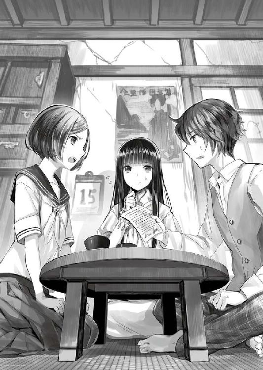
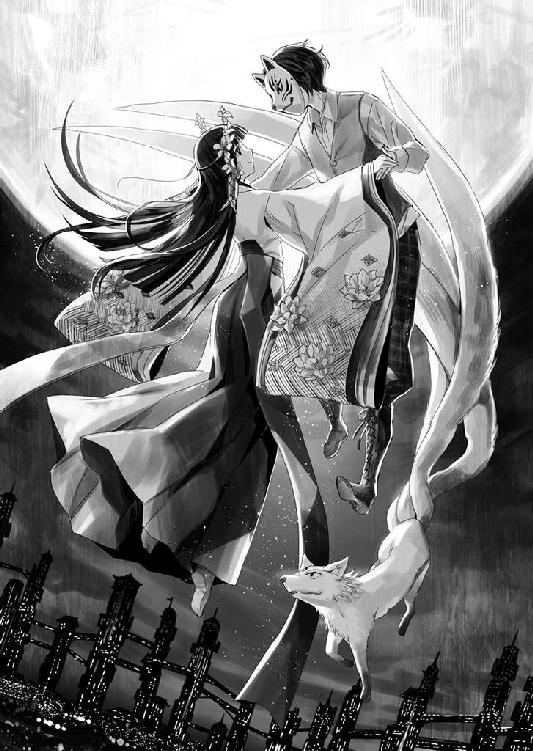

| 東亰ですとぴあ ～終わらぬ昭和のあやかし奇譚～ (桜ノ杜ぶんこ) | |
| くしまちみなと | |
| (2015) | |
桜ノ杜ぶんこ
東亰ですとぴあ
〜終わらぬ昭和のあやかし奇譚〜
くしまちみなと
壱
昭和八拾九年八月朔日・日本皇国東亰府──
りーん......。
逢魔ヶ刻を迎えてもなお蒸し暑く、しつこく地表を漂う陽炎や逃げ水を祓う風鈴の音が、下界の街中のそこここから響き渡っていた。
下界は今上帝の〝生誕百拾伍年祭〟を来年に、そして四年後の昭和九拾三年に行われる〝府制百伍拾年祭〟を控え、それぞれの準備で活気に満ちていた。
しかし、活気......というものの一国の首都としては、街を行き交う人の数は寂しさを感じさせるものだった。
大戦の影響を直接受けていないはずの東亰府も、四年前に世界的に大流行した〝第四次スペイン風邪〟の直撃を受け、荒川以東は、ほぼ廃墟と化した。全世界での病死者二九〇〇万人の内の約五〇〇万人が日本での病死者数であり、そのうちの二〇〇万人近くが東亰府での病死者だった。その翌年には東日本全域を震災が襲い、東北地方は潰滅的な打撃を受け、東亰府が受けた打撃も尋常なものではなかった。
すべてがマイナス方向に傾きつつある。
東亰府のみならず日本全域の人口の減少は、それを如実に表していた。
日本だけではない。一〇〇年近く続いている終わりの見えない〝欧州大戦〟と、定期的に襲ってくるこの〝スペイン風邪〟の病魔によって世界は蝕まれ、ゆっくりと、しかし確実に人類は衰弱の一途を辿りつつあった。
東亰府北区にある摩天楼群の一角で最も高い、高さ約六〇丈（約一八〇メートル）の古河摩天楼の最上階から、そんな人の気配が少ない東亰府東部の夕景を眺めている少女がいた。彼女は絹の巫女装束と千早をまとい、年頃は一五、六歳ほど。まだ幼さが残る顔に憂いと心配に満ちた表情を浮かべ、強く吹く風で長い髪が乱れるのもお構いなしに腰高の窓から身を乗り出して夕景をジッと見ていた。
──おかしい......。
夕景を眺めているだけで心がざわつき、鳥肌が立つほどに背筋に悪寒が走っていく。開いた窓から吹き込む風には、僅かながらにすえた臭いが混じっているようにも思えた。
少女は、南に見える宮城と天祖大神宮──双塔の摩天楼に目をやった後、そこから西に目をずらして一本だけ独立した柱のように建つ〝斎宮の塔〟に目をやり、まだ残る落日の残滓に目を細め、再び眼下に広がる黄昏色に染まる街を眺めた。
オレンジ色の夕景の街が、次第にどす黒い赤色に浸蝕されていくような錯覚を覚え、彼女は軽く頭を振り、額に指先を当てながら目を閉じた。
──幻覚よ......。そのようなことが起こるはずがない。
ゆっくりと目を開けると、そこは元通りの黄昏色の街に見えた。しかし、風に乗ってくるすえた臭いは未だに消えることはなく、その風に触れているだけで悪寒が全身に絡みついてくるように思えた。
少女は窓から身体を引っ込めると、険しい表情を浮かべて後ろ髪をまとめ縛りながら、その階の中央に置かれた祭壇に向かった。
この階の部屋はこれひとつのみ。壁ひとつ無く四〇本の柱が部屋を支えていた。部屋の中央は一段高くなっており、そこには東に鏡面を向けた銀色の鏡と祭壇が設けられている。
少女はその祭壇に向かって二礼すると、傍らに置かれた座卓の上から金冠を取って髪に刺した。そして隣に置かれた水桶から、榊の束をつかんで一段高い座に登り、祭壇の正面に正座した。
座ったその目の前には、御神体とは別に銅鏡が寝かせた形で置かれており、彼女は手水鉢から水をすくいその銅鏡の鏡面を濡らして水を張った。
それから彼女は呼吸を整えて目をつむり、ゆっくりと榊を振るいながら祝詞を唱え、祈りをはじめた。
彼女の名は香具夜。
名字はない。
香具夜は斎都宮と呼ばれる巫女だった。
斎都宮とは巫女の頂点に立つ斎宮と直接会話し、様々な卜占や神託を得る資格を持つ、将来の斎宮候補者たちのことだった。その中でも占いの技術に優れていた香具夜は卜占部と呼ばれる部署に所属し、この古河摩天楼の最上階に置かれた北天外宮の斎都宮として皇都北部の護りの要となる存在だった。
焚き込められた抹香の香りと薄い煙が漂う中、香具夜は神託を得るべく祭壇に向かって一心不乱に祈りを捧げ、榊を振るい続けた。
「源朝臣、香具夜に御神託をお授けください......」
約一〇分ほどの祝詞の詠唱の後、そう祈りをしめくくり、さらに榊の束を左右に振った香具夜はゆっくりと目を開け、碧の眼を目の前にある水を張った銅鏡に向けた。
眼前の銅鏡には薄墨色の文字がいくつか浮かび上がっていた。文字は〝世界〟〝妖〟〝下街〟〝朝臣〟という言葉を表したが、それがなにを意味するものなのかつながりが見えず、神託の内容が香具夜には分からなかった。
──どういうことなの......？
香具夜は眉根を寄せながら、鏡面を覗き込み考えた。
だが、答えは出てこない。
先ほどから感じる皇都を覆うような不吉な気配が何なのか？ それすらも彼女には言葉として形にすることができなかった。
ただ、漠然とこの皇都を蝕むような不吉な気配が漂っている。しかも、それが尋常じゃないほど強い力を潜めている。魔獣が獲物を待ち構えて、じっと息を潜めて隠れているような......そんな感覚だった。
そんな曖昧な情報は、宮城や国府（国会）に報告することができない。もっと具体的な情報じゃないと、国府の議員たちは困惑してなにをすることもできないだろう。
銅鏡の鏡面に浮かぶものは文字ばかり。それ以上に具体的なビジョンも言葉も現れなかった。
「私は......どうかしてしまったのか？」
自分の能力がおかしくなってしまったのか？ と、そんな不安が鎌首をもたげた時だった、銅鏡の鏡面に浮かび上がっていた文字がなにかに喰われていくように蝕まれ、消えていった。
「これも......予兆？」
そう小首を傾げた時、香具夜の目の前をなにかがヒラヒラとよぎっていった。
ハッとして顔を上げた彼女が見たものは〝翼〟という文字だった。
幻覚かと思い目を擦ったが、〝翼〟は蝶々のように二本の羽をヒラヒラと動かし、吹き込む風の中をたゆたうように飛んでいた。幻覚ではない。
「これは......？」
香具夜は立ち上がり、御神体に向かって一礼し、乱暴に金冠を外して座卓の上に置いて髪をほどくと、柱二本ほど下がった所にある衝立に囲まれた香具夜の私物を入れておく葛籠の前まで駆け戻った。戻りながら乱暴に千早をその辺に脱ぎ捨て、衝立の陰に入るや緋袴も白衣も脱ぎ散らし、襦袢も脱いで衝立にかけた。
香具夜は着物の下に下着をつけておらず、染みひとつない真っ白な雪のような素肌を惜しげも無く晒したまま、葛籠を開けて中から洋装と下着を取りだした。
「庶民は......このような服を着けているというが......」
今上帝生誕壱百拾五年祭に、お忍びで下界に降りて祭りを見ようと、同じ年頃の巫女にお願いして買ってきてもらった洋装だった。買ってきてくれた巫女の話では、世間ではモガと呼ばれる服装だという。
着付け方は、買ってきてくれた巫女がメモとして残しておいてくれた。
それを見つつ、四苦八苦しながら下着を身につけ、ワンピースとショートジャケットを身につけた。そして、帽子を被る。
「着物より......軽い......」
パンプスはぽっくりより履きやすかった。なによりも、急いで動くことに向いた服装だった。
身支度用の姿見で服装を確認した後、香具夜は小さめのバッグの中に無造作にお金を押し込んだ。
ほぼ箱入りで生活しているとはいえども、下界で必要な最低限度のことは分かっているつもりだった。
衝立の陰から出た香具夜はキョロキョロと辺りを見回して、飛んでいる〝翼〟を探した。
すでに〝翼〟は南側の柵まで飛んでおり、香具夜はあわててその柵にかけよった。
陽は西の稜線にかかり、富士の影が黒々と宵闇が迫る空に浮かび上がってどこか不吉な印象を与えていた。
皇都の東側は、もう宵闇に包まれ始めており、〝斎宮の塔〟はもはや黒い柱にしか見えなかった。〝翼〟はその塔を目指そうとするかのように、ひらひらと南西の方角に向かおうとしていた。
──これは予兆。せめてどこに導こうとしているのか、アテをつけなければ......。
不吉な気配の出所を探って、そこに行かねばならない。
だが、皇都のどこからもその妖しい気配を感じるような気がしてならず、具体的にドコという目星をつけることができなかった。
「どうすれば......なっ!?」
その時、目の前を〝翼〟という字が流れていった。
もがき苦しみながら、必死に恐怖から逃れるように......。
その〝翼〟の後を、小さなメダカのような形をしたモノが群を成して追いかけていた。
「紙魚ッ!? なぜ、この外宮にいるのか！」
それは、紙魚と呼ばれる妖だった。紙を好みそれを食して書物を台無しにすることから、宮中や図書館では忌み嫌われ、紙魚除けの術と薬がまかれている。そのためこの摩天楼にはいるはずがない妖だった。
そして紙魚は、怯え逃げ惑う〝翼〟に鯱のように群れで襲いかかり、その文字の造りを食い散らかしていった。
やがて〝翼〟は力尽き、翼をはためかすことなく宵闇の空に墜ちていった。
「いったい、なにが起きようとしているの......？」
紙魚が変質して新たな力でも身につけたか？ それを調べようと身を乗り出した時、香具夜は背後に殺意混じりの妖気を感じて振り返った。
そこには、鷲のような巨大な翼を持つ、体長が三メートルを超える狒々が牙を剥いて、威嚇するように低く身構えていた。
「誰か！」
人を呼ぼうとしたその時、狒々はシャアアアアッと蛇の威嚇する音を放ちながら跳びかかってきた。
とっさに一歩下がった香具夜は、踵が柵に当たって足を取られ、仰け反った拍子に柵から墜ちた。
すべては一瞬の出来事。
だがその時、当の香具夜には何万秒にも思える時間が流れていた。
ゆっくりと流れて遠のいていく摩天楼最上階の天井。それと同時に視界に流れ込んでくる星々のような淡い町明かりと混じり合う黄昏れた空。
混じり合うふたつの色に香具夜は上下感覚を失い、自分が今、摩天楼から落下していることに気づけなかった。
なによりも狒々が翼を広げて追ってきたことが、香具夜から墜死する危機感を奪っていた。
「私を殺す気？」
ビュウビュウと耳元を掠めて顔をなめてゆく風に目を細めながらも、追ってくる妖魔を睨みすえた。なにひとつ武器らしきものを持っていないことに歯がみしながらも、香具夜は懸命に戦う方法を探した。
弐
若干、時間は戻る──
王子神社と王子稲荷神社の門前町として広がった王子の街中を、油紙を張った和傘に大量の風鈴をぶら下げた浴衣姿の風鈴売りの女が、売り声を上げることもなく、ゆっくりとした足取りで重そうな傘を掲げ持って歩いていた。
りりーん......。
時折吹き流れる風が傘から下がる風鈴を揺らし、鉄、硝子、陶器など、様々な鈴音を奏でさせた。その音が響くたびに、周囲にいた夏の暑さで地表を揺らがせる〝蜃気楼〟やら〝逃げ水〟たちは逃げ去り、人の住まう土地から離れていく。
大半の魔物や妖は鈴の音を嫌う。
そのため、大量に〝蜃気楼〟や〝逃げ水〟が街に現れる夏場に、人々は自衛のために軒先に風鈴を吊すことが江戸時代からの慣わしとなっていた。
風鈴の音色は、なぜか夏場にしか効果を発揮しない。おそらくは、その音色が夏場に集まる妖たちが特に嫌う音色なのだろうというのが、近年の学者たちの見解だった。
黄昏れた陽がさらに傾き、街角の至る所に薄闇ができはじめる。じきに逢魔ヶ刻となり、魔が跳梁する時間となる。
風鈴売りの女がそろそろ帰宅の途につこうとした矢先、その足元を、何かを咥えた影が走り抜けた。
「あっ!!」
危うくバランスを崩しかけて倒れそうになった風鈴売りの女が足を開いて踏ん張り、両手で傘を支え直すと、さらにその脇を二本の尾を持つ小さな狐が走り抜けた。
『ごめんよっ！』
「御狐様!?」
最初の影を見ると、そこには油揚げを咥えた狢がこちらを振り返り見て、ゴメンなさいと言うように軽く頭を下げていた。
狢と狐の追いかけっこを見て、風鈴売りの女は小首を傾げた。
この王子では王子稲荷という関東稲荷の総大将がいることから、狐は神使として崇拝の対象となっていた。もちろん、落語の〝王子の狐〟のような小咄にもあるように、ただ崇拝するだけの存在ではなく、化かし化かされと、狐と人間は楽しむような関係をこの地域では築いてきた。
ちなみに最初に駆け抜けた狢は別に崇拝対象ではなく、この付近に住む人間にとっては悪戯者でしかない。それは狐にとっても同じであり、狢と狐は人を化かす妖として一緒にされるが別に仲がいいわけでもなかった。
なお、狢とは本来はアナグマのことを指すが、地方によってはハクビシンやタヌキのことも呼ぶ場合があり、今、二本尾の狐に追いかけられているのは、アナグマの姿をした妖だった。
呆然と狢と狐を見送った風鈴売りの女のすぐ隣に、今度は一五、六歳の少年が駆け込んできた。少年はハンチング帽にベストという洋装を着込んでいたが、どこかサイズがあっていない印象があった。
「ごめんよっ！ 六本木！ 僕は回り込むからそのまま追い詰めろ！」
『おうさっ！』
二本尾の狐はそう返事をすると、そのまま狢を追いかけていく。
「草平ちゃん!? じゃあ、あれは？」
「長屋で悪さをしてる悪戯狢をようやく見つけたんだ！ 商売のジャマをしちゃってゴメンね！」
草平は笑ってそう答えると、横道に駆け込んで狢の先回りをしようとした。
久坂草平はこの王子近辺でなんでも屋をやっており、稲荷の神使とも言える二本尻尾の〝尾裂き狐〟の六本木と組んで仕事をしていることから、この界隈ではそれなりに名の知れた少年だった。
妖と仲が良いなどというと人からは敬遠されそうなものだが、そこはこの王子である。
王子稲荷の神使とも言える妖狐と仲が良いなら縁起の良い奴と逆に応援される始末だった。
草平は走りながら、腰に下げていた長さ三〇センチほどの太めの鉛筆のような棒を引き抜いた。断面は六角の鉛筆なのだが、草平は銀の輪がついた棒の柄尻を握って指揮棒を振るうように空中でその棒を動かした。
するとどうか？ 棒の尖端の軌跡を追うように、空中に墨色の線が描かれてゆく。
やがてその線は墨絵のような形を作り、瞬く間に一羽の烏を描き出した。
「ゆけっ！」
草平はくるりと棒を回して今まで握っていた柄尻の銀の輪でその絵を軽く叩くと、墨絵烏は羽を広げて羽ばたき、そのまま宙を舞って飛び立った。
さらに草平は兎を空中に描き、また棒の柄尻でその兎を叩くと、ぴょんとひとっ跳びして地面に降りるや、烏の後を追って凄い勢いで走り出した。
草平はその棒を腰に戻し、背中に斜めがけして背負っていた短めの鳶口を右手に構えて二匹（？）の後を追って走り出した。
鳶口とは江戸時代から存在する木造建造物の解体や移動に使われる鳶の嘴のような鋭い金属製の金具がついた道具であり、材木を扱う鳶職人や火消したちが持ち歩いている道具だった。
墨絵烏は空を飛び、墨絵兎は塀の隙間を潜ってさっさと走り抜けて行くが、人間の草平はそうはいかない。しかし、草平は鳶口の嘴を軒先にかけて壁をすいすいと跳び登り、長屋の屋根に上がって墨絵烏の後を追い続けた。
そして墨絵烏が空を旋回する真下に草平がたどり着くと、墨絵兎が狢を蹴り倒し、バシバシとその頭を後足で叩き、踏みつけている所だった。
『おまえの描く兎は、いつも凶暴だな。特に、狸と狢に容赦ねえな』
「カチカチ山の読み過ぎかもな」
六本木の指摘に草平は苦笑しながら、鳶口の先を狢に向けた。
「悪戯が過ぎて長屋連中から苦情が来ている！ 大人しくお縄をちょうだいしろ！」
墨絵兎に促されて後足立ちした狢は、両手を上げて命乞いをするようにコクコクと頷き哀願の眼差しで草平を見つめた。
「あー......そういう目で見るなよ」
草平がやりづらそうに頭をかくと、狢は前足を地面につけて平身低頭という感じに土下座し、頭をコクコクと下げた。
「参ったなぁ......」
どうすると草平が六本木を見ると、俺は知らねえとばかりに彼はソッポを向いた。その瞬間、六本木の目はおかしなモノを捕らえてカッと目を見開いた。
『あれは......？』
六本木の呟きに草平が彼の目線を追うと、近くに聳える古河摩天楼の最上階から人が落ちてくるのが見えた。
「ヤバイ！ 六本木！」
『おいさっ！』
六本木はすでに走り出していた。
「狢。今日は見逃すが次はないぞ！」
そう狢にクギを刺して草平は先に走り出した六本木の後を追いながら、墨絵烏の背中に〝妖〟の字を描き入れた。
「こっちのが速い！」
草平の叫びに一八〇度方向転換した六本木は、低空で滑空してきた墨絵烏に飛びついた。
その瞬間、六本木は墨絵烏に溶け込むように消えて、烏は瞬く間に人を背中に乗せて飛べそうな巨大なサイズに変化して地上に舞い降りた。
『乗れっ！』
草平がその大墨絵烏の背中に飛び乗ると、墨絵烏となった六本木はひとつ羽ばたいて空に舞い上がった。それとほぼ同時に墨絵兎はそのまま霧散するように消えて行った。
後に残された狢はいいのかな？ というように首をひねりながら、落とした油揚げを拾い上げ、トコトコと長屋の縁の下に消えて行った。
『どうなってんだ？ やたらと落ちるのが遅えぜ？』
「妖に妖術でも使われたな。ほら、上からあの子を妖が追いかけてきた！」
草平の言葉に摩天楼に顔を向けた墨絵烏は舌打ちした。
摩天楼から墜ちている人影は非常にゆっくりとした速度で落下しており、後から追いかけるように塔から飛んだ妖がすぐに追いつきそうな状況だった。
『やべえな......』
「なんとかする！」
草平は再びあの棒──妖筆を腰から抜き、手元に墨絵のオナガを描き出した。
「舞え！」
棒についた銀の輪でそのオナガを叩くと翼を広げて飛び立ち、六本木の墨絵烏の先に立って空を滑るように摩天楼の壁に沿って上空に舞い上がった。
『墨絵の鳥のくせに、風を掴むのが巧えな......』
「墨絵と言っても本物と変わらないさ。お前も行けよ！」
『おうさっ！』
草平を背に乗せた墨絵烏はオナガに続いて上昇気流をつかむと、一気に高度を上げて上空に舞い上がった。
一方、落下中の香具夜は自分が摩天楼の上からあり得ない低速度で落下していることにようやく気づいた。
──妖魔に糸でも張られたか？
蜘蛛の糸のようなものを張って襲ってきた妖魔が落下速度を鈍らせている可能性はあった。しかし、手を振って自分の周囲を払ってみてもなにひとつ腕に絡みつくものはない。
──術か！
鷲の翼を背に生やした狒々は、血走った目を香具夜から離さず落下速度を上げて見る間に近づいてくる。
狒々の落下速度が速くて香具夜の方が遅いとなれば、そこには自然の摂理以外のなにかが作用していることになる。
香具夜は刀印を結んだ右手を鼻先に構え、さらに刀印を結んだ左手を狒々に向け、呪句を叫んだ。
「我が身を掴む妖しき見えざる手に命ずる。妖物の強者遭遇の理に沿いその手を緩め我が身を離せ！ 急々如律令！ 勅！ 勅！ 勅！」
呪句が響き渡ったその瞬間、香具夜の背中に感じる風の当たりが強くなった。
耳元で吹き荒れていた風音も激しくなり、摩天楼の尖端と身体を結んで落下速度を落としていた見えざる紐が切れたかのように香具夜は速度を増し、狒々との距離が遠のいた。
遠のく香具夜に驚きの眼差しを向けていた狒々は奇声を放ち、翼を畳んで抵抗を減らし、一直線に香具夜に向かって突き進んできた。
「何が何でも私を狙う気か!?」
この狒々は自分を殺すことが目的ではない。自分のなにかが必要なんだ。そう悟った香具夜が、ならば捕まる前に自分の命を絶つしかないと覚悟を決めたその時、薄墨色の小さな影がヒュッとその傍らをすり抜けた。
「なっ!?」
キジバトよりも一回りほど大きく、尾がやたらと長い鳥の影。
それは果敢にも狒々に飛びかかり、その顔を突き回した。
「やめなさい！ 私のために戦うことなんてないのよ！」
野生のオナガが自分を護るために妖と戦ってくれている。
そう誤解した香具夜はオナガを止めようと必死に叫んだ。だが、オナガは突き回すことを止めず、うっとうしげに振り回された狒々の爪にかかり、弾けるように空に散っていった。
「そんなっ......なんてことをっ!!」
香具夜が狒々を睨みつけた時、狒々の目は香具夜ではなくその背後に向けられた。
「よそ見をしているヒマが......えっ!?」
フワリと風が動き、背後から香具夜は柔らかく抱きかかえられた。
「よっと！ 受け止めた!!」
若い男の声に驚き、自分を抱きかかえた男──草平の顔を見ると、その瞳が紅く輝いていることに気づき香具夜はあわてた。
「人妖か!? 貴様があの妖の送り主か!!」
「はあっ!? ちょ、ちょっと！」
草平は抱きかかえた少女がなぜそんなことを言い出したのか理解できず、ポカーンとした顔で香具夜を見つめた。だが、その隙を突いて香具夜は手をふりほどこうと暴れ、とっさに彼女を押さえることもできなかった。
「ああっ！ ああああああああああああああああっ!!」
草平の手から逃れた香具夜は真っ逆さまに、今度は頭から墜ちることとなった。
『バカだな......お前は......』
墨絵烏のボソッとした呟きも聞こえていない様子で草平は叫んだ。
「くそっ！ 追ってくれ！」
墨絵烏は舌打ちして向きを変えるや、頭から地表に向かって墜ちていく香具夜の後を追った。遅れまいと、その後を狒々も追う。
『まるで合衆国で流行ってるチキンレースだな......』
落下速度から想定するなら地表まで数秒。だが、墜ちていく者たちにとっては無限に思える時間が流れた。
「後ろに狒々が迫ってるぞ！」
『しつこい奴め......』
地表十数メートル近くで落下する香具夜を嘴で捕らえた墨絵烏は、彼女を咥えたまま翼を広げて羽ばたかせ、全力ブレーキをかました。
『このっ！』
墨絵烏は地表ギリギリまで落下し路面の煉瓦を掠めつつ、爪でその表面をガリガリと削り取りながら地面を蹴って飛び上がり、再び宙に舞い上がった。
一方、狒々は落下速度を減速できずにそのまま地表に激突し、煉瓦を砕いて周囲に細かい破片を飛び散らせた。
『死んだか!?』
隕石でも落ちたかと思うような破壊痕が煉瓦敷きの道路に穿たれていた。周囲にいた人たちはが何事かと空を見上げ、そして顔を下ろして道の破壊痕をのぞき込んだ。
破壊痕の中心には、頭から地面にめり込むようにして狒々が突っ伏していた。
地面にめり込んだ狒々を油断なく睨みながら墨絵烏は近くの三階建てのビルの屋上の縁にとまり、咥えていた香具夜を下ろした。
『死んだか？』
薄墨色の煙を周囲に振りまきながら墨絵烏から尾裂狐の姿に戻った六本木は、誰に訊くでもなく再び訊ねると、香具夜に近づき、ぐったりとして意識を失って横たわる彼女の襟元にクンクンと長い鼻先を近づけて臭いを嗅ぎはじめた。
『生きてんな。...ったく、びっくりさせやがるぜ。危うく咥えてつぶしちまったかと思ったぜ』
六本木の心底ホッとした様子に草平はクスクスと笑いながら香具夜の傍らに跪き、彼女の脈を探るように首元に指を押し当てた。六本木の確認通り香具夜の脈動が感じられた。
『さて、この子を助けたはいいが、どうすんだ？ この女は抹香臭えから、神社の関係者かもしれ......って、おいっ!?』
地面に頭を突っ込んでいた狒々が目を覚ましたのか、腕を突っ張って地面に突き刺さった頭部を引き抜いた。
「死んでなかったか......」
『多少は......ダメージはいったか？』
六本木は訝しむような表情を浮かべて地面に両手をついて顔を出した狒々を見据えた。
だが、その期待とは裏腹に、狒々は血の一滴も流しておらず、すぐさま立ち上がって周囲を見回しはじめた。
『なんだありゃ!? あんな頑丈な妖は見たことねえぞ！』
狒々を見てあわてて六本木は叫んだが、草平は落ち着いて地面に激突しながらも立ち上がる妖魔の姿を観察していた。
「あれは......式かな？」
『式だとぅ!? 妖術師がいるってことか！』
あの高度から落下し、激しく路面煉瓦を破壊しながらも無傷で立ち上がってくるなど、生物の範疇にかろうじて存在している妖でも、中々できない芸当だった。
「やり合うしかなさそうだね」
『そうなるか......くっそ！ どこの妖術師の仕業だ。ザギンでシースーを奢らせたい気分だぜ』
たまに六本木は草平には理解出来ない不思議な言葉を言う。時々それを訊ねたくなるが、いつもこうした予断を許さない状況で使うものだから、質問することができないでいた。
「前々から訊きたかったんだけどさ。それ、何語？」
『あぁん？ 俺がしゃべってんのは立派な日本語だよ』
「なるほど......」
つまり、どこか地方の言葉かと草平は納得し、背中に収めていた鳶口を引き抜いた。
左手に鳶口、右手に妖筆を持っていた草平は、妖筆で再び空中にサラサラと墨絵を描きはじめた。
それは、柴犬ほどの大きさの神社を護る狛犬のような獣の絵だった。
描き上げると、草平は柄尻の銀の輪でその狛犬の絵を叩いた。すると狛犬は大きくノビをした後で座り、草平の指示を仰ぐようにその顔を見上げた。草平は狛犬に指示は出さずにその背中に〝妖〟の文字を描き込んだ。
「六本木！」
『おうさっ！』
声をかけられた六本木が狛犬に飛びつくと、またその身体に溶け込むように消えて行った。すると、狛犬は瞬く間に大きくなり、セントバーナード犬ほどの巨体になってその場に伏せて身構えた。
『やり過ごすって手はあるぜ？』
キョロキョロと辺りを見回している狒々から目を離さずに、六本木はそう囁いた。だが、同じように狒々を見ていた草平は小さく首を振った。
「無理だよ。アイツは、きっと追ってくる」
『賭けるか？』
「扇屋の卵焼きを賭けてもいいよ」
草平の提案に六本木の目がキランと光った。
『その賭け乗った！』
扇屋とは江戸時代から続く王子でも有名な卵焼き一筋の店であり、創業してからすでに三六〇年を数える老舗だった。
「じゃあ六本木の負けだ。すぐに僕らを見つけるから、卵焼き代を用意しておけよ」
『なにおぅ！』
狒々は耳を澄ませていたのだろう。
六本木の声にカッと振り向いた狒々は、すぐさま翼を羽ばたかせて草平と六本木が潜むビルに向かって飛び立った。
『草平、おめえ！』
「賭は僕の勝ちだね。幸に今夜の夕食のおかずが入ったって後で伝えないとね」
『くっ！』
日頃世話をしてくれている草平の妹の名前を出されると、六本木は賭は無効だとは言えなかった。
六本木はビルの屋上の縁まで這いより、そこでジッと身を伏せた。
対する草平は立ち上がり、棒を腰のベルトに差して鳶口を両手で構え、迫ってくる狒々を見据えた。
「どんな理由があってあの子を追っているのかは知らないが、あの子は渡さない！」
草平の挑発に狒々はカッと口を開き、蛇の発する威嚇音のような叫びを放った。
『ケッ、猿が......』
ブワッと風を周囲に渦巻かせてビルの屋上に躍り出た狒々。タイミングを計っていた草平はその顔面に、鳶口を横薙ぎにバットを振るように叩き込んだ。
狒々は出会い頭のこの攻撃を避けきれず、モロに鳶口は顔面に叩き込まれた。しかも、煉瓦の道路に頭から突っ込んでも傷ひとつ負わなかった狒々の鼻先に鳶口の切っ先は突き刺さり、鼻を斬り裂いた。
狒々が絶叫をあげるかと思いきや、絶叫も血しぶきも飛び散らなかった。
だが、草平の攻撃でバランスは崩れ、飛行速度も鈍った。その隙を逃さず、身を伏せて隠れていた六本木は狒々ののど元に噛みつき、屋上に引きずり倒した。
もがこうとする狒々の両腕を前足で押さえつけたまま、六本木は噛みついた口を離そうともしなかった。
その隙に正面に回り込んだ草平は、懐から王子稲荷の符を取りだして狒々の腹に貼り付けるや、渾身の力を込めてそこに鳶口の切っ先を打ち込んだ。
電気が走ったかのようにビクンッと狒々は一度身体をうねらせた。だが、それ以降微動だにせず、やがて翼を生やした狒々は消え、後には王子稲荷の符を腹部に打ち付けられた和紙製の人型が残された。
『こいつは、どうする？』
そう六本木が前足で残された人型をさしたが、それは瞬く間に燃え上がり王子稲荷の符のみを残して跡形もなく消え去ってしまった。
『追われる痕跡は残さず......か......。やだねぇ、こういう陰湿な妖術師はよぅ』
狐に戻った六本木はそう吐き捨てるように言ったが、草平もそれに同意するように小さく頷いた。
人型が残っていれば、それを辿って術者を特定できたかもしれない。
「相手は陰陽師......かな？」
『さて、どうかね。最近は、坊主も式神を使うって言うぜ？ 修験道に道教、密教と、怪しい奴らはキリがねえな......。おっと、この場合、キリスト教徒たちは無縁だな』
「イスラム教もだよ」
『そうだな』
屋上の床に寝かせたままの香具夜は未だに意識を失ったままで、事情をここで聞き出すことはできそうも無かった。
しばらく考え込み、ハンチング帽をとって頭をガリガリとかいた草平は、小さくため息をついた。
「仕方がない。この子はウチに連れて帰ろう。ここに放置しておいたら、また新手の妖術師にやられるかもしれない」
『賛成だ。さっさと帰ろうぜ』
もっともらしく頷き立ち上がった六本木に、草平はニヤリと笑みを浮かべた。
「扇屋には寄ってくからね」
『ヌガッ！ ちょ、おま......くっくうぅぅぅぅっ！ いいだろう！ 男に二言はねえ！ 次こそは俺が勝って、お前に卵焼きを買わせてやるからなっ!!』
草平は香具夜を背負いながら六本木の言葉に笑顔を見せた。
「ごちそうさま。一勝でも僕に勝てたらいいね。今日の勝利で、僕の戦績は五六勝零敗だからね」
『くっ！ ちくしょおおおおおおおおおおおっ！ あんまり俺様をなめると化けて出てやるからな！』
「もう化けてるじゃん。尾裂き狐にさ」
『くうっ！ も、もっと凄いのに化けるぞ！』
「できるならやって見せてよ。そしたら僕も苦労が少し減るかもしれないからさ」
香具夜を背負った草平と六本木は、そんなやりとりをかわしながらビルの屋上から建物の中に姿を消していった。
参
先ほどまで香具夜がいた摩天楼の屋上に赤目の烏が舞い降りた。
烏がコツコツと三度床を嘴で叩くと、どこに隠れていたのか、フワリと空気を歪ませて目の部分のみを出す時代劇にでも出てきそうな頭巾を被った狩衣姿の男が現れた。
男は床に膝をつき、手もつくと、額を床に打ち付けるように赤目の烏に叩頭礼をした。
『首尾はどうだ？ 斎都宮の鍵は奪えたか？』
叩頭礼をしたままのその頭巾の男は、恐縮したように身体を震わせながら答えた。
「申し訳ございません。後一歩という所でジャマが入り、取り逃がしました。しかし、ご安心ください。すぐにも後をつけ、どこに斎都宮殿下をさらっていったのか確認し、鍵を奪って参ります」
『そうか。あい分かった。そなたにも苦労をかけるが、これも世直しのためだ。身を粉にして働いてくれ。それに対する報いは必ずおこなおう』
「ははっ！ もったいないお言葉。ありがとうございます」
頭巾の男がさらに恐縮して額を床に押しつけた時、男は赤目烏が低い小さな声で何かを呟いていることに気づいた。
「へっ......かっ......か......」
男は顔を上げてなにかを言いかけたものの、すぐにトロンとした目つきになってそれ以上話すこともなく、フラフラと立ち上がった。
そして酔っ払いの千鳥足のような足取りで窓辺に近づくと、その目に笑みを浮かべながらそこから身を投げた。
落下音はここまでは聞こえてこなかったが、地上でどんな屍体になっているのかくらいは赤目烏にも容易に想像できた。
「無能が......」
赤目烏はそう吐き捨てるように呟くと、宵闇の空に羽を広げて舞い飛んでいった。
壱
しゃららららん──
強い風に吹かれて硝子製の大量の風鈴が、波打つような音を鳴らしていた。
「ぅん......」
風鈴の音で目覚めた香具夜は、自分が見知らぬ天井を見上げていることに気づき、ゆっくりと目だけを動かして周囲の様子を窺った。
寝ている布団は肌触りが悪い粗末な木綿製のものだった。布団に寝かされているということはもしかしたら、あの人妖から救い出してくれた人間がいて、その人物の家に寝かされているのかもしれない。実際、手足は拘束されておらず、自由の身だった。
窓ガラスは薄いがしっかりとした木枠に入れられたもので、半分だけ窓が開けられていた。そこから夏の朝の風が入り込んできていた。先ほどの風鈴の音もそこから流れ込んできたもので、近くに風鈴売りがいるのだろう。
窓から見える景色は低く、古河摩天楼群の姿が意外に近く見えていた。そこから察すると、ここは地表近くの一階か二階の家ということになる。
──しかし、ここはどこ......？
この家の主に害意がなさそうだと判断した香具夜は上半身だけ身体を起こし、さらに部屋を見回した。
天井は、フシがたくさんある色あせた板材で作られた年季を感じさせるものだった。天井だけではなく、部屋全体も年季が入ったものだった。
築五〇年くらいの木造の家で、ロクに手入れがされていないのだろう。漆喰の内壁の一部は崩れて鼠が出入りできそうな穴が空いていた。柱も傷だらけであり、誰かが背の高さを測っていたらしい傷痕が残されていたし、畳もすり切れた所がたくさんあった。
ただ、開けられている窓からしか風が入ってこないことから、漆喰の穴も奥で塞がっているのだろう。窓ガラスもピッチリとはめられていることから、スペイン風邪の対策だけはしてあるようだった。
これらを見れば、ガラスにお金をかけるために、畳や壁などお金を回す余裕がないことは想像できた。カーテン代わりの障子戸も障子紙の切れた所を綺麗に紙で繕ってあった。
──庶民の......家......？
香具夜を助けたのは、庶民の──しかも、かなり貧しい人だということが理解できた。少なくとも、よほどの物好きでもない限り貴族はこんな家には住まないし、神官たちも同じだった。
さらに部屋を調べようと香具夜が立ち上がりかけた時、ツギハギがあたった襖を軽く叩く音がした。
たぶん、香具夜が起きる気配を察して家主がやってきたのだろう。香具夜は着せられていた薄い浴衣の身だしなみを整えてから布団の上に正座し、家主を出迎えるべく返事をした。
「どうぞ」
「失礼します」
そう言って襖を開き現れたのは、白い夏用のセーラ服を着た一二、三歳くらいの女学生だった。ショートカットに切られたやや明るめの茶色の髪は、伸ばせばとても綺麗な髪になるように思え、しっかりした性格が窺える、意志の強そうなはっきりとした顔立ちをしていた。
「お加減はどうですか？」
しかし、そんな少女の外見の印象とは裏腹に、話し方はどこか控えめな様子だった。
「おかげ様で問題はありません。私は、どれくらい寝ていましたか？」
「夜の間もお目覚めにならなかったので、ほぼ半日はお休みになっていたと思います。あの、こちら......」
そう言って少女は綺麗に畳んだ香具夜が着ていた衣服を差し出した。
「すみません。洗っていいものか分からなかったので、とりあえずシワにならないようにしておきました」
「え？ あ、ありがとうございます」
差し出された衣服を受け取ったものの、香具夜もそれをどう洗うのかまでは知らなかった。買ってきてくれた巫女に聞いておけばよかったと思ったが、今さら遅すぎた。
「凄く素敵な服ですね......。見ているだけで、ドキドキしてしまいました」
「そう......。そう言ってもらえると嬉しいな......」
貴女はどんな服を持っているのと言いかけ、香具夜はそれを口に出す前に押し留めた。
こんな粗末な家に住んでいる少女が、流行の最先端らしい衣服を買えるはずがないことに気づいたからだ。いくら香具夜が殿上人であってもそれくらい理解できる。
「あなた、その制服は......。女学生？」
「はい。今年の春に区立王子高等女学校に入学したばかりです」
「そう......」
嬉しそうに頷いた少女に、香具夜も笑みを浮かべた。
香具夜は生まれてこの方、学校というものに行ったことがなかったが、知識としては知っていた。
尋常小学校と高等小学校を卒業した女子のみが行く学校が、高等女学校だった。
義務教育は四年教育の尋常小学校のみであり、貧乏な生活を送る家の子どもたちはそのままどこかに働きに出るのが常だった。その後、二年教育の高等小学校で成績が優秀と認められた女子のみが受験することができるのが高等女学校であり、一二～一三歳で入学した彼女たちは、そこで五年間の教育を受ける。
二〇年ほど前までは、さらにその上の高等学校（大学）に女子は進むことができなかったが、女性の権利運動が盛んになったことから高等学校も門戸を開くようになった。もっとも、そこまで進学する女学生は稀であり、門戸こそ開いたものの、この二〇年で高等学校に進学した女子は、日本全国で百人にも満たなかった。
すでに女学生というだけでも十分に選ばれた存在であり、在学生たちはそれを誇るように、女学生にだけ着ることを許された女子セーラ服を身につけていた。だからこそ、彼女たちは普段着としてもその制服を着ていた。
もっとも、こんな粗末な家に住んでいる娘が、高等女学校に行っていることは不思議なくらいだった。区立学校とは言えども義務教育ではないために、学費もバカにならない。なにより、制服代もかなりかかるだろう。
この少女の両親は娘のために生活のすべてを注ぎ込み、娘を貧困に喘がせないようにと考えているのだろうか？ そんなことを考えていた香具夜に、少女はまた控えめに声をかけた。
「あの......お名前は？」
「え？ ああ、ごめんなさい。私は、さいと......サイトウカオリです」
つい『斎都宮』と自分の身分と本名を明かしそうになり、香具夜はあわてて適当な名前を言いつくろった。幼い頃から神域に上げられた斎都宮である香具夜には名字がなかったし、同時に香具夜の名前から斎都宮であることが知られ、なにか問題があってもいけない。
とにかく今は偽名を名乗ることにした。
そんな香具夜の心の内を知らない少女は、ニッコリと微笑みを浮かべた。
「私は久坂幸と言います。お兄ちゃ......あ、兄が、カオリさんをお連れしてきたんですが、妖に襲われているところを助けたとしか聞いていなくて」
「そうか......。私は......人妖に襲われたんだった......」
人妖に襲われたことは香具夜も分かっていた。だが、記憶の断片が上手くまとまらず、香具夜は手で額を軽く押さえた。
「人妖......ですか？」
人の形をした妖を人妖と呼ぶ。他の妖よりも狡賢く、悪事の仲介などをよくしていた。
「人さらいかな......。カオリさんはお綺麗だから」
香具夜は、女の幸が見ても美少女と断言出来る優しく整った顔立ちをしていた。肌は透き通るように白く、着ている衣服を見てもお金持ちの娘であることくらい幸にも想像できた。
香具夜は幸の人さらいという言葉に頷きつつも、なにか違う気がして考え込んだ。
明らかにあの狒々の狙いは香具夜を拉致してどうこうというものではなく、香具夜からなにかを奪おうとしていた。狙いが身につけていた物じゃないなら、目的は彼女の内臓系か髪の毛ということになるだろう。
──斎都宮の生き肝が狙いか？
妖の中には乙女の生き肝を好んで食べるものがいる。特に巫女など神職に就く者の生き肝は美味いらしいし、髪の毛同様に妖術の儀式材料にもなる。
だが──腑に落ちないことが多すぎた。
「それで、私を助けてくれたお兄様は......どこに？」
どういう状況で自分が助けられたのか、香具夜は知りたかった。
「ええと......。今は朝食前に入った仕事にいっていて、ご飯があるから、すぐに帰ってくると思うんですが......」
幸は困った顔をして玄関の方を見た。
この部屋の隣は台所と食堂を混ぜたような板張りの部屋だった。意外なことに二階もあるらしく、やたらと急な角度の階段が見えた。台所の流し台のすぐ隣が玄関になっていて、来客があればすぐに分かるようになっている。コンパクトで機能的な造りと言えばいいが、要は狭い中に無理矢理色々と詰め込んだという造りだった。
「そう言えば、ここはドコ？」
「え？ ああ、稲荷長屋です」
「稲荷......長屋？」
区民住宅は昭和の時代に入っても、庶民からは長屋と呼ばれていた。それはあくまでも庶民の間で分かる通称であり、摩天楼の上に住まう殿上人たる香具夜にはまったく分からない名称だった。
「ええと、北区王子の王子稲荷様の近くです」
「なるほど......」
皇国において重要な目印となる神社の位置を聞かされれば、大体の現在位置が香具夜には理解できた。西ヶ原にある古河摩天楼とは目と鼻の先。国鉄王子駅まで出て馬車を探せば、二〇分もかからずに帰れるだろう。
ガソリンが極端に貴重なこの世界では自動車はほとんどが公用車であり、馬車か木炭バス、路面電車が人の足だった。
だが、帰っていいのだろうか？
あの古河摩天楼最上階にある外宮に侵入できる者がいることが重大な問題だった。
外宮に出入りできる者は限られており、その中に妖と内通した輩がいることは確かだった。
──外宮内に妖に通じる者がいる上に、狙われた理由も分からずに戻ることはキケンか......？
黙って考え込む香具夜をどうしたらいいのか分からず、幸は不安そうな表情を見せた。
しっかりしているように見えても、まだ一二、三歳の子どもだ。一五になる香具夜も大人から見れば同世代の子どもに変わりは無いが、その年代の二、三歳の年の差はかなり大きなものになる。まして香具夜はすでに大人としての仕事をしていた。
「あの......お兄様のお仕事は？」
そう香具夜が訊ねかけた時、玄関戸の鍵を開ける音がして、ガラッと勢いよく引き戸が開いた。
「ただ～いまっと！ 豆腐屋の兄ちゃんから、豆腐と油揚げもらってきた。ザルはあとで返せばいいってさ」
『油揚げ一枚は俺のだぞ！ 俺の！ 俺の！』
白いシャツにスラックスとベージュのベストを着て、ハンチングを被っている洋装の一四、五歳の少年。少年の足元では、見事な毛並みの尾が二本ある狐が嬉しそうな顔をして飛び回っていた。その現れた幸の兄──草平を見て、香具夜は目を丸くした。
「あの時の......人妖!?」
「はあっ!? 人妖！ どこに!?」
草平は腰のベルトに差した鳶口に手を伸ばしながらあわてて周囲を見回したが、それらしき者の姿はどこにもない。
その間に、とっさに香具夜は幸を庇うように前に出るや、人差し指と中指を伸ばした刀印を構えてその切っ先を草平に向けた。道具がなくても子どもの人妖如きなら祓える巫術を、香具夜はいくつか知っていた。
「しらばっくれるんじゃありません！ この下郎が！」
その叫びと睨む目線から、人妖呼ばわりされたのは自分だと気づき、草平はあわてて手を振って香具夜を押し留めようとした。
「ちょっと待った！ あんた、なんか勘違いしてるよ！ ぼ、僕は人妖じゃない！」
「そうです！ あれは私の兄です！」
「お兄様!?」
香具夜は驚き髪を踊らせて幸を振り返り見て、すぐに草平に目を戻した。
草平はコクコクと頷き、引きつった笑みを浮かべながら、敵意がないことを示すように鳶口を捨てて両手を上げた。
「そ、そう僕は幸のお兄ちゃんです。間違いなく......」
「しかし......」
香具夜は幸の身から妖気を感じなかった。それなのに、幸は草平を兄と呼ぶ。
「ホントだって！ あの時、あんたを助けたでしょ!? 憶えてないわけ!?」
「私を......助けた......」
香具夜はようやく、あの時、草平が自分を助けるために鳥の妖に乗って摩天楼を上がってきたのだと気づいた。
「じゃあ......あの狒々は......」
「僕の式神の類じゃない！ 本当に！ あんな妖の友だちもいないって！」
草平が手を上げたままそう言うと、香具夜は六本木に目を移した。
金毛二尾の狐が妖でないはずがない。
香具夜に睨まれるや、六本木もお尻を土間につけて座り立ちをし、草平に倣って前足を上げた。
『降参！ でも俺じゃないよ』
目つきが悪い狐だが、そう香具夜の脳裏に話しかけてくる声は暢気そうなものに聞こえた。
「尾裂き狐を従えながら、人妖ではない......。でも、あなたは......」
香具夜の目線とその言葉の意図に気づき、草平は軽く目配せした。
「僕は久坂草平。こっちは尾裂き狐の六本木。よろしく。六本木は従えているわけじゃなく......ええと、友だち。そう、友だちなんだ！ って......もう手は下ろしていいかな？」
「え、ええ......いいです......」
目配せをされ、質問を遮るように自己紹介をされれば、その質問はするなという草平の意図が理解できた。
香具夜は草平から目を離さず、枕元に置かれていた自分のバッグに手を伸ばしながら、あなたのことをまだ信じ切ってはいないというように目配せを返して質問した。
「草平さん。お仕事は、なにを？」
「お仕事......ね」
草平は豆腐と油揚げがのったザルを台所の流し台の上に置きながら答えた。
「なんでも屋さ。仕事を選べるような身分じゃないしね。妖退治から荷物運び、引っ越しの手伝い。なんでもござれって感じだよ。基本、妖退治が中心だけどね」
「なんでも......屋？」
香具夜は、初耳の言葉に大いなる勘違いをして目を丸くした。
彼──草平はなんでもできることを売りにしている仕事をしているということだ。そんな万能な仕事師が──しかも、自分と大して年が変わらなそうな若い仕事師がいるのかと勘違いし、驚きを隠せなかった。
確かに、この若さで妖狐を従えて呪術の類を使える人間なら、なんでも屋ができるかもしれない。香具夜はさらにそんな勘違いをしながら、目の前にいる草平を観察した。
着ている物は、父親か兄弟のお下がりなのだろう。サイズがやや合っていない古びたシャツとベストとズボン。それに同じ生地で作られたハンチング帽を被っていた。
──まるで、江戸川乱歩の小説に出てくる少年探偵みたいな格好......。
下界の様子を知るために、香具夜が選んで読んだ小説に出てくる少年を思わせる快活な印象が、草平から感じ取れた。ただし、小説の少年探偵よりもずいぶんとトボケタ印象が草平には含まれていたが......。
「じゃあ、私は朝食の準備をするので、その間、お兄ちゃんはカオリさんのお相手をしていて。六本木もね」
『あいよ。油揚げは、炙ってくれよな。炙った後で、醤油をちょろっと垂らして、さらに軽く炙ってくれよ』
やけに注文の多い妖狐だったが、幸は心得ていますというように微笑んで頷いた。
「はいはい。分かってます」
じゃあ、と軽く頭を下げてから幸は部屋を出て台所へと向かった。それと入れ替わるように部屋に草平と六本木が入ってきたために、香具夜はバッグの中に手を差し入れてそこに隠した護符を指に挟み持った。
その様子を見て草平は苦笑しながら頭をかいた。
「ここでドンパチは堪忍して。区民住宅を追い出されたら僕ら兄妹は行く当てがない」
そして草平は、台所と部屋を区切る襖を閉ざした。
「僕はキミに悪さをする意志はない。あったら、気絶してる間になにかしてるって」
草平は襖に寄りかかるようにして座り、敵意はないというようにまた両手を上げて見せ、声を潜めて話を続けた。
「さっきは質問を遮ってゴメン。僕は半妖......つまり、僕の実の父さんは、妖だったらしい......」
半妖と聞いて香具夜はあの時に見た紅い瞳に納得した。
妖が妖力を使う時には必ず瞳が紅く輝く。あの巨大な烏を召喚して操った力は、呪術というよりも妖力の類だったのかもしれないと香具夜は推測した。
「実の父さんのことは憶えていない。僕は人間の母さんに育てられていたらしいけど、母さんは幼い頃に亡くなって、僕はこの家──久坂の父さんに拾われて育てられた。実の兄妹じゃないことは、きっと幸も知っていると思う。だけど、話題にはしたくないから、遮らせてもらった。それでいいかな？」
「半妖が......なぜ、そこまで人に肩入れを？」
訝しむ香具夜のキツイ眼差しに、草平は肩を竦めてみせた。
「半妖って言っても人間と同じだ。そりゃ、多少妖力が使えるかもしれないけど、それくらいの人間はいくらでもいるからね。東の廃墟に行けばゴロゴロしているだろうし......」
草平は遠い眼差しを東に向けた。
隅田川と荒川に挟まれた足立区や、荒川東部の葛飾区などの地域は、突然発生した〝第四次スペイン風邪〟の猛威の前にほとんど人が住まない廃墟地域と化していた。人が住まなくなると街には妖が集まってくる。結果、荒川東部はかなりの数の妖が集まる地域と化していた......。
その淋しさを感じさせる草平の遠い眼差しに、もしかしたら久坂一家はその地域に住んでいたのかもしれないと香具夜は思い、マズイことを聞いたかと謝罪しようと考えつつも、どう言葉を出したらいいのか分からなかった。
草平はすぐに視線を香具夜に戻し、言葉を続けた。
「僕を実の子のように育ててくれた久坂の父さんも母さんも、四年前の〝第四次スペイン風邪〟で亡くなった。当時の僕は高等小学校を出たばかりで一二歳だったから、働けるとみなされた。そこで東亰府はここに住処をくれたんだ。それ以外のことはしてくれなかったけどね......」
一二歳と八歳の兄妹に家だけを与えて放置する。
政府もスペイン風邪難民対策で手一杯であり、家を与える以上の援助は無理な状態だった。
「だから僕が幸を親代わりになって育ててる。僕をここまで育ててくれた久坂の両親への恩返しだ。幸を高等女学校に入れて卒業させ、望むなら湯島の高等学校だって入れてやるさ。だから、僕らの慎ましい生活を邪魔するつもりなら、なにも言わずに出て行って欲しい」
ノンキそうな印象の少年。顔にはまだ幼さが残り、カッコイイというよりもカワイイと女の子に言われそうな優しい顔立ちをしていた。そんな草平の話し口調は柔らかいものだったが、そこに秘められた意志の強さを感じさせた。
彼の脇に伏せている妖狐の六本木もまた、チラッと香具夜を見て、タダじゃ済まないよと言うように目配せしてきた。
とにかくこの一人と一匹が、摩天楼から落下した自分を助けてくれたと香具夜もようやく理解した。
同時に妖のすべてが悪いわけではないということも彼女は知っていた。人間と共存し、持ちつ持たれつの関係を保っている者たちも少なからずいる。特に北区では関東稲荷総社である王子稲荷があるために、妖狐の類は歓迎されている。
「あなたが半妖だろうが、人に害を成さないならまったく問題ありません。人妖だなんて言ってごめんなさい」
妖狐を従える半妖は悪者という偏見はまずかったかもしれない。そう感じて香具夜が素直に謝ると、草平は心底ホッとしたようなため息をついて微笑んだ。
「よかった。じゃあ、この話はこれでおしまいだね」
そして草平は手にしていたハンチング帽を玩びながら、ゆっくりと言葉を選ぶようにしながら香具夜に訊ねた。
「ところで、キミは......何者？ っていうか、なんで古河摩天楼なんかにいたわけ？」
「............」
香具夜は目線を自分の手元に落とし、少し考える様子を見せた。
おそらくはこの少年と狐は敵ではない。しかし、まだそう決めることもできなかった。大きな陰謀が渦巻いていて、その中で香具夜を騙すために救ってみせ、懐に飛び込んできた密偵かもしれない。
幸い神衣をまとった姿を草平に見られたわけではない。それなりに高価な服を着ているが、付き人の巫女に買ってこさせた服は庶民の間で流行っている服だったはず。実際、絹を使った服ではないから、高価と言っても限界がある。
「あまり......憶えていません......。記憶が曖昧っていうか......」
「キミは......ええと......」
「カオリ。サイトウカオリです」
「ありがとう。じゃあ、カオリちゃん」
「...ちゃん？」
香具夜はちゃん付けで呼ばれたことがない。年上からも年下からも呼ばれる時は様づけであり、宮中では殿を付けることが基本だった。だから新鮮な響きというよりも、『ちゃん』の意味が分からず、言葉の呪術かと勘ぐって香具夜は身体を強ばらせた。
「あ、ゴメン。馴れ馴れしすぎたね......カオリさん。ええと......」
──庶民は、慣れてきて親しくなると、ちゃん付けで呼ぶのか......？
馴れ馴れしいという草平の言葉からそう察した香具夜は、ひとつ庶民言葉を憶えたと思い、そう呼んでもいいと言いかけた時、草平が予想外の質問をしてきて、喉まで出かけたその言葉が止まった。
「キミは巫術を使えたよね。殿中巫女の一人なの？」
「巫術......」
「う、うん。摩天楼から落ちていた時に、使っていたと思ったんだけど......」
殿中巫女とは庶民の中から巫女の資質を買われた女性が、摩天楼の上階に存在する神殿に仕える巫女のことだった。
香具夜が落下した時に異様に落下速度が遅かったことから、草平はてっきり彼女が落下速度低減の巫術を使用したのだと勘違いした。だが、香具夜はその落下速度低減の呪術を祓う巫術を使っていたのを見られたと勘違いした。
お互い勘違いをしていたが、巫術を使ったという部分だけは一致していたことから会話が成立していた。
「殿中巫女では......ありません」
ウソは言っていない。
香具夜は草平が自分のことを本当に知らないのか？ それとも確認するためにそう訊ねているのか分からず、当面は自分の身分を隠すことにした。
「わ、私は鬼王神社の市井巫女なのですが、所用があって古河摩天楼の北天外宮に参っていたのです」
「鬼王神社から......？ ずいぶんと遠くからきたね」
鬼王神社とは新宿区にある神社だった。
市井巫女とは、地上にある神社に仕える巫女たちのことであり、殿中巫女よりも格下の存在だった。そんな市井巫女がなぜ北天外宮に行ったのか？ 草平の疑問をかき立てた。
当然、草平が訝しんでいることは香具夜も感じ取っていた。
「鬼王権現様から神託を得て、それの正しい見方をうかがうために、私は北天外宮に参りました」
「神託？ なにかまずい卦でも出たの？」
草平の表情が険しくなり、同時に畳に顔をつけるように伏せていた六本木も顔を上げた。
二人──いや、東亰府に住む者にとって聞き捨てならない情報だったからだ。
四年前にスペイン風邪が発生した時も、直前にあちこちの神社で神託が降り、様々な警告が飛び交った。
その神託に政府の対処は遅すぎた上に、スペイン風邪の爆発的な流行は想定外の早さだった。
そんな過去の経緯を知っているから、北天外宮という権威ある神宮に内容伺をしなければならない神託と聞いて、何事かと草平が身構えてしまうのも仕方ないことだった。
「内容の開示はお許しください。でも、スペイン風邪は関係ないと思います」
そう、実際の神託にはスペイン風邪らしきものは浮かばなかった。過去の神託の記録を見ると、スペイン風邪の流行の時は、必ず〝病〟と〝雲〟の字が浮かんでいる。
「じゃあ、神託の範囲外でなにか明かせるものはないのかな？」
情報の少なさは余計に不安をかき立てる。
草平は不安を隠さず、身を乗り出して訊いていた。
だが、香具夜は首を横に振るしかない。昨日の夕方に見たビジョンやすえた臭いを感じたなど、なにを示しているのか分からないものなど話せるはずがない。
「妖が関係するものが......下街で起こるのかもしれません」
「下街で妖が？ 昨日みたく？」
この場合の下街は地上の街という意味だった。
貴族や政治家、資産家などの権力者たちは、二三区内に点在する摩天楼に住んでいる。
近在する摩天楼は何層もの空中回廊でつなげられており、そこに街が作られ、権力者たちの中には一度も地上に降りずに寿命を全うするものすらいた。そのため、東亰府には上街と下街という地上と殿上を分ける言葉がある。
「私は、何が起こるのか確かめるために下街に降りようとした矢先、あの狒々に襲われました」
「確かめるって......一人で？ 無茶だよ！ 下街のドコでなにが起こるかも分からないんだろ？ 二三区がどれだけ広くて、どれだけ危険地帯が広がっているか分かってて言っているの？」
もちろん、香具夜がどこにどれほどの危険地帯が広がっているのか知るよしもない。
「だけど......私は巫女です......。この皇国の街と人々を見捨てるわけにはいきません！」
もしかしたら、あのビジョンは世界規模で起こる災厄を暗示したのかもしれない。
しかし、神からこの地を護るように命じられた斎宮の候補者として、そして神託を人々に伝える役目を持つ斎都宮として、ただ人々に危険を伝えるだけで良しとすることはできなかった。
そんな強い意志を香具夜の中に見た草平は、小さくため息をついてボリボリと頭をかいた。
「民を見捨てるわけにはいかないから一人で、妖が何をしようとしているのか確かめるってこと......かな？」
「そうです。可能なら、私がその妖を退治します」
妖退治まで香具夜に言い出され、草平は余計に面食らった。
よもや、そこまで民草のことを考える巫女がいるとは思わなかったからだ。
確かに巫術を使える巫女なら、妖退治もできるかもしれない。
「僕もお人好しだよな......」
「え......？」
「この近辺で変わった妖を見かけなかったかとか、一緒に訊いて回ろう。知ってる限りの場所なら案内するよ」
「本当ですか!?」
そう聞き返したものの、すぐさま香具夜の中には草平を信用していいものか迷いが生じた。
──だけど私一人じゃ、なにを調べたらいいのか分からない......。
まだ迷っている香具夜を見て、草平はさらに促した。
「妖相手なら、少なくとも妖退治をしているボクの方が上だろ。それとも、市井のなんでも屋を雇うのはマズイ仕事なの？」
確かに当てもなく探し回るよりも、妖退治をしているなんでも屋の草平がいれば妖を調べることも効率よくできるだろう。北天外宮に出入りできる裏切り者が高い地位を持つ者なら、すでに官憲に手を回しているかもしれない。だとしたら、官憲は信用できない。
疑っていてもキリがない。香具夜は意を決した。
「じゃあ、お仕事としてあなたに依頼します。お金ならあります！ 私の護衛とこの地域の案内をお願いします。それとここに逗留させてください」
「逗留って......ココに？」
「いけませんか？」
護衛と案内はまだしも、それなりに身分がありそうな巫女が、こんなボロ屋に逗留したがるとは草平は思いもしなかった。
「いや......いけなくはないけど......」
「お金は支払います」
そう言って香具夜が差し出したお金は普段の仕事の中でも、特に難しい仕事報酬の二、三〇倍はありそうな金額だった。
「それ、もらいすぎ」
受け取ってしまえばいいものを、草平は馬鹿正直にそう言い切った。
「僕がもらう妖退治の報酬でも、その三〇分の一くらいだ」
「えええっ!?」
上街と下街では金銭感覚が違いすぎた。
香具夜はあわてて差し出したお金を見たが、逆にそれは安すぎるんじゃないかと思える金額だった。
「じゃあ......」
考えた末に香具夜は差し出したお金の半分を草平に押しつけた。
「これで、お願いします！」
「う、うん......」
それでも高すぎる気がしたが、逗留中の食費も込みならいいかと草平は納得してお金を受け取った。
「あと、こちらは逗留費です！」
「はあっ!?」
さらに別にお金を差し出されて、草平は目を白黒させた。
「そちらのお金は危険手当も込みです」
「でも！」
「それくらい危険なお仕事になるかもしれません。本当なら、全額受け取っていただきたいところなんですが......」
手にしているお金を見ながら恨めしそうな目でこちらを見る香具夜に、普通は逆に値切るだろうと思いつつも、この仕事がそこまで危険だと香具夜が感じていることに草平は若干の不安を覚えた。
妖退治の中には命懸けにもなる仕事はある。
草平は香具夜が感じている危機が、そんな妖から受ける危険というレベルを遙かに超えているような気がしてならなかった。
「じゃあ、僕の予想を遙かに上回ったら、追加金をもらうって形でいいかな？」
「分かりました。それでお願いします」
「じゃあ、よろしく」
人好きする笑みを浮かべて草平は手を差し出した。対して、香具夜はそれがなにを示す行為なのか分からず首を傾げた。
「なに？」
「え？ ええと......握手のつもりなんだけど......」
「ああ、すみません」
香具夜はあわてて草平の手を取り握手を交わした。
──温かい、ごく普通の人の手だ......。
人妖の手は、死人のように冷たいと伝承には記されていた。それだけで草平を完全に信じる気にはなれなかったが、彼に頼らなければ香具夜はなにも出来ない。
香具夜は頼り切らないようにしようとそっと内心で誓った。
「草平ちゃんはいるかい？」
香具夜との話し合いが長引いたせいでいつもより遅い朝食を終えた頃、そんな声をかけて長屋に入ってきたのは、恰幅のいい体格にチョビ髭を生やして人のよい顔をした初老の男性だった。男性はカンカン帽を脱ぎ、薄い頭髪の頭をタオルでぬぐった。
「いやぁ、暑い暑い......」
「町会長さん。いい加減やせないと体に悪いよ」
町会長は分かってる分かってると手で合図しつつ、それ以上は言うなと無言で応えた。
「今年の夏は、朝から暑いねぇ。流行病がなければいいんだが......」
夏場に死者が出るような疫病が流行ると、不衛生な状況から他の病が併発してしまう恐れがある。
「水がかなり出て、東の方は水浸しって話じゃないか......」
「ああ、葛飾は完全に水没したって話ですね。荒川も荒れたんで、隅田川以東もかなりやられたみたいだから......」
今年の夏は異常気象というべきか、台風のアタリ年というべきか、日本各地で豪雨が続き、ここ五〇年間の最大降雨量の記録が、降るたびに各地で更新されるような状況だった。
東亰府でも一週間ほど前に降った豪雨で、葛飾区を流れる中川と江戸川の堤が切れてしまい、元々人が住んでおらず廃墟化していた地区は、ほぼ全域が水浸しになってしまった。人が住んでいないのだから、修復されることもないまま、今現在も放置されている有様だった。
また、同様に荒川の堤も一部壊れたために、足立区と墨田区の一部も浸水していた。
「東亰府も終わりかねぇ......。今上様も京都に遷都を考えておられるという噂じゃないか......」
「そんなことは！」
思わず口をはさみかけた香具夜はあわてて口をつぐんだ。
帝が東亰府を捨てるつもりは毛頭ないことを、下街住まいの衆民が知っているのはおかしな話だったからだ。自分から身分を明かすような真似だけはしてはならなかった。
町会長はずっと気になっていた若い女の子に話しかけるきっかけが出来たというように、ちょっとにやけた顔をしながら、驚きの作り顔で訊ねてきた。
「おや、そちらのお嬢さんは......？」
「幸の友だちで、カオリさんです」
誰かに訊かれたらそう答えようとあらかじめ草平は考えていたことを告げると、町会長は本気で驚き、幸と草平、そして香具夜をキョトキョトと見回し、ポロポロと涙をこぼしながら笑顔を見せた。
「おおっ、女学校で友だちが出来たかい。よかったよかった。さっちゃんなら友だちが必ず出来ると思っていたよ。いやあ、嬉しいなぁ。仲良くしてくださいなぁ」
「町会長さんったら。私も普通に友だちはいますよ」
「いやいや、だって家に連れてくることがないじゃないか。まぁ、この古い長屋に連れてくるのも気が引けると思うけどな。頑張って、わしも長屋を直すからよぉ」
確かにこのおんぼろ長屋──と言うのがふさわしい区民住宅に、女学校に進学するようなお嬢さんたちを誘うのは、幸じゃなくても気が引けるかもしれないと香具夜は思った。
しかし、最近の高等女学校は、学生たちの半数が経済的には決して裕福ではないが頭の良さで入学してくる子たちだったから、幸のように貧しい生活をしている子も珍しくはない。
幸が友だちを連れてこない理由は、草平の負担になるようなことを避けたいことと、時間を自分の遊びに割くことに気が引けるためだった。
「で、町会長さん。ご用はなんです？」
「ああ、そうだった。小台橋近くにある廃屋で、夜な夜な妖し火が出てるって噂があってね」
「小台橋近くの廃屋......？」
草平は頭の中に大まかな地図を描き出した。
確かその橋は北区と荒川区をつなぐ橋であり、荒川区がスペイン風邪で荒れはじめるまでは、貴族の別邸などがあった場所だった。
「廃屋って貴族のお屋敷かい？」
「そうだ。白石男爵様が亡くなるまでお使いになっていたってお屋敷だ。なんでそこで妖し火が出るのか、調べてくれないかねぇ。依頼主は小台橋商店組合の組合長だ」
「いいですよ。原因を突き止めて、妖し火を排除すればいいんですね」
「そうだ。じゃあ、頼んだよ」
町会長はホッとした表情を浮かべて立ち上がり、扇子をパタパタと仰ぎながら草平の家から出て行った。
「妖し火か......」
妖し火とは、狐火や人魂などとも言われる火の気のない場所で宙を飛び回ったりする火の玉の総称であり、妖の類がそこにいることを示すものであった。
「私も調査に同行させてください」
「で、でも、これは別の依頼だよ？」
「妖に関係するものですから一緒です。なにが神託につながるのか分からない以上、すべての問題に触れ、そして視る必要があります！」
「うーん......」
草平は困ったなという顔をしつつ六本木を見たが、彼はパタパタと尻尾を軽く振ってみせただけで反対する様子もみせなかった。
「じゃあ......危険だと思ったら戻って欲しい。いいね？」
「はい。ですが、国家の危険の前に私の危険など問題ではありませんので、お気になさらないでください」
揺らぐことのない強い意志がこもった表情を見せる香具夜に、草平はさらに困った顔をしてトホホというように頭をかいた。
弐
草平たちは小台橋商店組合の組合長に挨拶をした後、問題の廃屋のある小台橋に向かった。
隅田川を挟んで荒川区と足立区をつなげる小台橋は、コンクリートで造られた強固な橋だった。荒川区の住民がまだ残る地域に繋がっているために人の往来もあるものの、橋の傍らにある廃屋を明らかに避けるように人の流れが出来ていた。
見るからに薄気味悪い巨大な廃屋。
石造りの高い塀のせいで中の様子がよく観察出来ないが、塀の上に見える二階部分の壁は枯れた蔦で覆い尽くされ、見える範囲の二階の窓ガラスはほとんど入っていないように思えた。バルコニー部分に見える木製の扉は崩れて倒れ、門扉格子の隙間から見える手入れされていない庭は、数年分の落ち葉や蔦で覆われていた。
『こいつは......荒れてるなぁ......』
荒れ果てた廃屋の外観を見て、六本木はそうもらしたものの草平は首を傾げていた。
『どうかしたか？』
「ん？ うーん......」
その表情に気づいた六本木が語りかけたが、草平はなんと答えたらいいのか分からず腕組みして考え込んだ。
「荒れ果て過ぎて......ないか？」
この付近の下街にあった貴族の屋敷は、四年前にスペイン風邪が流行した時に放棄されたものばかりと草平は聞いていた。だが、この屋敷の荒れ果てようを見ると、最低でも一〇年くらい手つかずの印象を受けた。
「ここは......確か白石男爵の別邸です」
「知ってる人？」
額に指を当てて自分の記憶を探りながら話し始めた香具夜を見て、草平と六本木は目を丸くした。
「いいえ。直接は知りません。でも、名前だけは......」
『なんで......市井巫女なのに貴族に詳しいんだ？』
六本木に訊かれ、初めて香具夜は自分が言わなくてもいいことを言ってしまったことに気づき、あわてて取り繕った。
「ええと......貴族の方が参拝にいらした時、失礼がないように大抵の方のお名前は憶えておくようにしております」
苦しい言い訳だったが神社に縁の無い一人と一匹は、そういうものかと納得した様子だった。
「で、その白石男爵って......何者なの？」
「詳しくは存じ上げませんが、発電機の会社で財を成した方だったと思います」
「電気貴族か......」
草平は感心したように呟いて、廃屋と化した屋敷を見上げた。
石油が枯渇し、石炭による火力発電に頼るこの世界では、電気は高価なエネルギーだった。そのため一般市民は電気の恩恵を路面電車以外ほとんど受けておらず、照明は植物油を使ったランプを使用している有様である。
一〇〇年近く続いている第二次欧州大戦も、勃発の原因は炭鉱の奪い合いからはじまったものだった。それだけに発電事業はお金になり、よい発電機を発明出来た者は爵位を授かることもあった。
こうした地上に屋敷を構える貴族たちは、発電やなんらかの事業で利益を得て社会事業に貢献し、昭和に入ってから叙勲された者が多い。
白石男爵もそんな貴族の一人だった。
「四年前のスペイン風邪の流行で亡くなられたと聞いていますが......亡くなられる前は、新たな発電に関係する研究をされていたというお話でした」
「新たな発電？」
「どんな物かまでは私も知りません」
白石男爵が存命だった当時の記憶。彼は、一一歳の香具夜に恭しくかしずき、新たなエネルギーの構想について語っていた。それがなんなのかまでは香具夜も憶えていなかったが、彼は衆民にも電気の恩恵を与えようとしていた民衆派の貴族であったことだけは憶えていた。
「とにかく、屋敷に入ってみようか」
「ここに？」
草平の言葉に香具夜は屋敷を囲む塀を見上げた。塀は高く、その上には有刺鉄線が張られていた。設けられた門扉は硬く閉ざされており、どうやっても中に入ることは出来なそうに思えた。
「よじ登るのですか？」
「いいや、ちゃんとドアから入るよ」
「ドア？」
草平はこの鉄門のことをドアと言っているのだろうか？ そう香具夜が眉をひそめた時、草平は腰に下げていた三〇センチほどの棒を取り出し、それを使って門扉前の空気中にドアの絵を描きはじめた。
「空気中に......そんな......」
信じられない物を見る面持ちでそう呟いた香具夜の脳裏に、摩天楼から落下中に自分を助けようとして散ったオナガや巨大な烏の姿がよぎった。
──あの鳥たちは、こうして描かれたものなの......？
薄らと瞳を紅に輝かせて棒を動かし、絵を描いていく草平。その姿は妖というよりも物語に出てくる魔法使いの弟子のように見えた。
「これでよし......」
空気中に描かれた墨絵のドア。
草平はそのドアのノブを軽く握って、そっと引き開けた。そのドアの枠内には廃屋の庭が広がっていた。
『ずいぶんと上達したじゃねえか。こういう術の正しい使い方は、俺が草平に教えてやったんだぜ』
呆気にとられている香具夜の顔を見ながら、六本木は得意そうな表情を浮かべてそう言った。その言い方には、どこか人間のオヤジ臭さが感じられた。
「あなたが......教えたの？」
『おうさ。力を合わせれば百人力だぜ？』
「説明は後。さっさと入ろう」
棒を腰にしまうと今度は鳶口を片手に持ち、草平はドアを潜り抜けて廃屋の庭に入っていった。香具夜と六本木は顔を見合わせてから草平の後に続いた。
ドアに頭を潜らせるや、香具夜は鼻にツンとする違和感と激しい耳鳴りを感じ、やや眩暈を覚えた。
「大丈夫？」
ドアを抜ける時に感じる変調を察した草平は、香具夜に手を差し出した。なんのためらいもなくその手を取った香具夜は、かろうじてバランスを保ちながら彼の隣に立った。
耳鳴りも眩暈も感じたのはほんの一瞬だったが、かなりキツイものだった。
いつの間にか額に浮かんでいた汗をハンカチでぬぐいながら、香具夜は自分を心配そうに見守る草平に目をやった。
「大丈夫です」
『人間が通るには、厳しかったか？』
「妖なら......厳しくないのでしょうか？」
「たぶんね。僕は馴れたけど、最初はキツかったよ」
「ならば私も馴れるように努力します。次は、なにを？」
香具夜に促され、草平は鳶口の先で庭をグルリと指し示した。
「まずは庭を回ってみる。屋敷を観察しながらね。外から見て問題がないようなら、屋敷内に入ってみる。ダメならすぐに外に出る。いいかい？」
良いも悪いも、こうした廃屋探索の知識やルールを知らない香具夜は、その道のプロと思しき草平の言葉に従うしかない。香具夜は素直に頷いた。
香具夜の頷きを確認してから、六本木は周囲の様子を窺い、犬のように鼻をひくつかせながら、低く身を構えてゆっくりと庭を歩きはじめた。
それに草平と香具夜が続いた。二人とも先を行く六本木の姿勢に合わせて、やや腰を低くして身を屈めるようにしながら、辺りの様子を窺いつつゆっくりと足を進めた。
庭は一見鬱蒼と茂った木々に覆われているように見えたが、どの樹木も立ち枯れており、木を覆う蔦も同じように枯れていた。
建物にすがりつくように壁についている蔦も、同じように立ち枯れていた。
「藪がらしの蔦が枯らしたわけじゃなさそうだな......」
庭には木々が腐ったようなすえた臭いが、まるで瘴気のように立ち込めていた。
「一週間前の雨のせいでしょうか？」
「いや......」
草平は足元から腐りかけた葉を一枚拾い上げて見せた。
「一週間前の雨でこんなになるはずはないよ。雨が降る前から、敷地に残っていた生命のすべてが腐らされた。そんな感じかな......」
「立木が腐ったままなんて......どうやって？」
ここまで腐臭を感じられるほどの状態では、木の幹は崩壊して崩れてしまうだろう。だが、庭木はみな立ったまま腐っていた。
『そのくせ玄関の扉や窓枠は、無事のようだぜ』
頭に直接響く六本木の声で改めて建物の窓枠や扉などに目を向けると、埃が積もってるものの腐った様子はまったく見られず、ガラスが割れた拍子に枠が折れた部分も同じだった。
「いったい......」
「さらに問題があるよ」
草平は割れた窓を指さした。だが、香具夜には草平がなにを指さしているのか分からなかった。
「分からないかい？ 窓ガラスが外に飛び散っている。中から割られたんだ」
建物の近くの地面や枯れた下草の上にガラスが庭に飛散しているのが見えた。確かにこれは内側から割られたものだった。しかも、かなり激しい勢いで。
「中で爆発でもしたのかな？」
草平は屋敷に近づき、身を屈めて窓の外から部屋の天井が焦げていないか確認したが、燃えた様子はひとつも見られなかった。
「中に入っていた誰かがたたき割ったのか、あるいはそれ以外の方法で割られたのか......。どちらにしても、この一週間以内に屋敷の中に入れた奴が窓ガラスを割ったんだ」
「え......？ 一週間以内に？」
白石男爵は四年前に亡くなっており、その係累も同じスペイン風邪で一緒に途絶えた。そのために白石家は断絶し、以来、この屋敷に入った者はいないはずだった。
係累が途絶えた貴族の資産は財務省が管理しているために、財務省に関係している貴族かそこにコネを持つ者以外は、基本屋敷の鍵や資産などに手を出すことは出来ないはずだった。
「どうして、一週間以内だって分かるんですか？」
「簡単だよ。砕けて飛び散った窓ガラスが、雨汚れしてないんだもの」
「えええっ!?」
確かに地面に散らばる砕けたガラス片には、雨に打たれた様子が微塵も見られなかった。葛飾区全域を冠水させるほどの雨量が降っているのだから、その周辺であるこの辺りもそれなりに降ったはず。であるにもかかわらず、雨汚れがないのはおかしかった。
屋敷の周りをグルリと一回りしたが、外から屋敷に侵入した様子は見られなかった。
割れたすべての窓は、内側から外側に向かって割れていた。少なくとも、一階で建物の中に向かって割られた窓はひとつもない。
「玄関は......」
草平は視線を彷徨わせ、屋敷に続く飛び石を見つけてその先にある玄関を見た。
「ここにいて。六本木はカオリさんを護衛して」
『あいよ』
六本木の即答を背中で聞きながら、草平は鳶口を構えなおして玄関に向かった。
頑丈な作りの玄関扉はペンキも剥げておらず、硬い木の質感を残したままだった。当然腐ってもいない。
扉の表面を手で触っていた草平は真鍮製のドアノブに手を伸ばし、ゆっくりと回してみた。だが、ノブは遊び程度にガチャガチャと動くだけで、鍵がしっかりとかかり動きもしなかった。
──玄関ホールの窓ガラスは無事か......。
ここではなにも起きなかったのだろう。玄関のすぐ脇にある窓のガラス越しに中をのぞき込むと、白い布がかけられた調度品がいくつも残されている二〇畳ほどの大きさのホールが見えた。
「ウチより大きなホールだな......」
思わず草平はそんな言葉をもらしたが、あまりにも生活の格差があり過ぎて、それが今の自分たちから見て羨ましい住処なのかすら分からなかった。
「大きさだけなら羨ましいけど......大きい割に、なんだか窮屈そうだな......」
テキトーに町会長がやってきて、玄関の上がり口にどっかり座って世間話をする。
この屋敷にはそんな雰囲気は微塵も見られず、草平にはガラス窓の内側の世界は楽しい生活からかけ離れた場所に思えた。
もう一度鍵の様子を調べた草平は、六本木と香具夜が待つ場所に戻って肩を竦めてみせた。
「鍵がかかってる。つまり、鍵を持っている人がここにわざわざやってきて、鍵を開けた後で窓ガラスを割って回ったか......。あるいは、妖がすり抜けて入り、窓を割って回ったか......」
妖し火が出ているという噂がある以上、妖がやった説が強いように草平は思っていた。だが、そんな知識がない香具夜は、財務省に関係する誰かが鍵を持ってここに来て、わざわざ中からガラスを割って回ったとしか考えられなかった。
「妖が......やったのかな」
「人が......やったのでしょうか」
草平と香具夜は、声を揃えて別々の可能性を取り上げた。思わず二人は顔を見合わせ、そして笑い出した。
「答えはどっちかなんだろうけど、これじゃ決まらないね」
「ホントに......」
「さすがに強引に中に押し入ることは出来ないからね......。さて、どうしよう」
草平はなんでも屋で妖退治屋だが、警察ではない。捜査権もなにも持っていなかった。
廃屋なら窓が壊れてるとかドアが外れているとかを期待したが、一階部分にはそんな場所はひとつもなかった。
「さっき、門を通り抜けた妖術は使えないのですか？」
「無理。あの術は、一週間に一回しか使えないんだ」
「でも、以前は烏とオナガを出していましたよね」
「んー。この妖筆を使って描いたものを動かすくらいなら、いくらでも出来るんだけど、間をすり抜けるなんて大技は、早々使えないんだ」
「意外と......不便なんですね」
「まぁね」
後先考えずに通り抜けの術を使ってしまったことを草平は後悔した。
空気中に絵を描けるだけでも大したものなのだが、草平は本気で大したことないと思っている様子だった。
そして、完全に行き詰まったのだろう。草平はどうするかと屋敷を見上げたまま腕組みして考え込んでしまった。
さすがにこのままなんの収穫を得られぬまま引き返すことは、香具夜も避けたかった。
香具夜は目蓋を閉じて精神を眉間に集中し、自分の記憶の奥底から白石男爵の記憶をたぐり寄せる術を使ってみた。
衆民にも電気を使えるようにしようと考えていた白石男爵。あの面会の時以外、直接、彼に会ったことはなかった。だが、彼にまつわる話はいくつか聞いていたはずだった。
閉じた目蓋の裏側には、殿中巫女たちの噂話や、御簾の外側で朝臣たちが漏らしている言葉など、香具夜が古河摩天楼の北天外宮で耳にした言葉のすべてがビジョンとなって甦り再生されていた。
「ちょっと......押し黙っちゃったけど、大丈夫？」
突然、香具夜が直立不動のまま目を閉じて動かなくなったことに気づいた草平は、心配して彼女の顔を覗き込みながらそう訊ねた。
「..................」
しかし、当たり前だが返事はない。もう一度訊ねようとした時、六本木が止めた。
『たぶん、この巫女さんは術中だ。邪魔しちゃなんねえよ』
「術中？」
祝詞を唱えた様子も感じられなかったことに疑問を感じつつも、草平は香具夜の邪魔にならないように気を配りながら、彼女が倒れた時はすぐに抱きかかえて助けられるように身構えた。
だがその気遣いも杞憂に終わり、五分ほど後に香具夜はゆっくりと目蓋を開いた。
「大丈夫かい？」
草平の言葉になにが？ という表情を見せつつも、香具夜はすぐに東に目線を向けた。
「白石男爵は、ここの他に鐘ヶ淵と湯島に屋敷をお持ちだったはずです」
「鐘ヶ淵か......」
鐘ヶ淵までは三ノ輪から延びた路面電車が走っているはずだった。しかし、そこは隅田川よりも東であり、雨の影響が心配される土地だった。
「行ってみよう」
ここで待っていても埒が明かない。そう判断した草平は、香具夜を促して路面電車の駅へと向かった。
路面電車の小台駅から東へ向かう電車に乗った二人と一匹は、ガラガラの車両の座席に座り、車窓を流れる町並みに目をやっていた。
国道四号線を越えるとガラガラの車内はまったく人がいなくなり、草平たち以外、乗客はいなくなっていた。それもそのはず、四号線を越えた途端に廃屋や空き家が目立ってくるため、こんな場所に用がある人間はほとんどいなくなっていた。
四年前に流行した第四次スペイン風邪は、流行の中心地となった荒川以東の東亰府の街から人々を追い散らしてしまった。その結果、江戸川区と葛飾区はほぼ無人の地域となり、そこに隣接する地域からも徐々に人が減っていった。
たった四年。でも、激しい風雨にさらされ、補修もされなければ家はアッという間に傷んでしまう。また、この場所に暮らしているしたたかな人々は、空き家から木材を盗み出して自分の家を補強していた。結果的に空き家は瞬く間に崩れかけた廃屋と化してしまう。
そこにこの集中豪雨という天災である。
脆くなっていた建物は倒壊し、雨によって流されていた。
「すごい......」
そして世界は、〝廃墟がある場所〟から〝廃墟すらない場所〟へと変貌した。
ちょうど水に浸かった街は廃墟が多い地域だった。
木造家屋は廃屋も人が住んでいる家も分け隔て無く流され、コンクリート造りの建物ですら崩されて、世界は一面水に浸っていた。
陽光を反射して煌めく一面の水。
青空と雲を映し出して青く静かな水面をたゆたえていた。
完全に街は水没したわけではなく、堅牢な造りのビルやなにかに偶然に助けられた建物だけが、まるで島のようにポツン......ポツン......と取り残されていた。
あまりにも恐ろしい自然災害の爪痕。
その恐ろしい災害が新たに作り出した世界は、なぜかとても幻想的で物寂しさ以外に、なにか胸を打つものがある光景であり、香具夜はそのあまりにも物寂しい虚空の光景に思わず見とれてしまった。
さすがに草平まで、この光景に見とれっぱなしではいられなかった。次が降車駅であることを告げる車内放送で我に返った草平は、運転席脇のバーにつかまりながら訊ねた。
「運転手さん。この先も行くの？」
初老の運転手は小さく笑いながら答えた。
「安心しな。人が残ってるんで、走行しろというお上からのお達しだよ。いずれ水も引くから、それまでは路面じゃなく水面電車さ」
路面電車の線路だけは奇跡的に助かっていたために、交通手段として東亰府は運行を命じていたのだった。
かろうじて車輪部分のみ冠水する程度しか水はきていない。路面電車は水をかき分けて引き波を作りながら東へと向かった。
唯一の草平の心配は、白石男爵の屋敷が残っているかどうかだった。
鐘ヶ淵駅に降りる二人と一匹は、高い段差になったホームの足場がギリギリ冠水していないことにホッとして駅に降りたものの、まったくなにもない一面の水に呆然とした。
「路面電車は一時間に一本は往復しているよ。でも、五時が最終になるからそれまでに用事を済ませておけよ。ここで野宿するなんて命取りだからな」
誰も客がいないせいだろう。鐘ヶ淵で降りた草平たちに、運転手はドアの扉を閉める前に親切に教えてくれた。
「ありがとう。野宿が命取りって......なんで？」
「鬼火のバケモノが出るって話だ。その尾裂き狐さんがいても、鬼火と戦うのはきつかろう？」
「鬼火？ どの辺でよく出るの？」
「北の方だよ。かつて、ここにお屋敷を構えていた貴族様がいて、その屋敷周りで見かけたそうだ」
「今は......お屋敷はないの？」
「かろうじて形が残っている程度かな？」
「ありがとう」
小台橋の屋敷では妖し火が舞っていた。今度は鬼火である。
共通する火に関係する妖を示す言葉。
去って行く路面電車に手を振って見送りながら、草平は考え続けた。
「火に関係する錬金術実験でもしていたのかな？」
「え......？ どういうことですか？」
唐突に呟いた草平の顔を見て、香具夜は怪訝そうな表情を見せた。
「白石男爵って......錬金術とかに興味があったとか？」
「さあ......どうでしょう......？」
香具夜自身、白石男爵とは大した面識はない。先ほど記憶を辿った際にも、錬金術に取り組んでいるなんて話は出てこなかった。
「おそらく、表向きはそんなものに興味はなかったと思います。ただ、今までにない発電機を作ろうとしていましたから、錬金術や西洋魔術に興味があった可能性は否定出来ません」
「その白石男爵は、なんでこんな下街に屋敷を構えたわけ？」
貴族は摩天楼を繋いで作った上街で生活しているために、下街に降りてくることはほとんどないと草平は聞いていた。しかし、小台橋にあった別邸といいこの鐘ヶ淵の別邸といい、下街にお屋敷を構えている貴族たちが数多く存在した。
「まず、科学実験などをしたがる貴族は、上街には住みたがりません。風で摩天楼が揺れた時、薬品が落ちるからとか言われています」
「科学......実験？ 貴族の間に、そんなのが流行ってるの？」
「お金とヒマがある貴族は無数にいます。そんな貴族が一攫千金を狙うとしたら、スペイン風邪の特効薬を作ったり、万病薬を作ったりということに繋がります。白石男爵も発電の科学実験をしていましたからね。それに......」
趣味で一攫千金だなんて、貴族のやることは分からねえという顔をしながら話を聞いていた草平は、そこで言葉を濁らせた香具夜の顔を覗き込んだ。
「どうかした？」
「いえ......。それに、子爵や男爵位の貴族には、それぞれの神社の氏子頭になるという役目があります。ですので、大きな神社のある地域には、その神社の数だけ貴族が別邸を構えます」
「ああっ！ 王子神社と王子稲荷があるから、王子には貴族の屋敷がふたつあるんだ」
初めて知ったと感心して何度も頷く草平に、香具夜はなんでこんな常識的なことを知らないのか首を傾げた。
「とにかく、白石男爵の鐘ヶ淵別邸に向かいましょう」
「そうだね......。でも、カオリちゃ......さんは、ここに残っていた方がいいよ」
「なぜですか？」
「そのスカートが汚れちゃうよ？」
真っ白な膝丈のスカート。確かに、このままでは水が跳ねた時に汚れそうだった。
「でしたら......こうすれば」
香具夜はスカートの裾を持って、思い切り太ももの中程までたくし上げた。
「わっ、ちょっ！」
あわてた草平と六本木は、顔を背けて手で目を覆った。しかし、当の香具夜は草平たちがどうしてそんな素振りを見せるのか分からなかった。
「どうか......されましたか？」
「女の子がそんなに思いっきりスカートをたくし上げるなんて、はしたないよ！」
「はあ？」
香具夜は顔を真っ赤にしている草平と、さらしている自分の太ももを見比べ、ポカーンとした表情を浮かべた。
「スカートをたくし上げると......はしたないのですか？」
「はしたないよ！ ど、どんな教育を受けてきたんだよ！」
「え......ええっとぉ......」
どんな教育を受けてきたと言っても、巫女たちに傅かれて人前で着替えをすることに馴れている香具夜としては、脚を出すことが恥ずかしいという草平の言い分は、まったく分からないものだった。
──庶民の文化では、脚を出してはいけないのかしら？
とにかく、これでは埒が明かないと、香具夜はスカートの裾をはなして元に戻した。
「じゃあ、私はここで待っていろと？」
「ま、まぁ......」
「こんななにもない場所で待っていろと？」
「だ......ダメ？」
「私は雇い主でもあります。関係あるかもしれない現場を見る資格がありますよね？」
「..................」
「スカートが濡れてもいいですよね？」
「うー......」
果たして香具夜が着ている服が洗える物かどうかは分からないが、それが汚れた場合、洗濯する担当は幸だった。さすがに妹の仕事を増やすのは忍びなく、草平は小さなため息をついてその場にしゃがみ込み、香具夜に背中を向けた。
「おんぶしていくから、負ぶさって」
「おんぶ......ですか？」
男女で身体をくっつける方が恥ずかしいのではないか？ そんなことを考えつつも、香具夜は仕方なく草平の肩につかまった。
自分の靴と靴下は六本木に任せて、ズボンの裾を膝まであげた草平は、香具夜を背負って白石男爵の別邸があるらしい所に向かって歩き出した。
水かさは膝下二〇センチくらいの所まであり、簡単に水が引きそうには思えなかった。
「意外と......流れがあるな......」
堤が切れたのは葛飾区と江戸川区という話だったが、実際は墨田区の一部の堤も切れていて、荒川からの水が未だに流れ込んでいた。
「あれが......そうみたいですね」
「え......？」
香具夜が草平の肩に手を置き、そして二〇〇メートルほど先にある大きなお屋敷の残骸を指さした。それは廃屋や廃墟というよりも、残骸という方が正しい有様をしていた。
木造の二階建てだったのだろう。周囲を囲んでいた土塀と庭木のおかげで完全に流されずに済んだらしいが、建物の四分の三は流され、暖炉用と思われる煉瓦の煙突の一部と、その周辺の壁などが残されていた。
「これはもう......家って呼べるレベルじゃないな......」
調べられそうな部分はなかった。仮に地下室があったとしても、この水では調べようもない。
「鬼火が舞う......か。鬼火に襲われた人はいるのかな？」
「え......？」
「運転手さんが言っていたでしょ？ 噂があるって。でも、噂ということは、実際に襲われた人はいないんじゃないかなって......。だいたい、妖し火や鬼火の単体が人を襲うって話は、あまり聞かないしね」
「そう......なんですか？」
「そうなんです。次は、湯島だっけ？」
「あ、はい」
「電車があるうちに全部回りたいし、さっさと戻ろうか」
「はい」
草平はそう言ってゆっくりと来た道（？）を戻りはじめた。
香具夜は心残りがあるように白石男爵の鐘ヶ淵別邸の残骸をジッと見ていた。
こんな場所で、白石男爵はいったいなにをしようとしていたのか？
三つもある地上の別邸で、それぞれなにをしていたのか？
気になることは山ほどあったが、それを調べる手がかりが見つからない。
「草平さん」
「はい？」
「重くないですか？」
「んー。荷運びの仕事とかもして身体を鍛えているからね。全然重くないよ」
実際、草平は香具夜を軽々と背負っていたし、水に浸かった足の動きも来た時と変わって疲れた様子も見られなかった。
「草平さんは白石男爵がなにをしていたと思いますか？」
「なにをって......」
いきなり振られた質問に、草平は歩きながら首を傾げた。
「電気を商売にしていたんだっけ？ それにしちゃ、民家がたくさんある場所に屋敷を構えていたみたいだけど......。はたして、そんな場所で実験とか出来るのかな？」
「どこか別の場所に、実験施設を作っていた......と？」
「そう考えるのが自然なんだけどね。でも、それをせずにこんなにも民家がある場所に屋敷を作っていたってことは、実験をしていなかったのか？ それとも実験はとても小さな規模で行えるものだったのか？ そんなところじゃないかな？」
草平の頭の回りように感心しつつ、香具夜はもう一度、屋敷の残骸に目をやった。
とても太くて立派な煉瓦造りの煙突。崩れず奇跡的に残ったその煙突の用途は、暖房用の暖炉に使うだけのものだったのか？
疑問が次々と湧いてきて止まることがなかったが、調べようもなかった......。
参
水に浸かった街ではなにひとつ手がかりは得られなかった。
小台橋の屋敷でも妖し火が踊っている気配はなく、二階で爆発があったような様子が残されているだけだった。
次に行く湯島でなにもなかったら？
──その時は、小台橋の屋敷に夜中に侵入するしかないなぁ......。
草平はそんな不穏当なことを考えながら、路面電車を乗り継ぎ、湯島の参道商店街に降り立った。
湯島の表参道は、湯島天神にお参りに来る参拝客とそれを目当てとする商人たちで賑わっており、参道の両側には様々な商品を扱う店が並んでいた。
「ここは......賑わっていますね！」
ようやく活気に満ちあふれた場所を見て、香具夜はホッとしたような表情を見せた。
上街と下街で格差があるとは言えども、下街で活気までもが失われつつあるとしたら、それはそれで問題だった。貴族や裕福な者だけがのうのうとしていて庶民が貧困に喘いでいる世界は、香具夜の望む世界ではない。
「これでも......僕が知ってる湯島の賑わいの半分くらいなんだけどね......」
「え......」
音の出る風車を持って走り回る子どもたちの集団を避けながら、草平は話を続けた。
「五年前かな......。小さな幸を連れて両親と一緒に、湯島の天神様参りをしたんだ」
「はい......」
草平は昔を懐かしむような遠くを見る目をして話を続けた。
「あの時、この通りはすごい人混みでね。子どもたちが人混みの隙間を縫うように駆け回るなんて、とても出来なかった。親と手を繋いでもらっていないと、離ればなれになって迷子になっちゃう。そんな感じだったんだ......」
五年前──それは、あの第四次スペイン風邪が流行る前の年。
それはおそらく、草平が無邪気に幸せを謳歌出来た最後の年だったのだろう。
「ごめんなさい......」
「謝ることないよ。東亰府の東部に住んでいる人間なら、誰だって味わっていることだものね......。ちょっと休もう」
草平は参道脇の甘味屋を見つけ、香具夜をそこに誘った。
店内の席は参拝客で満席だったが、かろうじて通りに面した縁台は空いていたために、二人と一匹はそこに陣取り、お焼きと団子を注文した。
もちろん、こんな所で物を食べるなど、香具夜は生まれて初めての体験だった。
「こんな人通りの多い席なんて......あるんですね」
「え......？ 鬼王神社の方にはないの？」
「え......？ ああ、ど、どうでしょう......。あまり、境内からは出ないので......」
「ふぅん......」
草平は首を傾げながら、お焼きを口にした。
それを見た香具夜も、こんな場所で食べるなんてお行儀悪いと思いつつも、あわててお焼きを口にした。
──美味しい......。
その時、不意に目の前を歩いていた中年女性が香具夜の目の前で道路に膝を突き、こちらに向かって手を合わせてきたので驚いた。
身分がバレた!? そう思って香具夜があわてた時、その隣の毛氈の上でだんごを食べていた六本木が背筋をピンと伸ばした。
「え......？」
そして六本木は二本の尻尾を器用に動かし、中年女性の合わせた手をフサフサと尻尾で撫で回した。
「ありがとうございます。お供物にございます」
中年女性はそう言うと六本木に稲荷寿司がひとつのった皿を差し出し、草平たちにも頭を下げて立ち去っていった。
「な、なんですか......あれは？」
『この辺は稲荷信仰も盛んだからな。俺たち妖狐は王子稲荷の神使と思われているから、結構得するんだぜ』
「なるほど......」
湯島の天神様をお参りに来た帰り道、参道で王子稲荷の神使と思われる妖狐に出会い、あわてて供物を捧げたということなのだろう。よく見ると、六本木を見て笑顔を見せる人や、手を合わせて行く人が参拝客の中に何人もいた。
「愛されていますね」
『まぁね。俺は悪さしない、庶民に愛されるお狐様を目指しているからな』
庶民に愛されるお狐様と語り、得意そうな顔をする六本木に、香具夜は微笑ましいものをみるような思いを感じた。
外宮で襲ってきた妖と異なり、今目の前にいる妖──六本木──は人間ときちんと共存している。しかも、お互いに良い関係になろうとしている。人と敵対しない妖もいるのだと思うと、香具夜は嬉しくなった。
「湯島のどの辺りに白石男爵の屋敷はあるの？」
「え？ ああ、湯島天神から少し南へ行った所にあります」
そこは白石男爵が亡くなる半年ほど前に建てられた屋敷だった。三つある彼の屋敷の中で最も新しく、白石男爵がそこで熱心になにかをしており、その屋敷で家族共々亡くなったという話だけは噂されていた。
「亡くなった場所か......。なにかあるといいんだけどなぁ......」
『これだけ歩き回って手がかりナシはキツイからな』
「そうだな......」
本来の草平の目的は、小台橋の白石男爵別邸に現れる〝妖し火〟の調査だった。だが、白石男爵つながりというだけで、こんな上野近くの湯島にまで足を伸ばしていた。電車賃だってかけているのだから、なんでもいいから手がかりをつかんで帰らないと格好がつかない。
そんな草平と六本木の思いをよそに、香具夜は白石男爵を調べようと懸命になっていた。
湯島天神の参道商店街を抜けると、そこは木造モルタルのモダンな家屋が並ぶ高級住宅地となっていた。元々、この辺りには貴族の別邸が多く建てられており、その貴族の取り巻きとなる財界人の家が軒を並べていた。屋敷という規模ではないが、お金のかかった造りの家々が並んでいた。
「金持ちって......世の中にいっぱいいるんだな......」
『まったくだ。百円ずつおねだりしたら、アッという間に一財産出来そうだぜ』
「..................」
香具夜は、この住宅街に住む者たちは摩天楼の上街に住むほどの財力がないことを説明しかけ、やはり言わないでおこうと口をつぐんだ。貴族について話せば話すほど、自分の身元を草平たちに怪しまれてしまうだろうと思ったから。なによりも、草平たちが遠い存在になってしまう気がしたから......。
「どうかしたかい？」
「え......？ いいえ。ちょっと、疲れただけです」
「ああ。まぁ、もう結構走り回ってるもんなぁ......」
草平がベストのポケットから取りだした懐中時計を見ると、もう午後四時を回っていた。陽も傾きかけており、そろそろ日射しも黄昏れてくる。
「もう少しだから、がんばって」
「は、はい！」
別に香具夜は疲れていなかったが、そう口にしてしまった以上は多少疲れた素振りを見せなければならない。だが、香具夜がごまかすように浮かべた微笑みを、草平は疲れているのを隠すために浮かべた笑顔だと勝手に勘違いしていた。
「仕方ない。六本木、頼むよ」
『ほいさ！』
草平は腰から妖筆を引き抜き、空中に細長いヒョロヒョロした布のようなものを描いた。
「なんですか......これ？」
「一反木綿さ。知らない？ 江戸時代の妖怪絵巻に出てくるんだけど」
「いったん......もめん」
さすがにそんな江戸時代に描かれた庶民文化の絵巻には、香具夜も目を通したことはなかった。
「ヒラヒラと飛ぶ約一反の布なんだ。まぁ、伝承だと人を襲うらしいんだけどね」
「そんなものをなぜ!?」
驚く香具夜を草平はまぁまぁと手で制した。
「仕上げは六本木に任せるよ」
『おうさ！』
待ってましたというように六本木はその一反木綿の絵に飛びついた。すると、彼の姿は一反木綿の身体に溶け込むように消えて行き、いつの間にか一反木綿のあちこちから狐の前足と後ろ足が生え、先端の辺りに狐の狡賢そうな目がクリンと開いた。
『これでいいか？ さあ、背中に乗ってくれ』
「え......えええっ？』
六本木が絵に取り憑いたのを初めて見た香具夜は、驚きを隠せなかった。
『二人乗りするなら、この細長い身体が役に立つってな。さあ、背中に乗ってくれ』
一反木綿となった六本木はフヨフヨと揺れながら飛ぶ布の身体を、香具夜が座りやすい位置まで下げてきた。
「乗れるん......ですか？」
『大丈夫だって。乗り心地は保証するって』
空中に描いた絵に乗れるのか？ 半信半疑の表情を浮かべつつ、香具夜はフワフワした絵に腰を下ろした。その瞬間、疑いの表情は驚きに変わった。
まるで極上の座布団に座ったようなフカフカした感触がお尻から伝わってきたからだ。
「すごい......」
『まぁなぁ......。はっはっはっはっ』
得意そうに目を細めて一反木綿の六本木は笑った。
そんな六本木を見ながら、草平は香具夜の前に腰を下ろした。
「六本木の身体は動いてバランスが取りづらいから、僕の背中につかまっていて」
「は、はいっ！」
草平の指示に従い、香具夜は草平の腰に手を回してつかまった。それを確認してから、草平は六本木に指示を出した。
「そこの家の屋根くらいまで上がって、周りを見てくれ」
『あいよ！』
一反木綿の六本木はフワフワと上空に浮かび上がり、草平の指示通り、モルタル二階建ての家の屋根を少し越えた所で停止した。
「止まったまま浮いてる......」
『だから言っただろ？ 俺と草平が組めば、百人力だってよ』
「カオリさん。白石男爵の家はどれ？」
「え......？ ええっと......あそこです！」
南に八百メートルほど行った所にある、細い時計塔のようなものがついた屋敷を香具夜は指さした。
『あれだな。いくぜ！』
一反木綿の六本木は、草平と香具夜が乗っている場所以外の木綿の表面を波打たせて、フワフワと空中を滑るように動き始めた。
道を歩いていたら遠回りになったかもしれないが、一反木綿に乗った状態なら最短距離を飛んで行くことが出来る。五分とかからずに六本木は白石男爵湯島別邸の庭まで二人を連れて行き、そこに舞い降りた。
『ふひぃ......疲れたぁ......』
「お疲れさん」
『まったくだ......』
二人を庭に下ろすなり、ドロンッと煙を上げて狐に戻った六本木は、フラフラとした足取りで地面に這いつくばった。
「飛べるなら、どうして電車とか使ったんですか？」
『二人を運んで五分と保たずにここでヘロヘロになっている俺を見て、そんなことを言うか普通......』
「え......でも......」
香具夜は這いつくばっている六本木を見た後、困った顔をして草平に目を向けた。
「この妖筆の力は一〇分くらいしか保たない。そして場合によるけど、人を二人乗せたら六本木も五、六分の憑依が限界かな」
半妖と妖が力を合わせた妖術にも限界がある。それは人間が苦労して術を使うことと大して変わりはないのだということを、香具夜は理解した。
「僕らの力も大して便利なものじゃないだろ？」
香具夜は小さく頷き、六本木の傍らに座り込んでその頭を軽く撫でた。
「ごめんなさい。無茶をさせてしまって......」
『なに......問題ねえさ。すぐに回復すらってんだ』
ニシシと笑って見せた六本木は、すぐに草平に目を向けた。
『俺が回復するまで、屋敷の中に入るんじゃねえぞ』
「分かってるよ」
草平はそう頷き、屋敷に目をやった。
屋敷は擬洋風建築の粋を集めたような二階建ての白い洋館だった。和風の瓦屋根の中央にポコリと時計塔が取り付けられており、玄関ポーチの二階はバルコニーになっていた。瓦の濃い灰色と真っ白なモルタルの壁は遠くからでもはっきりと確認できる存在感を示していた。
「大きめの煙突がひとつ......」
もしかしたら鐘ヶ淵の屋敷にも、この屋敷のように時計塔が建っていたのかもしれない。横長の屋敷の中央に時計塔が建っており、西端に鐘ヶ淵の屋敷にあったのと同じような太い煉瓦造りの煙突がぽこりと顔を覗かせていた。東端には煙突はなく、半円を描くように配置された窓ガラスがある部屋が見えた。
「東にあるのは、サロンだと思います」
「サロン？」
「応接室とか談話室とか......。客と会う部屋です」
「貴族の部屋にはそんなのがあるのか......。じゃあ、実験室があるとしたら、やっぱり反対側だな」
「なぜ？」
なぜそんなことが断言出来るのか分からず、香具夜は目を丸くして草平の顔を見た。彼女の視線を感じて、草平はヘヘンと得意そうに笑って見せた。
「大切な実験をする場所は、誰とも分からないお客が来る場所からは遠ざけたいでしょ」
「ああ......なるほど......」
香具夜の感心した素振りに草平はさらに得意そうな顔をして六本木を見た。すると、六本木はなに言ってんだか......という顔をして小さくため息をついた。
『そんな初歩的な推理にもなっていないことで自慢してんじゃねえよ。ったく......』
六本木はヨッコラショと立ち上がり、ブルブルと身体を揺すった後でヨタヨタと歩き出した。
「大丈夫？」
『ああ、俺はもう大丈夫さ。そこのヘッポコ探偵を野放しにしておくと、下手な推理ばかりしちまうからな』
「誰がヘッポコ探偵だよ」
人の悪い笑みを浮かべながら草平と六本木が睨み合った瞬間、ビクッと六本木の両耳が立った。
『そこの庭石の陰に隠れろ！』
「えっ......ンッ!?」
即座に草平は反応し、香具夜の口を手で塞いで大きな庭石の陰に身を伏せた。同時に六本木も庭石の陰に飛び込んでくる。
「なにを感じた？」
香具夜の口を塞いだまま庭石に背中を預けた草平が訊ねたが、六本木は庭石の陰と下草に身を隠したまま身じろぎもせずに屋敷の方をジッと見つめたまま答えなかった。
そうしている間に、鉄の門扉が閉ざされた外門の閂が引き抜かれる軋んだ金属音が響いてきた。
ここまで音がすれば、なにを察知したのか草平たちにも分かる。
いい加減口元から手を放してと香具夜は草平を睨みながらジェスチャーで訴えた。仕方なく草平は香具夜の口元から手を放し、人差し指を立てて口元に当ててから六本木の返事を待った。
『三〇くらいのヒョロっとした男が......三人いるな。もっと年はいってるかもしれんが......妙に青白い顔をした奴らだな』
六本木の説明が気になり、草平と香具夜は顔を見合わせた後、庭石の陰からコッソリと顔を覗かせた。
六本木が説明した三人の男たちは、ちょうど玄関ポーチの下にいた。確かに、男たちは異様なほどに青白い顔色をしていた。血の気がないにもほどがある。例えるなら、死んだ魚をしばらく水に放置していたような色というべきだろうか？ もうちょっとで腐る、あるいはもう腐り始めている。そんな色をしていた。
──奴らは......玄関の扉を開いているのか？
草平の想像通り、三人の内の一人がポケットから鍵束を取り出し、ガチャガチャと音を立てながら玄関扉を開いているところだった。さらにもう一人は煙草を吸っていたのか、地面に捨てた煙草の火を踏みつけて消していた。
そして三人はなにかを話しながら、玄関扉を開いて屋敷の中に入っていった。
「あいつらは......何者なんだ？」
声を潜めて草平は疑問を口にした。だが、香具夜も見覚えのない男たちであり、当然のことながら六本木も知らない顔だった。
『薬臭いな......。硫黄とか......薬剤の臭いがする』
「薬剤？ 白石男爵が亡くなっても、まだ実験を続けているの？」
さすがにそれには香具夜も答えられなかった。だが、少なくとも白石男爵は完全に跡継ぎがない断絶した貴族であり、親類がいないことからその財産はすべて国の管理に置かれていた。
「白石男爵の研究に注目した他の大臣が、こっそりと研究を続けさせていた可能性は否定出来ません」
「じゃあ、同じような実験を小台橋の屋敷でもやっていた可能性はあるわけだ」
『そうだよ！ だったら硫黄臭さとあの屋敷の二階の窓が割れていた理由が分かるぜ。実験に失敗して爆発したんだよ！』
確か、そう考えるのは自然なように思えた。だが──
「それにしては、天井は焦げていなかったぞ。あと、爆音を聞いたのなら、そういう噂が立たないか？」
小台橋の屋敷の窓ガラスは内側から割れていたが、天井に焦げた様子は見られなかった。もちろん、小規模の爆発で窓から見えない部分が焦げている可能性はあったが、爆発音が聞こえたという噂はひとつもなかった。あったのは妖し火の噂だけだ。
「燃えずに爆発する薬剤ってあった気がするけど......それでも......」
どうしても草平は妖し火と化学実験のミスをつなげることは出来なかった。
なにかが違う。そう、草平の中のなにかが囁いていた。
「科学変化や爆発を妖し火と間違えるのはなにかおかしい。だいたい、それじゃ鐘ヶ淵で聞いた廃屋の鬼火の説明がつかない。廃墟になっているのに火が踊っていたって話だろう？」
『それは......そうだな......』
「だけど、あいつらがナニかをしているのは確かだ。それをまずは調べよう」
三人組が屋敷の中に入り玄関の扉を閉めると、草平たちの眼差しは屋敷中の窓という窓に注がれた。どこに三人の姿や影が現れるか、突き止めておけば潜入した時に楽になるからだ。
こちらの庭に面した窓に廊下はないのだろう。窓に人影は一向に見えなかった。だが、しばらくすると煙突がある西の端にある一階の窓が開き、三人組の一人が顔を出した。
「空気を入れ換えないから、かなり籠もっているぞ！ ちゃんとしろ！」
そう男は大きな声で、中にいるらしい二人に叫んでいた。
やがて男は窓から顔を引っ込め、そして窓は開けたままカーテンを閉じた。
「よし。まずは玄関に回ろう」
草平はそう促して、庭石の陰から近くの木陰に身を屈めながら移動した。同じような格好で香具夜も移動し、最後に周囲を警戒しながら六本木がシュッと風のように移動した。
カーテンが引かれているとはいえども、なにかの拍子にそれがはためいて見つかるなんて可能性もある。木立や庭石伝いに遠回りしつつ、草平たちは屋敷の玄関にたどり着いた。
玄関は黒塗りの観音開きの扉だった。ドアノブは金色に輝く真鍮製のもので、まだ曇りもロクに浮いていない。
草平は木綿の白い手袋をはめてからそれに手を伸ばし、軽く指先で突っついてみた。
だが、なにも変化はない。
「なにをしているんですか？」
「いや、罠が仕掛けられている可能性があるからね」
「罠？ 誰が？」
「あの男たちの誰かが仕掛けてるかなってことだけど......」
草平は丹念に真鍮のドアノブを調べたが、液体が塗られている様子もない。
軽く深呼吸した草平は右手に鳶口を構えながら、左手でドアノブを包むように握り、ゆっくりと回してみた。
カチャリ......。
軽い抵抗を感じながら、扉の中の仕掛けが動く音が小さく響いた。
ゆっくりと左手を引くと、小さな軋む音を立てながら扉は開いた。
『鍵かけてないなんて不用心だな』
「でも、助かったよ」
ドアの鍵を調べて解錠する手間を考えたら、鍵をかけないでいてくれる方が楽に決まっていた。
「おそらく門扉の閂をかけているから、安心しているんだろうね。声を潜めて。入るよ」
香具夜は草平の言葉に真剣な面持ちで頷いたが、六本木はニヒヒと笑った。
『言葉を口に出すおまえら人間は不便だなぁ』
脳内に響く六本木の声は音としては聞こえない。六本木が話そうとした相手にしか聞こえないという便利極まりない声だった。
六本木を先頭に間に香具夜を挟むようにして草平が後に続いた。
玄関を入ると二〇畳ほどの大きなホールになっており、左右に大きな扉と、正面に二階に向かう、公共施設にあるような広い階段があった。
『一階でいいんだよな？』
六本木の質問に草平は頷き、西に向かう左手の通路を指さした。床には埃が積もり白くなっていたが、左通路に向かう床にはキッチリと足跡が残されていた。
六本木はそれを見て小さく頷くと、ヒタヒタとまったく足音を立てずに歩きはじめた。爪も床に当てないのは見事としか言いようがない。
香具夜がそれに続こうと足を踏み出すとギイッと床が大きく軋む音を立て、全員の心臓を震え上がらせた。
「床の軋みは仕方ない。でもなるべく硬そうなクギが打ってある場所を踏んで進んで」
草平はそう香具夜に耳打ちしたが、どんなに釘打ちしてある場所でも軋む時は軋む音を立てる。ギシギシと時折床が音を立てるたびに全員の足が止まり、お互いにシーッと口に指を当て合っていた。
そんなやりとりをしながら悪戦苦闘して西の端にある部屋の前にたどり着いたが、入口の引戸越しでは部屋から人の気配が感じられなかった。話し声もない。
どうなっているのか？ 全員が顔を見合わせ、お前が行け、いいやお前が行けよと六本木と草平はしばらく役割を押しつけ合った後、ジャンケンの末に六本木が偵察に行くことになった。
──人間と妖狐のジャンケンの試合を見るなんて......。
滅多に見られる勝負ではない。草平は普通に手を使うジャンケンだが、六本木は耳を使ってジャンケンをしていた。耳をピンと伸ばすとチョキ。横に広げるとパー。後ろに反らせるとグーというルールのようだった。
嫌そうな顔を見せながらも六本木は静かに部屋に入る引戸に近づき、しばらくの間、戸に耳を当てて中の様子を窺っていた。しかし、なんの音も聞こえないのか、何度か首を捻っていた。仕方なくチョイチョイと引戸をズラして、出来た隙間に鼻先を突っ込んだ。
『んっ......いないのか？』
六本木は大胆にもそのまま頭を突っ込み、引戸を開いて部屋の中に入っていった。
『よっと......いないぞ。来いよ』
六本木の言葉に草平は香具夜の肩を押して誘いながら、先に立って引戸の隙間を覗き、そして音を立てないようにゆっくりと身体を横にすれば入れるほどに隙間を開いた。
中は化学実験室を思わす薬剤の臭いで満ちていた。消毒用アルコールの臭いと言ってもいいかもしれないが、その中に卵が腐ったような臭いが混じっていた。
『硫黄の臭いか......？ それに床下から聞こえてくる音はなんだ？』
部屋の中は薬品庫を思わすガラス棚が並び、壁面を埋めていた。部屋の中央には丸テーブルが置かれており、その上には弁当屋の容器などが無造作に置かれていた。西側の一面には大きく重厚な造りの暖炉が置かれており、この薬品庫を思わす内装には似つかわしくない違和感があった。
そして、六本木が言うように、部屋の下からゴンゴンゴンゴンという、ボイラーの音の他になにかが回るような重い不気味な連続音が響いていた。
「ここはなんだ......？」
「化学実験の準備室のように見えますが......」
草平は頷きつつ、テーブルの上に積まれた弁当箱の数を数えた。
「三の倍数......つまり、ここに出入りしているのは、やっぱりあの三人組だけってことか......でも、どこへ？」
部屋にある家具は薬品棚とテーブル、そして椅子のみ。椅子は四脚あるが、あまり使っていないのか他の椅子のようにズレた位置にあるわけではなく、きちんとテーブルに押しつけた状態のままになっていた。
『椅子の様子からも......三人ってところだな』
テーブルの下を嗅ぎ回っていた六本木はそう言うと、ふぁさりとふたつの尻尾を揺り動かした。
『こういう場所で人がいなけりゃ、入口は定番ってやつだろ』
六本木はそのまま暖炉に目をやった。
確かに、入口になりそうな場所はここしかない。
「隠し戸か......」
草平は頭をポリポリとかきながら暖炉に近づき、敷石の隙間に手を当ててみた。すると、そこから漏れてくる空気の流れが感じられた。つまり、ただの部屋ではなく、この下は外と通じている通路のようなものがあるのだろう。風が流れ込んでくるだけの広さと換気のシステムがあることが予想出来た。
「ここで待っていてくれるかな？ 僕と六本木で見てくるから」
「それじゃダメです。私も行きます！」
「でも、危ないかもしれないし」
「私も巫術は使えます」
「............」
そこまで言われたら、もう香具夜に引き下がる意志がないことが草平にも分かった。草平はわざとらしくため息をついてみせた。
「じゃあ、後からついてきてね」
「はい」
草平は鳶口を構えると、敷石の縁に引っかけて引き起こそうとした。しかし、敷石はわずかに動くものの、なにかに引っかかってそれ以上動かない。
『こういうものは定番として、どこかにスイッチがあんだろ』
そう言うが早いか、六本木は適当に暖炉を作る煉瓦を押しはじめた。ちょうど草平の腰辺りの高さの石を押した時、コクッという音がして敷石がわずかに持ち上がった。
「よし......」
草平はわずかに上がった敷石の縁に手をかけて持ち上げた。意外に軽くて驚いたが、それは薄い石板を金属の支柱で補強してあるものだったからだ。
「ずいぶんと......手が込んでるな......」
隠し戸の下は階段になっており、三メートルほど下に空中に吊り下げられるような形の金属製の通路が真っ直ぐ延びていた。
「なんだ......この部屋は......」
そこはやたらと湿気に満ちた部屋だった。蒸気が立ち込めて、すこし煙って見えるほどであり、部屋の大きさもこの屋敷くらいあるのではと思うくらい、巨大な空間が広がっている印象だった。
巨大な発動機が音を立てて動いている。それは蒸気機関のようにも思えたが、それにしては石炭などの燃焼物が燃えている臭いも煤も、この地下室になかった。
『デカい円筒形の筒みたいなのがあるな。直径は五メートルって所か？』
「確かに大きいな......。先に進んでみよう」
金属製の床なので気を抜くと足音を立ててしまいそうだった。
草平と香具夜は、恐る恐る足を出して、ゆっくりと踏みしめるという歩き方で金属の床を歩き続けた。
所々には常夜灯のようなランプがあったが、ランプの中に油が入っている様子はなく、光も火ではなかった。なにか細い線のようなものがオレンジ色に発光しているだけで、熱を発している様子も見られない。
「不思議だけど......不気味な光だな......」
「電灯では......ありませんね」
電灯の光を知っている香具夜も、これがなんの光なのか分からない。ただ、見ているだけでゾクリとする異様な光だった。
さらに先に進むと、また階段があった。そしてその下の方からは、三人で話す声が聞こえてきた。
先ほど屋敷に入った三人は、ここにいるのだ。
「......この前捕獲した奴からは、どれくらい搾り取れた？」
「ほんのちょっとだ。正しく言うなら、ロクに取れないな」
「きちんと取れてくれないと、実用化は先の先でしかないんだがな......」
「水害にあった屋敷から持って来れたのはこれだけだ。お前が逃して鬼火騒動を起こしたのを忘れるなよ」
「またそれか？ アレはちゃんと回収したからもう大丈夫だよ」
どうやら鐘ヶ淵屋敷の鬼火騒動も、この連中がかかわっているらしい。
実用化という言葉に思い当たるのは、白石男爵が研究していた新しい発電システムだった。どんどん値段が上がっていく石炭に代わるエネルギー源の実験を、この三人は白石男爵の死後も引き継いでいるのだろうか？
──それなら悪い事をしているわけじゃないのか？
だが、どうにもこの巨大な装置からは悪寒を感じてならなかった。
なにか......悲鳴や慟哭、恐怖などという言葉が羅列されるような悪寒。
なによりも鬼火騒動を起こしたことが気がかりだった。それは、悪いことではないか？
──妖し火もこいつらのせいなのかな？ 実験中に爆発して、窓が割れて、その光景を見た人が妖し火だと思ったとか？
草平がそう考えた時だった。
「キィィィィィィィィィィィッ!!」
絶叫と言っていい叫びが地下室に響いた。
あわてて草平と六本木は金属の床を這い進んで叫び声の主を見た。
その瞬間、草平の思考が止まった。それは六本木も同じだった。
そこにいたのは、金属の檻に入れられた一〇匹ほどの狢たちだった。
狢は人に悪さをする。だから、草平や六本木も妖退治で狢と戦ったことはあるが、基本、街から追い出すだけでそれ以上のことはしたことがない。
だが今ココにいる狢たちはどうか？
殴る蹴るの暴行を加えられてから捕らえられたのだろう。みんなグッタリとしており、傷だらけで哀れみを誘う表情を見せていた。その中の一匹が比較的力が残っているのか、必死に悲鳴を上げていた。
「うるさい！ ったく、こんなのしかいないのか？」
「仕方ないだろう。大物は中々捕まえられない。それに、ここに備蓄した量はそれなりにあるから、 炉にくべるのに、これだけの数がいれば問題ないだろう？ どうせ生きたままくべるんだ。その時ギャーギャー騒ぐのは一緒だろう」
草平は男たちの言葉を聞き我が耳を疑った。
──生きたまま炉にくべる？ 狢たちを？
どういうことなのか分からないが、〝くべる〟という言葉は普通〝焼べる〟と書く。
生きたまま火に入れるということだ。
それはあまりにも酷く、人としてやってはいけないことではないのか？
「さっさと準備をしろ......」
狢たちが入れられた檻を載せた台車は、この円筒の蒸気機関のような機械のそばに寄せられた。
同時に別の男が手を動かし、機械の脇に取り付けられていた真空管に光が灯り、不気味な輝きを放ちはじめた。
それは考えるよりも先に身体が勝手に動いたと言うべき行動だった。
とっさに立ち上がった草平は鳶口で真空管を割りながらダッシュした。そして横薙ぎに振り回した鳶口で、狢の台車を押していた男を殴り倒した。
『草平！ あのバカ。頭に血を上らせやがって......ったくよぉ！ お嬢ちゃんはそこで伏せてろよ！』
「どうする気なんです!?」
『このまま見捨てちゃおけねえだろ！ 俺たちゃ兄弟同然なんだからよ！』
六本木はそう男気溢れる言葉を叫びながら突進し、配電盤らしき物を操作していた男に飛びかかった。
先制はした。だが、もう一人はやや離れた所にいた。
襲撃の驚きから立ち直った離れた場所にいた男は、腰裏に手を回してそこに隠し備えていたホルスターから小型拳銃──ブローニングＭ一九一〇を引き抜き発砲した。
銃声が轟き、跳弾が飛び交う音が響いた。
草平の頬を跳弾が掠め、焼けるような痛みを感じた。すぐさま傷から血が滲んで頬を伝っていくヌルッとした感触を覚えたが、撃たれた驚きに怯えて立ち止まったら的になり殺されかねない。
草平は身を低く構えて屈むようにしながら走り、銃を構える男に向かった。
銃を使い慣れた者でも、走っている人間に短銃身の小型拳銃の弾を当てるのは難しい。まして草平は左右にステップを踏んでいた。狙いが定まらない中でも構わず男は引き金を引いた。
二発、三発。銃声が虚しく轟き跳弾する金属音が響いた。そして機械を傷つけたのか、ブシューッという蒸気が噴き出す音が地下室に響いた。
「拳銃なんて、当たらなきゃ痛くないんだよ！」
接近した草平は、鳶口を下から振り上げて男の顎を打ち上げ、さらにその腹に突き入れた。
『おいっ！ 殺しちゃいねえだろうな？』
「大丈夫！ 引っかけの嘴は使ってないよ！」
そう鳶口にはその名の通り、鳶の頭を思わす鋭く尖った金属の嘴がついている。この切っ先を引っかけて家を引き倒したり、あるいは木材を引き寄せたりするわけだが、草平は男たちを殴る際に嘴と反対側を使っていたから、刺さったり斬り裂いたりする心配はなかった。
もっとも鳶口の頭自体、金属で包むように補強してあるために、殴られたらタダでは済まされないのだが......。
「大丈夫ですか？」
「ケガは......ちょっとだけしたけど大丈夫！」
草平のちょっとだけという言葉に心配して駆け寄ってきた香具夜をよそに、草平は気絶している男の服を探り、その身元を確認しようとした。だが、財布にはわずかばかりの金が入っているだけで、身分を証明するような物はなにひとつ見つからなかった。
『こっちもポケットにガムとキャンディーの包みが入ってるだけで、なんもねえぜ。おっ、苺味だったか......ガリガリ......』
自分が気絶させた男のポケットを漁り、見つけたキャンディーをガリガリやりながら六本木はそう報告した。それを聞いた草平は、眉間にシワを寄せて考え込んだ。
「うーん......」
「どうかしましたか？」
「三人とももしものことを考えて、身分を隠してるのかな？ こんな場所に出入りしているのに、キッチリと三つ揃いのスーツを着てネクタイをしている。さらに、こんな自動拳銃なんか持ってる」
「確かに......この国では拳銃携帯は違法ですけど......。ヤクザ者や警察なら持っていますから......」
「公的機関以外だとしたら、よほど趣味に走った奴の銃だね」
「え......？ 銃に詳しいのですか？」
意外そうな顔をした香具夜に、草平は小さく首を振った。
「大して詳しくはないけど、外国租界が作ったスパイ映画とかで、これを持っている主人公がいたからよく知ってる。Ｍ一九一〇ってやつだ。つまり、一九一〇年に作られた銃だよ」
「今から......百年以上前の銃なんですか？」
「デザインはね。ただ製造は終わっているはずだから、こんな銃を持ってるヤツは趣味人か百年前に公的機関が買い込んだものを流用しているかのどっちかだよ」
「この者たちが......役人だと？」
それは香具夜にとって一番聞きたくないが、一番知りたかった情報につながるキッカケかもしれなかった。
『欧州大戦の横流し品かもしれないぜ？ まだ、戦争は終わってねえんだろ』
「そうだけど......。どうも、この人たちがヤクザ者とかには見えないんだよね......」
草平はそう言いながら男たちのネクタイをほどき、キツく後ろ手に縛り上げていった。
「目が覚めたら困るから、今はこうしていよう。さて......」
男たちを縛り上げた草平が立ち上がって振り返り、狢たちの檻を見ると、ケガをした狢たちがそろって草平の顔をポカーンとした表情を浮かべて見上げていた。
「とりあえず、キミらを助けるからさ。夜の間に上野の森に逃げ込んだらどうかな？ その代わり、人間たちになるべく近づかないようにしてくれよ。イタズラとか悪さはナシだ。いいかな？」
草平の提案に狢たちは顔を見合わせ、そしてウンウンというように頷いてみせた。
それを見た草平は、本当かなと言うようにクスリと笑いながら、鳶口で檻の鍵を壊し、狢たちを解き放った。
『二度と捕まんじゃねえぞ！』
『分かった。その人間の恩、忘れない。俺たち、機会あれば、助けに来る。呼べ。俺たちは、狢の甚三郎一族だ』
叫びを上げていた一番傷の浅い狢は草平にそう言うと、深々と頭を下げて仲間と共にヨタヨタと立ち去っていった。
『妖狐が狢に助けを求めるなんて、末代までの恥になるようなことをするかっての』
「でも、礼儀正しい狢でよかったよ。それよりも、さっさとこの男たちに話を聞きたいんだけど......」
水でもぶっかけて誰かを起こすかと考えた時、今まで蒸気漏れを起こしていた音がさらに激しくなり、機械の上部にあった圧力弁がひとつ、またひとつという具合に、シュポンッという音を立てて飛んで行った。
「え......？」
『蒸気が漏れてるのに......この蒸気機関はさらに暴走するってのか？』
地下室の霞んで煙る様子はさらに酷くなっていて、視界は一〇メートルもないような状態になっていた。
その煙の中に、主に青味が強い虹色に変色し続ける光の帯が走った。
ひとつ......また、ひとつと光が漏れはじめた。その光を見た六本木は震え上がった。
『この色は......魔洸だ......』
「マコウ？ それはなんですか!?」
この機械を政府の役人が研究し進めているのだとしたら、彼らがなにをしようとしているのか、香具夜は知っておかねばならなかった。香具夜の生命を狙った者と、この不思議な機械はどこかで繋がっている。香具夜の直感がそう告げていたから、コレがなんなのか香具夜は絶対に知らねばならなかった。
『俺も伝説でしか聞いたことがねえけどな......。妖は魔洸って特別な力を引き出すことが出来るっていうんだ。だが、どうやってそれを使えるのか、知っている妖はいねえ。なんでも魔洸に当たると、どんな妖もおかしくなっちまうって噂だからな......』
「特別な力とは、エネルギーということ......？ もしかして白石男爵は、妖から魔洸を引き出し、その力を使って発電をしようとしていたんじゃ......」
「まさか......そんな......」
『小台橋に鐘ヶ淵。どこも五年前くらいまでは、狢とかの小物の妖たちがワンサカいた場所だな......』
「それはつまり......この機械の実験のために、狩りとられてしまったということでは？」
「そんな......」
さらに光が漏れ出し、そのひとつが草平の身体を貫いた。
青みがかった虹色に変化する光の帯。草平はそれに身体を貫かれても、傷ひとつ出来なかった。
さすがに気味悪く思った草平はすぐに光から離れたが、たった数秒間ふれていただけなのに、草平の顔から血の気が失せて足取りも弱々しくなっていた。
『こいつにさわっちゃダメだ！』
六本木はあわてて草平の身体を支え、香具夜もそれに倣って草平に肩を貸した。その時、恐ろしく彼の体温が下がっていることに香具夜は気づいた。
「こんなことが......」
「僕にも妖の血が流れているから......こうなるのか？」
『そんなこと知るか？ たぶん、どんな生物にも身体に悪そうな光だぜ。お前だけに悪いわけじゃねえよ。さっさと帰ろうぜ！』
足取りがおぼつかない草平の顔を心配そうに見上げながら、六本木は先に立って来た道を戻りはじめた。草平に肩を貸す香具夜もそれに続いた。
「しっかりしてください。幸さんが待っていますよ！」
「分かってる。もう少しすれば、体力も戻るよ......。そんな気がする......」
さらに圧力弁が跳び、より多くの魔洸の光が機械から漏れはじめていた。
ひとつ、またひとつと漏れていく虹色の光の帯。漏れ出した光はまるで生き物のように蠢き、絡みあい、より大きな光へと変化していた。
『魔洸が多すぎるんだ！ くっそ、草平、早く歩けよ！ チンタラしてると、魔洸に喰われちまうぞ！』
「喰われる？ 魔洸は、なにかに変化するのですか？」
六本木は立ち止まり、未だ顔色の悪い草平を見上げて心配しながら、その背後で蠢き絡みあいを続ける魔洸の帯に目をやった。
『魔洸から龍が生まれるって話だ。俺も初めて見るから、それが本当なのか分からない。だが、制御を失った魔洸は龍になり、破壊の限りを尽くすって言われているんだ』
「破壊の限りを......尽くす!?」
あの東亰府が真っ赤に染まったビジョン。
あれは、その魔洸から生まれた龍が府を荒らし回り、街を血の海にするという前兆だったのか？
恐ろしい思いに香具夜が身震いした時、後ろの魔洸が絡み合っていた辺りから、グルルルというなにかが喉を鳴らすような音が響いた。
──なんの声......？
恐る恐る振り返った時、そこには魔洸の虹色に輝く光を身にまとった──というよりも、魔洸そのもので出来た龍がトグロを巻いて鎮座していた。
「走れ！」
「...ッ!?」
さらに魔洸の光があふれ出し、龍はより巨大に姿を形作っていく。
ようやく走れるようになった草平は、まだ軽く足元をふらつかせつつも鉄板の床を走り、階段を駆け上がって暖炉のある薬品庫の部屋に転がり出た。
「大丈夫ですか？」
わずかに先行させた香具夜がそう聞いてきたが、答えている余裕など草平にはなかった。
大慌てで香具夜の手を取り、開いていた窓から庭先に跳び出した。
その直後、バリッ、ゴリッという音を立てて暖炉下の隠し戸を食い破り、外に這い出してきた。
「僕らを狙ってるのか!?」
さすがにあんな巨大な龍と戦う術を草平も六本木も持っていない。
草平はあわてて香具夜の手を取り、窓から庭に飛び出し屋敷の門に向かって走り出した。
まだ完全に身体が地下から出ていない龍は、身体をくねらせて薬品庫の棚を薙ぎ倒し、長大な尻尾を地下から引きずり出すと草平たちを追って窓から外に出た。
『なんで俺たちを追ってくるんだよ！』
「あの場所にいたから、きっと僕らがなにかしたって思ってんだろ！」
『追ってくるぞ！ どーしたらいいんだ!?』
「どーしたらって......」
さすがに打つ手はない。
閂を外して門の外に転がり出て、格子状の門の隙間から手を差し入れて閂をかけ直したはいいものの、人間相手ならともかく、あの龍を相手にこの金属製の門がどこまで耐えられるか分からない。
なにより、閂をかける時の軋んだ音が龍の耳に届き、草平たちの逃げた先を知らせることとなった。
『最悪だ！』
粘ついた透明な粘液を振りまきながら、龍は草平たちを見て突進を開始していた。十数メートルはある巨体をどうやったらあんな小さな足で支えていられるのか？ そんなことを考えるくらい、地上を走行するにはバランスの悪い姿をした龍。それは、絵巻や彫り物に見られる、日本の伝説に語られる龍に近い姿をしていた。
虹色に輝いている姿は伝説にもあるからいいとしても、その身体を覆う粘液がドロドロと下に流れ落ちるせいで、どこか不気味な印象を人に与えていた。なによりも、その凶暴で怨念に満ちた眼差しが、人に害を成す存在であることを物語っていた。
「魔洸はどんな力を持つものなんですか!?」
『妖が地脈から借りている力を凝固したものって噂だ！』
「地脈から......ならば、龍穴を通して地脈にお返しすることは可能ですね！ この辺りで龍穴がある場所は......」
『そんなの決まってら！』
「そうだね。湯島の天神様だ！」
草平たちは逃げ込む先を湯島天神に決めた。
しかしそれは同時に街中に龍を引きずり出すこととなり、一瞬で街はパニックに陥った。
街中を一目散に走っていく草平たちを見た街の人たちは、物取りかと草平たちを見た後、決まってその後ろの様子を確認する。そして彼らを追っている龍を目の当たりにして大慌てで逃げ出すという有様だった。
『なんだか最悪なことをしてんな......。俺たち』
「仕方ないだろ！ みんな馴れてるよ！」
妖が横行する世界では、こんな光景は日常茶飯事とはいえないもののたまに見られる光景だった。しかし、草平が言うように馴れてはいない。
蜘蛛の子を散らすように人々は逃げ回り、あちこちで荷物をひっくり返すなどのトラブルが続出した。
龍はそんな人々などお構いなしに、ただひたすらに草平たちを追い続けた。
『俺たち、そんなに美味そうか!?』
「知るかよ！ 軽口叩く前になんとか足止めする方法を考えておけよ！」
『無茶言うな！ か弱い俺のこの口で、どうやってあのデカブツの足止めが出来んだよ！ 俺の口はギロッポンでシースーとか、ザギンでグーフーを食べるためにあんだぞ！』
「なんだよソレ！」
意味不明なことをたまに喋る六本木の軽口に舌打ちしながら、草平は肩越しに後ろの龍の様子を窺った。
距離的にはそれなりに離れているが、間違いなく龍は草平たちを追ってきていた。
湯島の参道商店街を突っ切り、湯島天神の境内に転がり込んだ草平たちを、混乱する街の様子を窺っていた禰宜たちは何事かと出迎えた。
「いったい何事かね!?」
「りゅ、龍が現れたんです！」
「龍だと!?」
禰宜や巫女たちに囲まれた草平がしどろもどろに説明をしている時、香具夜は彼を取り囲む人々の中に見知った顔の権宮司を見つけて駆け寄った。
「貴女様は......」
彼がすべてを話す前に自分の正体を明かさぬよう、香具夜は自分の唇に人差し指を当ててから事態の説明を行った。
「怪しげな実験をしていた貴族の屋敷跡から、龍が現れたのです。龍穴に封じますので、お力をお貸し下さい！ それと私は身分を隠しています。下々に接するのと同じようにお願いします」
「承知いたしました。この社にいる者すべて、微力ではございますが、御身のご指示に従います」
「ありがとうございます！」
「みなさん、聞きなさい。この方々に力を貸して、龍を龍穴にお返しする！ そちらの女性は神職につかれているそうだ。彼女に力をお貸ししなさい！」
権宮司の権力は絶対だった。権宮司の声が響くや、草平を問い詰めていた禰宜や巫女たちは静まり、香具夜の指示を仰ぐべく一斉に彼女を見た。
「この地の龍穴を開きます。そちらのお二人の巫女は、私に力を貸してください。それ以外の方は、草平さん......そちらの男性と共に五分だけ時間を稼いでください」
「五分......」
迫ってくる龍を相手に五分時間を稼ぐことは至難の業だった。だが、やらねばならない。
草平はすぐに妖筆を使って空中にセントバーナードほどの大きな狛犬を描き出した。
「六本木！」
『おいさ！』
すぐさま六本木は狛犬に取り憑き、その様子を見た禰宜たちは驚きを隠せない様子だった。だが驚いたままでいる余裕はなかった。
龍が参道のすぐ前にきており、狛犬を見て立ち止まり身構えたためだ。
その隙を草平は逃さなかった。さらに描いていた墨絵の小さな犬や鳥たちを一斉に放ち、龍の気を逸らした。
巫女や禰宜たちは祝詞を唱え、龍を押さえ込むべく神に祈った。それが功を奏したのかもしれない。龍の動きが鈍くなった。
小さな犬や鳥の攻撃で気が散って仕方がない所に、祝詞による縛りが身体の動きを鈍らせている。龍の苛立ちは最高潮に達していた。その隙を逃さず、狛犬と化した六本木は飛びついて龍ののど元にその太い牙を突き立てて、押し倒した。
『おいっ！ これはこれで結構つらいものがあるぞ！ この野郎、めったやたらと力が強えじゃねえか！』
「がんばれ！ 僕も手伝う！」
龍が尻尾を振り回して狛犬を跳ね飛ばそうとするのを、草平は鳶口で叩き払い、尻尾に嘴を突き立てて押さえ込んだ。二人の禰宜が草平の元に駆け寄ってきて、尻尾を押さえ込むのに力を貸した。
男三人がかりでも、ちょっとでも気を許せば振り飛ばされかねない。いや、すぐさま力の方向を変えられて、草平と禰宜たちは振り飛ばされた。
『くそっ！ だらしがねえ奴らだな！』
「まだまだだよ！」
草平は振り飛ばされるやすぐに立ち上がり、また振り上げられた尻尾に鳶口の嘴を突き立てた。
『偉いぜ！』
禰宜たちもそれに続き、もう一度尻尾を押さえ込むことに力を貸しはじめた。しかし、すぐに草平も禰宜たちの顔色も悪くなってきた。いや、彼らばかりではない。六本木も吐き気を感じ始めていた。
全員が魔洸に当たっているのだ。
「人も妖も......お構いなしか......」
吐き気に耐えきれず、禰宜の一人が脱力して倒れ込んだ。
もう一人も全身に汗をかいており、顔色も血の気が失せて真っ白になっていた。
もうダメだと草平が思った時、香具夜の声が飛んだ。
「みなさん、ソレから離れてください！」
草平と禰宜は半ば跳ね飛ばされるように、六本木は猫のように跳ねて飛び退いた。
その瞬間、龍は激しい風の渦に飲まれて境内に引きずり込まれた。そして鳥居の中にぽっかりと空いた黒い穴に吸い込まれた。
「終わり......かな？」
誰もが力尽きて地面に膝を突き、座り込んでいた。
「はい......たぶん......」
ただ一人だけ立っていた香具夜は、鳥居に穿った黒い穴を閉じてから地面に座り込んだ草平に歩み寄り、手を差しだした。
「さあ、立ってください。早くあの屋敷に戻らないと、証拠がなくなってしまうかもしれませんから......」
クタクタに疲れて座り込んでいた草平は、屍に鞭を打つような女だなと思いつつも、雇い主だから仕方がないと香具夜の手を取って立ち上がった。
『まだ、フラフラするぜ......』
狛犬の絵から離れた六本木は、ヨタヨタとした足取りで立ち上がった草平の隣に歩み寄った。
その間に香具夜は権宮司のそばに歩み寄り、片膝を突いてそっと頭を下げた。
「ご協力感謝いたします。私の行動は国家の大事につながるかもしれません。どうか、ここに私がいたことはご内密にお願いいたします」
「かしこまりました......。斎都宮香具夜様。このような老骨の力が必要となりましたら、またお呼びください。いつでも、招集に応じさせていただきます」
「ありがとうございます」
香具夜はもう一度軽く頭を下げて、草平の元に戻った。
「さあ、行きましょう」
「へーい......」
魔洸に当たって感じている吐き気をなんとか抑え、草平は出来る限り香具夜に心配をかけないように気を遣いながら歩きはじめた。
白石男爵の湯島別邸の地下にある装置の所に戻った草平たちは、その惨状に驚きを隠せなかった。
そこにいた三人はすでに死亡していた。しかも、ミイラのようになって......。
『生命力を......あの龍に吸われたのか......』
「これじゃ、質問も出来ないな......」
そばに寄るだけで強烈な吐き気をもよおさせられ、そして血の気が失せていく。
そんな魔洸を使って、本当に白石男爵は発電など考えていたのだろうか？
「もしも実験中に暴走したら、今日以上の大惨事が起こっていたかもしれないね......」
「今日以上の......大惨事？」
今日の出来事も十分惨事に思えたが、それ以上となると香具夜にも想像がつかなかった。
「魔洸の力がもっと大きな時に暴走して、もっと巨大な龍が現れるとかね......。しかも、誰彼構わずに追いかけはじめたら大惨事だろ？」
「確かに......」
それこそ、あのビジョンにみた真っ赤に染まる街が現実の物と化してしまう瞬間ではないだろうか？
「でも......これで手がかりはなくなりましたね......」
「そうでもないよ」
ガッカリした声を漏らした香具夜に、草平は散らばっている書類を集めながら答えた。
「この書類を見る限りだと、小台橋の屋敷で実験をしていたのも確からしい。それに失敗したとも書いてある。だから、小台橋の妖し火もこの魔洸に関係しているだろうね。小さなものが出たんだろうね」
「じゃあ、鐘ヶ淵も？」
「運転手さんが言ってたじゃない？ 鬼火に襲われるって」
「ああ......」
「だから、町会長からの依頼はこれで解決出来ると思う。コイツらが死んだから、もう発生しないってね」
訳の分からない実験をしていた三人組が死んだから、発生原因はなくなったと言ってもいいだろう。もっとも、あと数日間の観察をした後での報告にしないと、怪奇現象がなくなったとは言いがたいのだが......。
「そしてコイツらの足取りだけど......」
草平は一枚の書類を香具夜に差しだした。
それは、英語で書かれた納品書だった。
「この機械のパーツの納品書だと思う」
「納品書......」
「墨東の英国租界から輸入された商品だよ」
ＵＥＳＡＭＡと宛先はまともに書かれていなかったが、納品者の住所はキッチリと書かれていた。
「落ち着いたら行ってみよう。カオリさんの探すもののヒントが、ここにあるかもしれないしね」
「はいっ！」
壱
視界が一〇〇メートルもないような朝靄が漂う川面に、ポンポンポンポンというエンジン音が響いていた。
小型貨物船が隅田川を上がってくる。
隅田川を遡上すると西岸に東亰府の日本の下街が見え、東岸には様々な国の租界にある不思議な異国情緒溢れる建物が目まぐるしく展開する。
一〇〇年近く続く欧州大戦の影響で様々な国が重要機関を、この極東の東亰府に置いたことから見られるようになった風景だった。
かろうじて石炭資源が自国領にあった日本皇国は、日清・日露両戦争の痛手から永世中立国を宣言し、それが島国であったせいもあり世界の列強各国がそれを了承した。ちっぽけな島国よりも、陸続きの欧州での領地争いの方が重要だったせいだ。
欧州大戦より最も遠い極東となった日本。世界各国は日本から土地を租借し、そこに重要人物の護衛地や公的機関の出張所を配置した。一九八〇年（昭和五拾五年）に流行した第三次スペイン風邪で痛手を負った東亰府は、空き地となった場所を列強国に貸し出すこととした。それに真っ先に飛びついたのは、欧州大戦で苦境に陥っていた英国だった。
他国の首都に大きな租借地を作ることは中々出来ることではない。ドイツ帝国より殲滅戦と呼ばれる高密度爆撃をロンドンに受けて危機的状況にあった英国は、ここに王族を避難させるための離宮を作り、王太子を避難させたのである。以後、フランスやドイツも首都のあちこちに租界を作って財産などを避難させていた。
欧州では戦争をしている国々が東亰府では晩餐会を開き、表向きは仲良くして腹の探り合いをしている。そんな不思議な光景が見られるのも、この東亰府ならではだった。
そして、英国墨東租界から延びる桟橋に、一隻の小型貨物船が停泊した。
桟橋には黒い丸レンズのサングラスをかけた日本人男性が船を待っており、桟橋に舫い綱がかけられると降りてきた船員に英語で話しかけた。
「荷物は運び込めたか？」
「も、もちろんだ」
船員は、どこか怯えた様子で日本人に答えると、船内にいた他の船員に声をかけて荷物を降ろし始めた。
日本人の待つ荷物が三つ、桟橋に積み上げられた。
そのすべては麻袋に包まれている、全長が一七〇センチほどの細長い荷物だった。
「旦那。これはいったいなんなんです？」
「我々はマルタと呼んでいる。世界がひっくり返るような楽しいことをするための研究材料だよ」
「マルタ......ですか？」
地中海のマルタ島からきたものだろうかと船員は想像した。
そんな船員に男はニヤリと笑いかけた。
「これは、大英帝国が欧州で勝利するために必要なものだ。英国のためを考えるなら、このことは他言無用だ。いいかね？」
「へ、へい」
男は船員に拳ほどの大きさの袋を手渡した。
船員が中を確認すると、英国の金貨が入っていた。
「女王陛下のために！」
「は、はっ！」
船員たちは英国人であり、おそらくこの日本人も英国に雇われた特務だろうと想像した。なによりも、その敬礼の仕方が英国軍のものであるし、金貨も英国のものだった。それ以上疑う必要などなにもない。
船員たちは、英国が勝利するための仕事に貢献したのだ。
そう考え、船員たちはこのことを忘れることにした。
日本人は黒いサングラスを指先で押し上げ、冷笑を浮かべながら桟橋から離れていく貨物船を見送った。
「英国人はチョロいな......。女王陛下のためにと言えばなんでも信じ込む。戦争がそうさせるのか......中々に面白い」
男が租界を振り返ると、そこにはマスクをかけた数名の人が集まっていた。すべて日本人だった。
「さっさと運べ。無駄な時間は一刻もないぞ」
「はい」
人影はそれぞれ二人一組になり、その麻袋を運びはじめた。
「スペイン風邪は三〇年に一度しか流行らないか。それはいったい誰が決めたんだろうなぁ。くくくく......」
サングラスをズラして英国租界に立つ大聖堂と離宮の尖塔を見上げた男の目は、紅く妖しげな光を放っていた。
弐
あの湯島の事件から五日が過ぎていた。
草平は魔洸の障りのせいで、町会長に報告しにいったその場で倒れ、高熱を出して五日ほど寝込んでいたのである。草平ばかりか、魔洸に接触しすぎた六本木も同じような目にあっていた。
その間、香具夜と幸は交代で草平と六本木の看病をし、香具夜は手が空いている時に湯島に赴き、他の禰宜の様子をそれとなく訊ねてみた。
すると、草平と共に龍に接触した二人の禰宜は、相次いで亡くなっていた。
対応した宮司と権宮司は、残念そうに亡くなった禰宜のことを惜しむ言葉を述べたものの、斎都宮様のお役に立てたのだから本望だろうと付け加えた。
「ありがとうございます。国のために亡くなった御二人には、後でなんらかの報いがありますように大臣に進言しておきましょう」
「真にありがとうございます。ところで、本日の御用向きは？」
斎都宮が一介の禰宜の見舞いなどにくるはずがない。それを承知していた宮司と権宮司は、香具夜が話を切り出しやすいように用向きを訊ねた。
「魔洸という言葉をご存知でしょうか？」
「魔洸......でございますか？」
宮司と権宮司は顔を見合わせた。そして、宮司が口を開いた。
「この世在らざる物の怪しき力......としか知りません」
「この世在らざる物......」
それは六本木から説明を受けたことの補足にしかならなかった。魔洸という物自体、ほとんど知られていない力なのだろう。
「洸とは水が湧いて四方に広がる様を表す言葉だそうです。つまり、この世在らざる力の源を表す言葉として、私は〝魔洸〟というものを理解しておりました」
「水が湧いて四方に広がる......ですか。それは私も知りませんでした。ありがとうございます」
「いえ、お役に立てずに申し訳ございません」
「もう一度お願いしますが、私の来訪は誰にも漏らさぬようにお願いいたします」
「心得ております。斎都宮様が下街にいらっしゃるなど、よほど重大な御用向きのはず。私たちにお手伝い出来ることがございましたら、なんなりとお申し付けください」
宮司と権宮司は、そう言って頭を下げた。
一〇代半ばの子どもに対して、六〇を数えそうな大人たちが取る態度には到底思えない、香具夜の身分は皇族に匹敵するものであり、その身分の前に年齢による序列はない。
「そう言えば、香具夜様に従っていた少年は......今は？」
見送りの際に権宮司がそうもらした。
二人の禰宜が亡くなったために、気になっていたのだろう。
「まだ、床に伏しています」
「そうですか......」
権宮司は禰宜同様に草平の生命に先がないと考えたのだろう。残念そうな顔をして頭を下げた。
だが、奇跡というべきなのか、草平も六本木も生命に別状はなさそうだった。
妖の血を引く故にその程度の被害で済んだのか？
香具夜としては悩むところだった。
帰り道、湯島天神の参道商店街できな粉餅を二〇個ほど買った香具夜は、これまでの人生で最も重い荷物を手にして草平の家に帰ることとなった。
香具夜が家に戻ると、布団から起き出した草平が寝間着の浴衣姿のまま、幸と共にちゃぶ台でなにか考え込んでいる様子だった。
「起き出して、もう大丈夫なんですか？」
六本木を見ると、相変わらずグッタリとした様子だったが、香具夜の視線を感じたのか、パタパタと二本の尻尾を振って見せてくれた。
「ずいぶん寝込んじゃったからね。もう起き出さないとダメだよ」
しばらくの間は働かないでもいいだけの金額を香具夜から渡されているはずなのだが、苦労性というか、働かないといけないという刷り込みでもされているのか、草平は顔色が悪いまま働く気を見せていた。
「とりあえず、お餅を買ってきたから、それを食べてください」
「え？ ありがとう」
餅は神道においては供物のひとつであり、穢れを祓い力を付けるものとして広く伝わっていた。そのため参道には餅屋などが並び、お参りの後に餅を食べる風習を持つ地域もあるくらいだった。
大量のきな粉餅をちゃぶ台にのせられて呆然とした草平と幸を見て、香具夜は首を傾げた。
「足りませんでしたか？」
「逆！ こんなに......一人......ええと、五個も食べるの？」
「食べられませんか？」
「いや、食べられるけど......さ。なんでこんな量を......」
そう聞かれて、香具夜は少し恥ずかしそうな顔をして目を逸らした。
「出したお金で......これで買えるだけくださいと言ったら......こんなにもらってしまって......」
「はあ？」
草平はわけが分からないという顔をして香具夜を見たが、彼女は目線を逸らした。
餅の前には値札がついているわけで、それを見れば分かるだろうにと思いつつも、境内に籠もりきりの巫女さんは、こんなにも世間慣れしていないのかとため息をついた。
「お餅はありがとう。でも、これから買い物をする時は幸と一緒にして、その買い方とかを見た方がいいかな。とりあえず食べよう」
食べようと草平が手を出すと、幸がヒョイと餅の折り詰めを避けた。
「なんでだよ？」
「お行儀悪いです。それにお餅だけではなんだから、温かい汁物も作るね。温かいものがあった方が、お兄ちゃんの身体にもいいでしょ」
「汁物って......温かいんですか？」
香具夜が妙な質問をした為に、その場に居合わせた全員の顔が怪訝そうに歪んだ。
「そりゃ、冷や汁とかありますけど......。たいていは温かいと思いますよ」
「そ、そうなんですね......」
幸の説明に香具夜は驚いた様子で、とても不思議な顔をしていた。
幸は餅の折り詰めを持って台所に行き、六本木用の狐の絵が描かれた皿に餅を五個並べ、それを六本木の鼻先に置いた。最初はヒクヒクと鼻を動かしていただけの六本木は、パッと顔を輝かせて起き上がるやガツガツと食べ始めた。
「あんまりガツガツすると、喉に詰まらせるよ」
そう幸に注意されたものの、六本木は頷くだけでアッという間に五個の餅をペロリと平らげてしまった。
『ふぅ......喰った喰った。カオリちゃんがいると、色々と面倒ゴトに巻き込まれるが、いい物だけは喰えるな』
「まぁ、それじゃ私が厄介事を持ち込んでるみたいじゃないですか！」
『まぁまぁ。そう目くじら立てないでくれよ。でも、おかげで一気に穢れが祓えたな』
やはり餅は〝ハレ〟の食べ物だけに、妖に受けた障りを祓うにはちょうどいいのだろう。グッタリしていた六本木が餅を食べただけでシャッキリしているのだから、その効果はかなりの物なのだった。
「大根しかなかったから、変な取り合わせになっちゃったけど」
大根の味噌汁をちゃっちゃと作った幸は、ちゃぶ台の上にそれを並べた。
確かにきな粉餅と大根の味噌汁というのは、変な取り合わせだった。
しかし、香具夜は妙に味噌汁が気に入ったのか、少しはしゃぐような感じで味噌汁を味わっていた。
餅を食べた後、六本木同様に草平の顔色も良くなってきたので、香具夜は少しホッとした表情を見せた。
「なにか気になることでもあった？ 湯島まで行ったみたいだけど」
「え？ なぜ、湯島に行ったと？」
行き先を幸にも告げた覚えはなかったので、そう指摘されて香具夜は目を丸くした。
「このきな粉餅の味は、湯島天神参道商店街の味野屋の餅だし、なにより折り詰めに味野屋の焼き印が押してあるからね」
「ああ......」
種明かしをすればなんということはなかったが、それでも草平の観察力に香具夜は驚きを隠せなかった。
「湯島に行ったのは、魔洸について宮司さんに話を聞きたかったからです。でも、六本木さんに聞いた内容以上のものは分かりませんでした」
『まぁ、人間が魔洸についてそんなに詳しく知ってるはずはないんだよな。利用しようとした男爵がすげえと思うけどな』
「それと......魔洸に人が障られるとどうなるのかも分かりました」
「どうなるんですか!?」
やや沈んだ顔を見せてそう語る香具夜の表情から魔洸に障られた人の末路について草平は語られずとも悟ったが、今まで一度として寝込んだことのない草平を心配していた幸が身を乗り出して訊いてきた。
「草平さんと一緒に龍を押さえた禰宜さんたちは......亡くなったそうです」
「そんな......」
幸は草平を見て六本木に目をやり、そして香具夜を見てからまた草平に目を移した。
「お兄ちゃん、そんな危ないお仕事は止めて！」
「止めるわけにはいかない。僕らはコレで生活しているんだ」
「だけど......。死んじゃったらなんにもならないじゃない！ 私の学費が大変なんだったら、私も働くから！ だから危ないことはしないで！」
「ダメだ！ 幸を女学校にやることは、僕と父さんが交わした約束だ！ 辞めることは許さない！」
「お兄ちゃん！」
普段は温和な話し口調の草平が、この件に触れた時だけ厳しくなる。
自分を育ててくれた義父の恩に報いようとする草平の思いを香具夜は知っているが、たった一人残された家族を危険な目に遭わせたくないという幸の思いも分かり、香具夜は視線を逸らすことしか出来なかった。
「カオリさん、この危ないお仕事を止めてください！」
「カオリさんは関係ないだろ！ この仕事は町会長からの依頼だ。彼女も巻き込まれたにすぎない！」
それは方便でしかなかったが、事実でもあった。
「そんなことより、この英文を訳してくれ。この仕事は、大して危なくないから......」
「イヤ！ お兄ちゃん、ウソついてる！」
「サチッ！」
「じゃあ、私も今回のお仕事についていく！ どれだけ危なくないのか、ちゃんと私にも教えてよ！」
この三人の中で英語を読めるのは幸だけだった。最低限の日本語の読み書きしか習っていない草平に英語は無理だったし、そもそも外国語を使うことのない斎都宮である香具夜に読めるわけがない。もちろん、妖狐の六本木も読めない。
女学校で英語を習っている幸だけが、その内容を理解出来た。
「それに......英国租界に行くのなら、英語を話せる人がいないとダメなんじゃないの？」
もちろん幸も簡単な英会話しかまだ出来ないが、そんなことを草平は知らない。だから、幸の言い分はもっともすぎるほどに聞こえた。

「きったねーなぁ......」
ボソリと呟いた草平は仕方ねえなぁと頭をかき、幸に納品書を突きつけた。
「今回だけだぞ」
「うん！ ちょっと、辞書取ってくるね」
さすがに専門用語が多くて、辞書を引かないと分からない言葉だらけだった。
立ち上がった幸が居間を出た後、草平は大きくため息をついた。
『この状況じゃしょうがねえだろ。さっちゃんは俺が守ってやるから安心しろ』
「ああ、頼む......」
そして草平は香具夜に頭を下げた。
「申し訳ないけど、幸を一緒に連れて行ってもいいかな？」
「いや、私は別に......」
むしろ香具夜がこの話題を出したから幸がついてくると言いだしたわけで、悪いのは自分のように思っていた香具夜は、草平に頭を下げられて変な気分だった。
「幸さんに、心配ない仕事なんだと、私からも折を見て説明させていただきます。だから、頭を下げないでください」
「ありがたい。恩に着ます！」
本当に恩に着ると言う様子に、香具夜はちょっと困ったような顔をして小さくため息をついた。
草平の家に厄介になりはじめて一週間くらい経つが、草平は誰に対しても遠慮して生きているように思えた。もっと頼ってくれてもいいのにと思うのだけど、近づく機会を得てもすぐに一歩引き下がってしまう。おそらくそれは半妖という彼の生い立ちが、そうさせているのかもしれないが、付き合い出すとそれがなんとなく淋しくなるところで、なんとなく心を開いてくれていないように感じる部分だった。それはきっと、幸も感じていることかもしれない。
「恩に着る必要はありませんよ。むしろ、こんな無茶なお願いを引き受けてもらって、私の方が恩に着るものなんですから。だから、私に頼れる部分があれば頼ってください。同じように幸さんも頼ってあげてくださいな」
幸も頼れと言われて、草平はどう答えたらいいのか分からず、ただポカンとした面持ちで香具夜を見つめた。
そこに幸が戻ってきた。
「お待たせ。じゃあ、がんばって翻訳するから待っててね！」
「え？ ああ......よろしく」
参
納品書に書かれていた商品は、蒸気機関の発電機に使う部品そのものだった。
つまり、白石男爵は魔洸を使った発電機を本気で考えていたらしいということが予想出来た。問題は、その部品の納品日時だった。
数枚ある納品書の中に一枚だけ、二〇一四年の納品日時が刻まれた物があった。それ以外は、すべて男爵が亡くなる以前に納品されたものだった。
「つまり......この発電機は、今年に入ってから改めて再建されることになったわけだ」
「そうだね。墨東の英国租界にある、このブライス商会というお店が品物を取り扱っているみたい」
「つまりそこにいけば、誰が発注したか分かるわけだ」
顧客情報をそんなに簡単に話してくれるとは思えないが、とりあえず行くだけの価値はありそうに思えた。
「とにかく、墨東の英国租界に行ってみよう」
草平は立ち上がって着替えるために隣の部屋に入っていった。
その隙にと、香具夜は声を潜めて幸に話しかけた。
「草平さんが心配なんですね......」
「当たり前です。たった一人の兄ですから......」
そう言いつつも、幸は少し頬を染めた。
「分かっているんです......。本当の兄じゃないことくらい......。でも、私たちは兄妹として育ってきたんです。だから......もう、家族にはいなくなって欲しくないんです......」
「草平さんは、幸さんの生活のためにも仕事をしていますが、今回はあなたが住むこの街を護るために協力してくださっています」
「私が住む......街を？ あの兄が、そんな大きな仕事をしているんですか？」
これまでの草平の口ぶりから、せいぜいこの町内の問題を片付けたり、町内とその周辺の街に現れる妖を退治したりという程度の仕事しかしていないと思っていた幸は、あまりにも大きな話に驚き、目を見開いた。
「もしかしたら......東亰府を護るだけではなく、この国を護ってもらっているのかもしれません。それほど大きなお仕事を頼んでしまっています......。でも、草平さんはこのお仕事にやりがいと責任を感じていらっしゃいます。それに......」
草平のことだけを話しているのは卑怯だと感じた香具夜は、決まり悪そうな顔をして一度切った言葉を続けた。
「それに、今、草平さんにこのお仕事を辞められてしまうと、私は路頭に迷ってしまいます。だから危険かもしれませんが......このお仕事をお願いすることを許してください。草平さんのことは私も護りますから」
香具夜の言葉に幸が答えようとしたその時、タイミング悪く着替えを終えた草平が隣の部屋から出てきた。
「じゃあ、行こうか。ん？ なに......？」
タイミングが悪い奴──と、その場に居合わせた二人と一匹に草平は睨まれた。
墨東の英国租界は隅田川を挟んだ浅草の対岸にある。米国租界と並ぶ日本最大の租界である。
租界とは治外法権のある言わば外国だった。
一般的な国の租界はせいぜい二百平方メートル程度の面積なのだが、英国租界と米国租界だけは約一平方キロメートルと巨大な租借地になっていた。その中には王太子が住まう離宮もあり、人口密度は約五千人とシンガポールより若干少ない程度の過密さを見せている。
東亰府の総人口が一九〇万人だから、一平方キロに五〇〇〇人ということは相当の過密人口であることが想像出来るだろう。
その英国租界は、日本とは幅二メートルの堀と高さ三メートルの塀で区切られており、五本の橋でつながる構造になっていた。橋にはすべて数名の守衛が立ち、入出国するものを厳しく監視している。当然、英国人以外が租界に立ち入るには守衛所で入国審査をする必要があった。
かなり大勢の日本人も昼間は入国しているために、日本人に対しての審査は甘い。入国者数と名前、そして行き先を記載するだけの簡単な審査だった。
パスポートもいらない。
そして、租界の堀を渡り一歩中に入ると、そこはもう外国だった。
東亰府ではあまり見られない、英国風デザインの煉瓦や石材で作られた十数階建てのビルが建ち並ぶ。街で飛び交う言葉は英語であり、道路はすべて石畳だった。
たった二メートル入っただけで外国になる。
租界は不思議な世界だった。
そんな通りを物珍しそうに見回しながら、草平たちは連れ立ってブライス商会を目指した。時折、すれ違う紳士・淑女に幸が道を聞きながらようやくたどり着いた先は、隅田川を背にしたブロックにある、四階建ての建物だった。
建物の看板にはブライス商会と英語で書いてあり、それを確認して乗り込もうとした矢先、そこから日本人と英国人の警官がそれぞれ二人ずつ、それにスーツを着た中年男性が一人出てきた。
「なんだね？ キミたちは？」
日本人の警官がジロリと睨みつけてきたので、草平は例の納品書を取りだした。
「この件で、ブライスさんに用事がありまして」
英語で書かれた納品書をジロリと見た警官は、草平たちを丁稚の使いと思ったのだろう。すぐに納品書を草平に返して立ち去っていった。
「ウチにご用かな？」
警官たちが立ち去った後、一緒に出てきたスーツを着た男性が草平たちに流暢な日本語で話しかけてきた。
「ブライスさん......ですか？」
「そうだ。私はウィリアム・ブライスだよ。キミたちは？ 納品で、なにか手違いでもあったかね？」
とてもソワソワしており、心ココにあらずという様子のウィリアム・ブライスを見て、草平はさらに立ち去っていく警官たちの背中に目を向けた。
「なにか......あったんですか？」
「いや、まぁ......ね。とても仕事が出来る状況ではないので、出来れば後日にしてもらえるとありがたいんだがね」
「僕は久坂草平と言います。王子で人探しから物探しといったなんでも屋をしています」
「人探し......。キミのような子どもがかい？」
ブライスは興味津々という様子で訊ねてきた。
「もちろん。子どもじゃないと探せないものだってありますからね」
草平の言葉を聞いて、ブライスは立ち去っていく警官の背中と草平を何度も見比べた。
確かに、世の中には子どもだから聞けるという問題もあった。
「私の一人娘のレスリーが、昨夜から帰ってこないのだ。守衛たちの話では、租界からレスリーが出た様子はない。だから、この租界の中にいるはずなのだが......」
「誘拐の可能性がある......と？」
「そうだ。その可能性は捨てがたい。だから警察に頼んだのだが......。キミにレスリーを探せるかね？」
草平はハンチング帽を脱いで深々と頭を下げた。
「お任せください。ミスター・ブライス。僕が必ずお嬢さんを探してご覧にいれます」
「お礼は......私に出来る範囲であればなんでもしよう」
「情報をいただければそれで結構です」
「情報......？ そうか、分かった。なんでもいい。とにかく娘を探してくれ！」
瞬く間に取引は成立した。
草平はレスリーの写真を借り受け、英国租界の中で人探しをすることとなった。
「アテはあるのですか？」
見るのも聞くのも新鮮な英国租界の香具夜には、こんな場所にアテなどあるはずもない。それは草平も同じことだった。
「いや......特別なアテはないよ。でもさ、ここ租界は厳重な警備が行われてるって話なんだよ」
英国租界の周辺は厳重な警備が行われている。
堀を挟む橋にはもちろん守衛が立っているが、実は日本側にも小さな監視所が建てられていた。租界から出国する時、英国守衛と日本の守衛の両方で出国審査と入国審査が行われ、さらに厳重な荷物検査が行われる。これは、租界から日本への密輸を防ぐために行われるものであり、誘拐された少女が荷物に紛れて日本側に出されるということは、まずあり得ないことだった。
「だから、ブライスさんが言った通り、この小さな租界の中に必ずレスリーはいるはずなんだ」
小さいと言っても一平方キロもある。そんな広大な場所でアテもなく人一人を探すことがどれほど大変なことか？ それを指摘しようとした香具夜に、草平は無言で六本木を指さした。
「僕らには犬をもしのぐ妖狐の嗅覚があるよ」
『ったく......俺に警察犬の真似をしろってか？』
「頼むよ。レスリーが使ってたってハンカチも借りたんだからさ。早めに仕事を終わらせたいだろ？」
『仕方ねえなぁ......』
六本木はクンクンとハンカチの臭いを嗅ぎ、高く鼻を上げた。
『微かに......臭うな......。こっちだ』
六本木はゆっくりとレスリーの臭いを追って、英国租界の街を歩き出した。
凸凹した石畳には、レスリーの臭いが微かに残されていた。それは、レスリーが歩いて移動したことを示していた。
『おかしいな......。妙にフラフラした歩き方だぞ』
それは酒に酷く酔っている人間のような足取りだった。
『酔っているなら、誰かに手を引かれているかな......』
「その誰かが誘拐犯ってことか......。そうなると、犯人は英国人なのかな？」
「どうして......英国人なんですか？」
「ん......？ 日本人がフラフラと英国人の女の子の手を引いていたら、おかしく思われないかな？」
「ああ......そうですね」
「お兄ちゃん、変なことに気づくね」
褒められたんだかけなされたんだか分からない二人の評価に頭をかきつつ、草平は周囲の様子を窺った。
通行人に東洋人はほとんどいない。ゼロではないが限りなくゼロに近い存在であり、すれ違う英国人も草平たちを好奇の眼差しで見ていることから、本当に珍しい存在らしいことが推測出来た。
英国人以外を租界に入れて召し使いにしていた場合、ドイツ帝国のスパイになる可能性があること。さらに破壊工作員などになられて、租界を破壊されては意味が無くなる。そのために極力外国人を淘汰した世界になっていた。
『なんか......きな臭いな......』
「そうだな......。僕らも監視されているみたいだ......」
「ちょっと、お兄ちゃん！」
「え？」
いきなり幸が草平のベストの裾を引いたために振り返ると、幸が眼差しで向こうを見ろと合図してきた。
目線の先を窺うと、そこには異様に咳をしている人が無数に見られた。
「咳......。病気か？」
ゴホゴホと、繰りかえし咳をする人々の群れ。
日本人と異なり、外国人は極力マスクをしない。体裁を気にして、予防や感染を抑えるということを考えないのだ。
そして、そんな咳をする人々の群れは草平と幸にとって、四年前の恐怖──第四次スペイン風邪の病魔流行を思い起こさせる光景だった。
『おい......。レスリーの臭いは、あの咳する人間の群がいる区画に続いてるぜ？』
つまり、それはあの群の中に飛び込むことを意味していた。
幸は足が竦み、自然と草平の腕を握りしめていた。
草平も、身体が震えそうになるのを懸命に抑え込んでいた。
「大丈夫ですか？」
顔面蒼白になって立ち竦む二人を心配した香具夜が声をかけると、草平は顔をしかめつつなんとか頷いてみせた。
「一度、租界を出よう。英国租界の中じゃマスクは売っていない」
スペイン風邪であるはずがない。
もしもそうなら、租界の中とは言えども話題になっているだろう。ただ、風邪が流行っているだけだ。
だが、もしもスペイン風邪だったら？ 流行する直前の停滞期間であり、ここで集約して爆発的感染を開始するのではないか？ もしかしたら、まだ咳をしていない英国人たちもすでに感染しているかもしれない？ あのウィリアム・ブライスも感染していないとは限らない。
もしも、そうだったなら？
感染者と無防備に接触してしまった可能性があった。
──いや、そんなことはない！
スペイン風邪の病魔というように、流行する際になんらかの形でそれを運ぶ妖が現れる。しかし、あの場所に妖の存在は確認出来なかった。
そう草平は自分に言い聞かせながら、早足で租界から出る一番近い門を探した。租界を囲む堀を渡り、出国の審査を受けて日本に出た時、ようやくホッとし、手を膝について前屈みになり、大きく息を吐き出した。
「幸はここで帰れ！」
そして草平は身体を起こすなり、そう幸に言い放った。
それは妹を心配する兄として、当然の言葉だったかもしれない。だが、それは幸には到底受け入れられない言葉だった。
「お兄ちゃん......。ダメ！ 今日は、ちゃんとお兄ちゃんの仕事を見せてもらうつもりできたんだから絶対に嫌です！」
いつになく反抗的な幸に、草平は苛立った態度を隠せなかった。
「もしもあれがスペイン風邪だったらどうするんだ!? 死ぬかもしれないんだぞ！」
「それはお兄ちゃんも一緒でしょ！ もしもあれがスペイン風邪で、私を帰した後、お兄ちゃんがあれにかかったらどうする気なの？ 私を独り残して死んじゃう気なの？」
「それは......」
「そういうことじゃない！ だから......今日は一緒にいる！ 絶対に嫌！ 死ぬなら......一緒の方がいい......」
そう言って泣き出した幸の身体を、香具夜はそっと抱きしめた。
「もう、調査は止めて帰りましょう。無理をする必要はないのですから......」
「それは仕事の信用にかかわるから出来ない！ 一度捜索を引き受けた以上、きちんと報告する義務がある。それを怠ったら、僕の仕事は成立しないんだ」
キッパリと言い切った草平に、香具夜は困った顔を見せた。
確かに草平の言い分は分かる。だが、幸の言い分も分かる。
同時に、ここで無理をしなければ、せっかくつかみかけた手がかりすら失うことになる。
「とにかくマスクを買いましょう。それとあの地域に入る時、ひとつ巫術をかけます。それで少しはマシになるはずです。いいですね？ 草平さん。幸さんも一緒です、いいですね？」
出来る限りの防備をして、あの地域に侵入する。
そして、幸も連れて行く。
それしか、この二人に妥協点は見いだせなかった。
仕方なく頷いた草平と幸を連れて、香具夜は先に立って言問橋を渡り浅草に入って最初に見つけた薬局で、うがい薬と消毒用アルコール、そしてマスクにゴム手袋を購入した。
「なにか物に触る時はゴム手袋越しで触って。そして手袋を脱ぐ前にその表面をアルコールで洗うこと。いいね？」
草平は何度も使い方を注意した後で、香具夜と幸を連れて再び英国租界の門を潜った。
妖が人間を滅ぼすために広めている風邪だという言葉を裏付けるかのように、完全な妖である六本木はスペイン風邪の影響を受けない。
草平たちの慌てぶりを見て、妖狐である六本木は知ったこっちゃねえという顔をしていられるはずなのだが、情が深い六本木は四年も一緒に暮らしてきたこの兄妹と死に別れることは嫌だった。
『本当に大丈夫なのか？』
「分からない。だけど、今の僕らに打てる手はこれくらいしかない」
ここらで手を引こうぜとは、草平と一緒に苦労してきた六本木は言えなかった。
『まぁ、毒を食らわば皿までって奴だな』
「それは死ねってことか？」
『違うって。まぁ、なんとかなんだろ』
出来るだけ気楽な口調で言うことが、六本木の心遣いだったのかもしれない。
租界に入るなり草平たちはそっとマスクをつけた。そして、香具夜から軽い祓いの祝詞を受けた。香具夜曰く、多少はマシな程度ということだったが、どんなことでもしないよりマシな状況に思えた。
ゴホゴホと咳をする人々を横目に見ながら、草平たちはレスリーの臭いを追って租界を巡る調査を再開した。
六〇メートル四方ほどの区画であるにもかかわらず、そこは咳き込む人々が異様にいた。いや、その区画にいる人すべてが、咳き込んでいるのではと疑うほどに酷い有様だった。
「いったい......」
英国租界では、日本のように各地で風鈴をつけて小さな妖を祓うという風習もなかった。これでは弱い力で病魔を振りまく妖も祓えないために、病魔が蔓延しかねない。
草平たちには、この区画の住人たちが打てる手を打っていないために、二重、三重に悪いことが重なっているように思えた。
「マスクもしない。風鈴も付けないじゃ病魔が流行るのも仕方ないか......」
『それだけじゃ......なさそうだぜ』
草平たちの数歩前を歩いていた六本木が、背中の毛を逆立てながら威嚇するような声を張り上げた。
その六本木の視線の先には、黒い煙のような物が渦巻いていた。
光の加減では、その存在が見えなくなってしまうほどに希薄な黒い煙......。それは集まり、やがて二メートルは超えていそうな大男の姿を象っていった。
『気をつけろ！ 草平たちが会いたがっていた、念願の奴だぜ！』
「なんだと......？」
それは希薄な黒さを保ったまま、翼を背中に生やした天使のような姿をしていた。
光の加減で見え隠れするその表情と輪郭。
目に映るたびに怖気を感じさせる人を嘲笑う酷薄な笑みを浮かべたその口元。
それは、堕天使──あるいは悪魔と呼ぶにふさわしい印象を与える妖だった。
『コイツは......スペイン風邪の悪魔だ！』
その六本木の発言に耳を疑ったのは草平だけではなかった。香具夜は我が目を疑い、そして六本木の言葉を疑った。スペイン風邪が流行るなら必ず神託が降りる。その前提が崩されたのだから。
だが、六本木は今まで見たことがないほどに警戒した険しい表情を浮かべており、草平もいつの間に抜き出したのか、妖筆を右手に持ち、左手に鳶口を構えていた。
六本木も草平も、これがスペイン風邪の悪魔だと信じているのだ。いや、草平は六本木を信頼し、その言うことを信じているのだ。
そして、草平が妖筆で描き出したもの。それは、団扇だった。
古来、団扇は病魔を祓うとされる道具であり、風を扇ぎ起こすことから、祓うことにつながるもの。
そして器用にもうひとつ描いたのは、大きな猛禽の絵。
サシバの絵であり、それは別名大扇と呼ばれる鳥であり、その別名通りに魔を祓う鳥としても珍重されたものだった。
「六本木！」
『任せろよ！』
サシバに取り憑いた六本木は、大きく翼を羽ばたかせてスペイン風邪の悪魔に迫った。そして、その長大な翼を使って風を起こして打ち祓おうとした。
同時に草平も近づき、団扇で扇いで風を起こし、隙を見て鳶口で引き裂いてやろうと考えていた。
だが、スペイン風邪の悪魔は薄い煙のようなもので身体が作られているにもかかわらず、その煙が風で散ることも、身体の輪郭がぶれることもなかった。
二度、三度と同じ攻撃を繰り返すがまったく悪魔の身体は散らず、鳶口を突き立てようと振り下ろしても、その身体をすり抜けるだけで攻撃にもならなかった。
まったく手も足も出ない。
どう戦ったものかと草平が悩んで立ち止まった時、スペイン風邪の悪魔は草平を捕まえようとその手を突き出した。
間一髪、草平に体当たりをかました六本木によって、草平はつかまれることを避けられた。だが、スペイン風邪の悪魔は次、また次と避けるたびに新たに手を突き出してきた。
その腕を祓おうにも、鳶口はすり抜け、風はまったく意味が無い。
二人は、その人を呪いそうな掌から逃げるしか方法がなかった。
「草平さん！ 引いてください！」
このまま戦っていても仕方がないと判断した香具夜は、草平に引くように呼びかけた。同時に近くの建物に駆け寄り、ドアが開くかどうかノブを回していった。
ガチャガチャとノブを回し続け、五つめのドアが開いた。
「草平さん！ こっちへ！」
『草平は先に行け！』
開いたドアに香具夜は幸を連れて飛び込んだ。そして、バッグから常に携帯している塩が入った小さな袋を取りだした。
その後に草平も飛び込んできた。
後に残っているのは、草平を追わせまいとスペイン風邪の悪魔の前に立ちはだかった六本木だけだった。
「六本木さんも早く来てください！」
六本木はその声に応じて引き下がろうと身を翻した。その瞬間を狙ってスペイン風邪の悪魔は、サシバの首をつかみ捻ろうと手を伸ばした。
『そうくると思ってたよ！』
その攻撃を読んでいた六本木は、さらに身を翻して猛禽の鋭い爪で顔面を蹴りつけた。
こちらの身体をつかもうとした瞬間なら、一撃与えられるかもしれない。そう考えて放った蹴りだったが、わずかにその顔に触れた感触が爪に残っただけで、すぐさま抵抗がなくなって、その身体を素通りしはじめた。
その瞬間、六本木は墨絵のサシバに憑依を止めて背中から飛びだした。
墨絵のサシバは憑依が解けた時から分散を始める。その分散した小さな墨を吸い込みかけて、スペイン風邪の悪魔は大きく仰け反った。
『なんだ？』
「分からないが、さっさとこっちにこい！」
六本木は振り返りつつ軽くステップを踏んで草平たちがいる家に滑り込んだ。
そして六本木が家にはいるやいなや、香具夜は塩の袋の封を切って床にまき散らした。
塩の線が出来ていなければ、塩での防御は出来ない。
その乱暴なやり方に草平が声をかけようとしたその時、香具夜は刀印を結んで軽く空気を薙いだ。するとどうしたことか柔らかな風が流れて一斉に塩を動かしはじめ、瞬く間に塩の粒が一本の線を作り上げた。こうなると、妖はその線を越えることは出来ない。
分散した墨に身体を仰け反らせて出遅れたスペイン風邪の悪魔は、草平たちを捕らえることが出来ず、塩の線の前でしばらくはなにやらもがいてこちら側に押し入ろうとしていたが、やがて恨めしそうな顔で睨み据えると、どこかに消え去っていった。
「消えた......か......」
『またやってくる可能性はあるな。対策を練らないとな......』
「しかし、この家はいったい......？」
草平たちが飛び込んだ家は、家財道具がひとつもないがらんどうな空き家だった。あるいは倉庫として使われているのかもしれない。空き家にしては妙に綺麗であり、埃が積もっていないことも気になる部分だった。
『空き家か？』
「掃除しているから、使ってるみたい......」
家事を一手に引き受けている幸から見ると結構雑な掃除の仕方に思えたが、それでもしていない部屋よりも埃っぽさがなかった。
「なにかを運び込むために、準備していたって感じか......」
大きめのドアはあるが窓がひとつもない部屋というのも奇妙なものだった。コンクリート製のマンションのような大きめの集合住宅なのに、六畳一間程度しかない大きさの部屋だけというのもおかしな印象だった。
『普通、人間は家を作る時、部屋に窓を作るよな？』
「そうだな......。そうか、この部屋は後付けでこういう倉庫みたいな部屋に作られたのかな？ だとしたら......」
草平はドアから入ってくるだけの光を頼りに突き当たりの壁を探ってみた。すると、そこに隠された扉が見つかった。しかし、扉らしき長方形の切り込みがあるだけでドアノブもなにもない。
「どうなっているんだ？」
軽く扉と思しき部分を押して見ると、それはワンクッション押し込まれてから浮き上がった。
『仕掛け扉ってやつか......』
その仕掛け扉を潜って奥に入ると細い通路があり、通路の片側にはキッチンなどが設置されていた。通路の奥の突き当たりは扉になっており、南京錠がかけられていた。
『なんか......怪しい家だな......』
窓ひとつない部屋の奥にある南京錠がかけられた部屋。
確かに、なにか悪い事を意図して作った部屋じゃないかと勘ぐってしまう。
草平と六本木はそろって扉に耳を押しつけた。
扉越しに聞こえてくる音。
すすり泣く女の子の声だった。しかも一人ではなく、複数の泣き声が聞こえた。
「誰かそこにいるの!?」
扉をドンドンと叩き、草平は声をかけていた。するとすすり泣く声が一瞬止み、草平には意味不明な叫びが返ってきた。
「英語......か？」
まったく意味が分からない言葉に草平は幸を振り返るが、幸もあまりの早口になにを言われているのか見当がつかなかった。
「もっとゆっくり話して！」
そう英語で幸が応じると、向こうもこちらが英語圏の人間ではないと分かったのかゆっくりと、そしてハッキリとした発音で返事をしてきた。
「貴方たちは誰？」
幸は戸惑いつつ、返すべき言葉を頭の中できちんと選んでから口に出した。
「ウィリアム・ブライスさんの依頼で、レスリー・ブライスさんを探している者です」
「お父様の!? ここから出して。捕まっている子が私の他に三人いるの！」
行方不明だったレスリー以外にも捕まっている少女がいるとは誰も予想しなかった。
草平は鳶口で南京錠を破壊し、部屋の扉を開いた。
その部屋は簡素なベッドが置かれている以外、家具がまったくない部屋だった。窓や壁際に近づけないように、ベッドが置かれた部屋の中央部分を取り囲むように作られた鉄格子を見ると、まるで警察署の牢獄だった。
「どんな奴にここに閉じ込められたのか、聞いてくれ。それと鉄格子の一部を壊すから、離れているように言ってくれ」
幸は草平の言葉を聞いて、自分の知識の中から言葉を懸命に拾い出して伝えていった。
中にいた四人の少女たちも、草平がなにをしようとしているのか手にした鳶口を見てすぐに想像出来たのだろう。なるべく草平から離れて、幸に事情を説明しはじめた。
彼女たちは、この英国租界に店を持つ商会や小型貨物船の船長の娘たちだった。
この家主は東洋人──おそらく日本人で、レスリーたちを人質に取り、それぞれの会社に自分に協力するように脅しをかけていたのだという。
「貨物船の船長に......商会。なにかを密輸するってことか......。いったいなにを密輸する気だったんだか聞いてくれ」
そのまま幸が通訳すると、彼女たちも知らないという。
「マルタってなんだろう？ とにかく、マルタって呼ばれるものを大量に持ち込むために、協力させたいんだって」
「マルタ......？」
草平も六本木も首を傾げた。
普通にマルタと聞いたら、草平たちは材木の丸太しか思いつかない。それ以外に思いつくものと言ったら、そういう名前の島や小説のタイトルがあった気がするくらいだった。
「とにかく、ここから連れ出そう。なんとか、あの〝スペイン風邪の悪魔〟から逃げないとならないしね」
草平は鳶口で牢獄の鍵を壊して格子戸を開き、中に監禁されていた四人の女の子を檻の外に連れ出した。
レスリーは昨日誘拐されたばかりで比較的元気だったが、一番最初に誘拐された少女はすでに一週間以上ここに入れられているらしく、一〇歳という年齢もあり、かなり衰弱している様子が見られた。
「抱えて走るしかないか？」
彼女の様子を見た草平は、フラフラしている彼女に手を貸して抱え上げて部屋を出た。
通路を通りあの窓のない部屋まできた時、その足が止まった。
サングラスをかけた東洋人の男が一人たたずみ、こちらを見ていたからだ。
同時にその男の姿を見た少女たちは小さな悲鳴を上げて身を竦ませた。その様子だけで、男が何者なのか想像が出来た。
「痛い目を見たくなかったら、その女たちを置いて出て行け。英国租界の中だ。日本人に手荒な真似はしたくない」
年頃は草平と同じくらいから二歳程度上くらいの範囲に収まるくらいだろう。ただふてぶてしい態度が、実際の年齢よりも上の印象を与えていた。
「ふん。オマケにお前は、半妖か......。だったらなおさら......」
そこまで口にした時、草平の背後に現れた香具夜を目にした男は言葉を句切った。
「おまえは......」
「そなたは......」
男は舌打ちしてから叫んだ。
「チッ。話はおしまいだ。予定変更して悪いが、死んでもらう」
男は懐から刃渡り三〇センチほどの小刀を引き抜き、その切っ先を草平に向けた。
草平もまた鳶口を構えた。
「一方的に話をまくし立てて出て行けと言ったと思ったら、今度は死ねかい。つくづく身勝手な発言って思わないわけ？」
「思わないな。疾！」
男がそう合図するや、地に延びた彼の影から蜘蛛のような妖が何匹も這いだしてきた。
対して草平は、妖筆でいくつもの鳥を描き、空中に解き放った。
「面白いワザを使うな！ こいよ、ベルフェゴール」
男の呼び声に応じるように、あの薄く黒い煙る身体を持つ〝スペイン風邪の悪魔〟がそこに姿を現した。
「こいつは人間を恐怖のドン底に落とすスペイン風邪の悪魔ってやつだ。まだまだ力を蓄えている最中なんで、感染力は弱いがな。だが、その気になれば一発で人間を死に追い墜とすことも出来る」
男はニヤニヤと笑った後、ドスのきいた声で命じた。
「殺せ」
それを合図に蜘蛛とスペイン風邪の悪魔は草平に向かって走り出した。
草平は空中に大烏を描き、それを六本木に託した。
墨絵の烏に六本木は取り憑くやいなや、すぐさまスペイン風邪の悪魔に躍りかかった。蜘蛛には鳥たちが向かい、そして草平は矢継ぎ早に兎や蛙など、様々な絵を描いては解き放っていった。
「その能力、底なしか！」
蜘蛛には限りがあるのだろう。男の影から現れた蜘蛛は合計八匹。
草平が矢継ぎ早に描き出していく、鳥獣戯画に出てきそうな兎やら蛙といった絵の数は留まることを知らず、描かれるそばから実体化して向かってくる蜘蛛に襲いかかった。
中でも蛙や兎はまるで相撲かプロレスでもするかのように、器用に足払いをかけて蜘蛛をひっくり返し、あるいはその身体を後足で蹴り上げるなど、巧みな戦闘を繰り広げた。
「なんなんだ、お前は！」
突き出された小刀を草平は巧みに鳶口で弾き、受け流した。
「王子のなんでも屋さ」
「王子くんだりから租界まで出てくんじゃねえよ！」
鳶口の柄は硬い金属部分が多く、草平は巧みにその部分を小刀の刃に打ち当て、刃こぼれを狙った。隙あればその刃をへし折ろうとも目論んでいた。
それに気づいた男は跳び退き、懐から数枚の紙札を取りだして身構えた。
「おやめなさい！ そなたは徳大寺内大臣の息子ですね！ なぜ、この英国租界でこんな誘拐紛いのことをしているのですか！」
「御姫様には関係ないことだよ！」
「よそ見しているヒマがあるのか！」
「あるさ！」
男は不敵に笑いながら草平に向けて紙札を放った。札はまるで生き物のように飛び、草平に襲いかかってきた。
紙切れと思い簡単に鳶口で受け流そうとした草平は、予想以上のその打撃力に身体をよろめかせ、あわてて鳶口を両手で持ち直した。
「その札だけじゃねえ。ベルフェゴールだっているん......って、おい!?」
六本木とやりあっていたスペイン風邪の悪魔は、その希薄な身体を黒く染め、地面に膝を突いていた。
『おまえさんの使い魔か？ こいつには欠点があるようだぜ？』
「なんだと......この狐野郎！」
『コイツの強さはその希薄さだ。だが、同時に攻撃をする時は実体化せずにはいられない。しかし、実体化を解いた時、こいつはその周辺にある微粒子を取り込んじまう。つまり、草平が放つ妖筆墨絵の粒子だ』
妖筆が放つ墨の粒子もまた、妖物の一種だった。
それを取り込むことは、異質な毒を体内に取り込んでいるようなものだった。
一度戦った時、墨絵の粒子を取り込んだスペイン風邪の悪魔の様子がおかしかったことに気づいた六本木は、接触してはわざと墨絵から離れ、妖筆の墨を周囲にまき散らしていたのである。
大烏だけでなく、その辺に溢れ出ている兎や蛙たちに次々と取り憑いては、六本木はスペイン風邪の悪魔と接触して墨の粒子をまき散らし続けた。
その結果、透けてみえたスペイン風邪の悪魔は墨色に染まり、体内に取り込みすぎた妖筆の墨からの攻撃を身体に受け、ついに立っていることも出来なくなったのである。
『頭を使わないとね～。俺ってサイコー！』
「このクソ狐が！」
男は紙札と戦う草平がまだ手こずっている様子を見つつも、目の前にいる尾裂き狐と香具夜を相手にするのは得策ではないと考えたのか、素直に小刀を足元に投げ捨てて両手を上げた。
「降参だ。そっちの兄ちゃんの札術も解くよ」
そう言うが早いか紙札は一気に弾け、四散した。
目の前で札が弾け、その四散した紙片でアチコチを切った草平は憮然とした表情で男を睨みつけつつ、用心のために鳶口を構えた。
「そなたは内大臣徳大寺伯爵のご子息ですね。いつぞや、御父上と共に外宮に来ているのを見たことがあります」
「お見知りおきいただいたとは光栄極まるな。いかにも、俺は徳大寺是征の息子、征親だ。故あって、この英国租界で一仕事していたんだ」
征親は両手を上げつつゆっくりと香具夜に近づいた。
「そなたの悪行、是征卿も知ってのことか？」
「さあな。知ってんじゃねえの？」
「ふざけていないで答えなさい！」
苛立つ香具夜の顔を見て、楽しそうに笑った征親は、さらにニヤニヤとした笑みを浮かべた。
「だから、知ってんじゃねえの？ なんたって、この計画はオヤジが考えたことだからさ。本人が知ってなきゃいけないわけよ」
「なんですって......」
「欧州では毎年少なからずスペイン風邪で死ぬ人間がいる。こいつは三〇年に一度爆発的な流行をするだけで、それ以外の年でも悪行は行ってるわけよ。そこで、そいつに目をつけたオヤジは、スペイン風邪で死んだ人の死体を輸入してきて、人為的にスペイン風邪の大流行を起こそうとしたわけだ！」
悪びれた様子もなく、楽しいことを語るような征親の口調に、香具夜も草平も怒りを感じた。
「二股狐に簡単に弱点を暴かれちまうような、そんなマヌケな作戦だったから、俺も反対していたんだけどな」
『二股狐だと!?』
怒る六本木をニヤニヤ見つめながら、征親は言葉を続けた。
「マルタの数がそろって計画通りにいけば、今度は英国租界からスペイン風邪が大流行する。そういう計画だったんだけどよ......世の中、中々上手くいかないもんだな」
「なんのために......東亰府でスペイン風邪を流行らそうとしていたのですか？」
「オヤジに訊いてくれよ。俺はオヤジの言う通りに働いていただけなんだからさ」
さも自分はなにも考えておらず、すべては父親のせいでしたというような、他人に責任を押しつけようとしているのが見え見えな話し方に、草平はなにか違和感を抱いた。
──わざと怒らせようとしているのか？
その瞬間、征親の右手が振り下ろされた。
銀光が閃き細い刃が征親の手から放たれた。
草平も六本木も予想外の征親の行動に一歩出遅れ、その刃を防ぐことは出来なかった。
いや、投げつけられた香具夜でさえ身動きすることが出来なかった。
だが、香具夜の背後にいてはっきりとその動きを見ていられた幸だけが飛びだし、香具夜の袖をつかんで引き倒した。
ダーツのような小型の手裏剣は香具夜の腕を掠め、その脇の柱に突き立った。
「運が良い！」
征親はそう笑うや手裏剣の尻と自分の腕を繋いでいた細いテグスを引っ張って引き抜くや、ニヤニヤという笑みを見せて逃走した。
「お楽しみはこれからだ！」
「待て！」
追いかけようとした草平と六本木を阻んだのは、征親が放ったあの紙札だった。
目まぐるしく飛び回って邪魔をし、征親が離れるや弾けて鋭い紙片を辺りに振りまいた。
「もう、ダメか......」
追いかけてもおいつける距離ではない。
遠のいていく征親の背を見て、草平は悔しそうに言葉を漏らした。
『それより、カオリちゃんを』
「そうだった！」
あわてて戻った草平は、幸と共に立ってこちらを見ている香具夜の姿を見てホッとした。
それでも彼女のそばに駆け寄った草平は、その腕をつかんで切り傷を確認したが、毒が塗られていた形跡もなかった。
「よかった......。キミに訊きたいことはたくさんあるけど、まずはこっちの話が先決だよな」
そう言った草平の目線の先には、困った顔をした四人の英国人少女たちの姿があった。
肆
ブライス商会にレスリーを連れて戻ると、まさか草平たちが本当に連れて戻ってくれるとは大して期待もしていなかった父親のウィリアム・ブライスは、いい意味で期待を裏切ってくれた草平たちを大歓迎してくれた。
そして、すぐさま商会を通して残った三人の親たちに連絡が届き、商会のオフィスはいつにない賑わいを見せた。
「まずは娘たちを救ってくれたことのお礼より、スペイン風邪の流行を阻止してくれたことのお礼が先だな。ありがとう」
ウィリアム・ブライスはそう言って草平と握手を交わし、そして香具夜、幸と握手を交わすと、六本木の頭をワシワシと撫で回した。
日本語が話せるのはブライスだけであり、その他の人々は英語でお礼を言い、それをブライスが伝えるという形での会話となった。
「い、いえ......。偶然出くわしただけですから......」
「そうは言っても英国租界から発症したとあっては、国際問題に発展するからね。日英同盟に亀裂が入りかねない」
そう。日英は未だに明治時代から続く軍事同盟を結んでいた。
だからこそ、ここで内大臣の息子がスペイン風邪を発症させようとしていたことは、とんでもない国際問題に発展してしまう一大スキャンダルだった。それ故に、草平も香具夜も犯人の名前を口に出すことは出来なかった。
「欧州大戦は、未だに終わりが見えない世界大戦だ。本当に一〇〇年続くかもしれない。それに、スペイン風邪も大流行こそしていないが、毎年、亡くなる人は後を絶たない。戦争で人々が弱っているから、軽い症状でも簡単に人が亡くなる」
「毎年、亡くなっているんですね......」
「こちらの貨物船の船長は、マルタと彼が呼んでいたスペイン風邪で亡くなった人の遺体を大量に運ぶように、脅されていたらしい。君らがみつけたカラッポの部屋は、その死体を入れるために作った部屋なんだろうな」
つまり征親は、ブライス商会やその他の小さな商会の娘を誘拐し、欧州で死んだ人間をかき集めて輸入することを考えていたらしかった。大型船で死体を横浜まで運び、そこから小型貨物船で墨東英国租界に運び入れる。
そして、あのスペイン風邪の悪魔の力を蓄えさせ、一気に第五次流行を行おうとしていたのだろう。
「問題は、ここに残されたスペイン風邪の残滓をどうするかだが......」
小さな妖物たちがスペイン風邪のウィルスを呑んでいるために、軽くかかっている人が大勢いた。
「ああ、それなら簡単です。風鈴を家々で付ければいいんですよ」
「フーリン？」
「鈴は魔を祓います。日本の一般家庭では、風鈴をただ風流な音色を楽しむだけのためにつけてるわけじゃなく、夏場に寄って来る魔物を祓うためにつけてるんです。だから風鈴があれば、徐々に駆逐出来ると思いますよ」
「本当かね？」
「ええ」
「早速、日本から租界に輸入しなければならないな。世界は絶望だらけだと思っていたが、本当に僅かな先に希望があったりするものだな。これで、まだまだ租界で暮らせるよ。そればかりか、日本からフーリンを輸出しよう。少しでも本国で妖を散らす道具があれば、世界は救われるかもしれない」
ブライスはまた草平の手を取り、両手で握手を交わした。
こうして租界の子女誘拐事件を草平は解決することとなったが、当の本人も香具夜も、まったく納得がいく状態ではなかった。
なぜ、大臣の息子がわざわざ病魔を租界で流行らせようとしていたのか？
なぜ内大臣が、東亰府を壊すようなことを企んだのか？
納得のいく答えが見つからなかった。
「お嬢さんと引き替えにいただく予定だった情報なんですが」
「ああ、どんなものでも私の分かる範囲なら教えよう」
「これを発注した人は、なんと言う方でしたか？」
草平は、例の納品書を差しだした。
「これか......。確か、亡くなった白石男爵の実験を再開することになったという話でね。内務大臣の徳大寺是征卿の秘書を名乗る男性が、発注してきたんだよ」
「内大臣の秘書......」
あの三人組の中に、内大臣の秘書がいたのだろうか？ いや、実験をしていたくらいだから、おそらくは内大臣に雇われた科学者崩れがやっていたのだろう。
どちらにしても、内大臣がどちらにもかかわっていることは明白だった。
「ちなみに、白石男爵がどんな実験をされていたか、ご存知ですか？」
「ああ。なんでも、妖魔が持つマコウというエネルギーを使い、小型で強力な発電機を作るというなんとも夢のある実験だったよ」
「魔洸を使った......発電機」
妖を殺してその生体エネルギーを奪い発電するのであれば、確かにそれは石炭を使わない次世代発電機になるかもしれなかった。それで人の生活の邪魔をする妖も駆逐出来るのであれば、文句の付けようがない。
だが、殺して奪うということが、草平には納得がいかないものだった。
それにしても、内大臣は発電機を使っていったい何をする気だったのか？
一方は国を発展させるための実験。
一方は国を滅ぼしかねない病魔を流行させる陰謀。
このふたつをほぼ同時に行っている理由はなんなのか？
──内大臣を問い詰めなければならない......。
香具夜は温和な印象のある物静かな大徳寺是征の面影を脳裏に浮かべながら、そう静かに決意を固めた。
これで終わったわけではない。
あの征親の様子から必ず第三の問題が発生するはず。
そう、草平と香具夜は確信していた。
伍
丸の内摩天楼群の一角──
二八階の高層階。その全フロア二〇〇坪の敷地が、徳大寺家の屋敷となっていた。
皇居のある皇宮摩天楼を視界に収め、丸の内官公庁の夜景を窓から一望する部屋は、豪華なイタリア製家具でまとめられた部屋だった。いずれも欧州大戦が勃発する前に日本に輸入された家具であり、これほどのイタリア家具は、戦争で疲弊したイタリアではもう作れないと言われるようなものだった。
そんな豪華な革張りのソファに徳大寺是征と征親が向かい合って座っていた。
徳大寺是征は五八歳であり、政治家としては若く、末は総理大臣と謳われる道を歩んでいる男だった。長身痩躯の紳士然とした風貌が民衆にも人気であり、福祉系などにも力を入れた政治を行うと評判の政治家だった。
そもそも内務大臣とは土木・衛生・地方自治などを掌握する重要閣僚の一角であり、伊藤博文の初代内閣においては山県有朋がその座を務め、板垣退助などそうそうたる顔ぶれがその後も歴任していた。
「スペイン風邪の流行は、引き起こせぬ......」
「無理だね」
ひどく残念そうな是征だったが、その向かい側に座る征親は大したことと考えていないのか、やけに軽い返事だった。
「確か......魔洸発電についても失敗だったそうだな」
「どうも実験中に暴走しちまったらしいよ。魔洸が集合した龍が湯島を暴れて、湯島天神の神官たちが取り押さえたらしいけど......。肝心の三人が魔洸症で死んでるから、なにが起こったのかまでは分からないな」
征親の態度はえらくぞんざいなものであり、とても内務大臣の息子とは思えない口ぶりだった。だが、是征はそれを注意することもなく、深いため息をついて考え込んだ。
「魔洸発電炉の暴走。あるいは史実に存在しないスペイン風邪の流行で、歴史の反動現象が起こることを願ったが......これでは無理ということか......」
「だけどまぁ、コレがあるよ」
そう言って征親が机の上に投げ出した細い手裏剣の刃には、薄らと血がついていた。
「コレが欲しかったんでしょう？ 斎都宮香具夜の血が......」
「そうだな......。これが最終手段だ」
是征は震える手でその手裏剣を受け取り、真剣な眼差しで乾きかけている血を見据えた。
「香具夜姫様も真実を知れば、お許しになるだろう。この絶望に満ちた世界を救う唯一の方法があるのだからな......」
沈んだ面持ちでそうもらした是征の瞳には、どこか狂熱的な光が宿っていた......。
壱
「訊きたいことがあるんだけど......」
「話したいことがあります」
自宅のある長屋に戻った時には、すでに陽もくれていた。
部屋に入ってちゃぶ台の前に座るなり、草平と香具夜は同時に口を開いた。
「じゃあ、どうぞ」
「草平さんからどうぞ」
「いや、カオリさんからどうぞ」
お互いに譲り合って中々話が進まず、隣で聞いていた六本木とお茶の用意をしていた幸は、顔を見合わせて小さくため息をついた。
『どっちからでもいいだろ！ でも......話をしやすくするなら、カオリちゃんからか？』
どうせ聞きたいことと話したいことは一緒だろう。そう踏んだ六本木はそう提案し、草平はそれに乗ってどうぞと手でジェスチャーした。
そして話がはじまる前に、幸は香具夜と草平の前に湯飲みをそっと置いた。
「私は、みなさんに黙っていたことがあります」
「僕もそれが聞きたかった」
『話の腰を折るなよ。さあ、続けて』
「は、はい......。まず、私はみなさんに偽りの名前を名乗っていました。私の本当の名前に姓はなく、役職でのみ呼ばれます」
「姓が......ない？」
この日本に名字のない一族は、皇族しか存在しない。
つまり、目の前にいる少女は皇族なのかと、草平も幸も驚愕に目を見開いた。
「私の本当の名前は、斎都宮香具夜と申します」
『斎都宮だと!?』
驚いた六本木は、古河摩天楼のある方向を仰ぎ見た。
窓からは、摩天楼に住まう人々が漏らす明かりが綺麗に見えていた。
「古河摩天楼の北天外宮の斎都宮として、東亰府の北を護ってきました」
『だから......御姫様か。文字通り殿上人だよなぁ』
「そう言われることもあります......。でも、私は神託を受けてこの世界に起きている変事から、東亰府を護るために降りてきました」
草平は黙ったまま香具夜の話を聞いていた。
「あなた方を騙していたことは謝ります。でも、北天外宮で暗殺されかけたのです。身分を隠したことは、分かってください」
「............」
草平が押し黙っていたために、さすがに六本木も口を挟むことが出来なかった。幸も同じように黙って二人の様子を見ていた。
「暗殺されかけたのは分かった。だけど......だったら、なんで北天外宮の検非違使とかに護衛を頼まなかったの？ なんでこんな......こんな、下街のなんでも屋の小僧を雇ったんだよ？ 検非違使とか警官を導引すれば、もっと簡単に色々できたでしょう？」
「私を暗殺しようとした人間が誰なのか分かりませんでした。ただ、外宮には朝臣、あるいは公職についている者の手引きがなければ入れません。つまり、警官や検非違使の中に、次の暗殺者がいる可能性があったのです」
香具夜は目を閉じて右手を胸元に当てながら話を続けた。
「下街に降りてきた私を助けてくださった草平さんたちを、騙すことになってしまったことは謝ります。でも、最初から私が身分を明かしていたら、ここに泊めていただけましたか？」
草平は小汚い部屋を見回し、大きく首を振った。
「無理に決まってんでしょ！ そんな......殿上人の姫様に、ウチの粗末な布団なんか勧められるわけないじゃないか！」
「じゃあ、今までみたいな親切もしてくださらなかった......ということですよね」
「う......それは......」
香具夜はそっと目を開けて草平を真っ直ぐに見つめた。
今目の前にいる草平は、昼間まで一緒にいた彼ではなく、まるで腫れ物に触るような様子で自分を見つめる別人のように感じた。
「斎都宮という身分がついただけで......私は別人ですか？」
「そんなの、決まってるじゃないか！ ウチが貧乏だったから珍しかったの？ 子どもだけで生活しているのが珍しかったの？ あんな大金。ほどこしのつもりで......依頼をしてくれたのかって考えちゃうじゃないか！」
草平は目の前に置かれていた湯飲みをあおり、一気にお茶を飲み下した。
熱さなど、まったく感じなかった。
「ゴメン......ちょっと頭を冷やしてくる」
草平はそう言って立ち上がると、戸を開けて外に出て行った。
後に残された幸と六本木はまた顔を見合わせ、小さくため息をついた。
「私......まずいことを言いましたか？」
「全然、言っていないと思います」
『あいつがバカなだけなんだよ。考えすぎなんだ。って、この言葉遣いは、まずかったでございますでありますかね』
変なしゃべり方をはじめた六本木を見て、香具夜はプッと笑った。
「今までの話し方で接してください。幸さ......さっちゃんも......」
「え、あ、はい......」
初めてちゃんづけで呼ばれ、逆に幸は変な気分になっていた。
『じゃあ、俺の事は六本ちゃんって呼んでくんな』
「それは嫌です」
『えええええっ！ そこで全否定する？』
「六本木の方が、なんだかカッコイイですからね」
『そ、そうか......？』
二人と一匹は笑い合ったが、すぐにその笑い声は止まってしまった。
「草平さんがいないから、変ですね」
「お兄ちゃんは、香具夜さんに大金で雇われて......喜んでいたんですよ。やっと一人前として認められたみたく思ってたんでしょうね」
「そうなんですか......？」
「でも、カオリさ......いえ、香具夜さんが貴族の姫様だって分かって、気まぐれで雇われたんだって勝手に思っちゃったんじゃないですかね」
「気まぐれだなんて......。その場での選択肢がなかったことは言えますけど......」
「お願いがあるんですけど......いいですか？」
「なに？」
改まった幸の様子から、香具夜は幸が言いたいことを察した。
「草平さんを、私が迎えに行けばいいんですね」
「斎都宮様にお願いするなんて、失礼な真似ですが......」
「いいえ、こちらに逗留させていただいているのですから、これくらいさせていただきますよ」
香具夜が笑って立ち上がったために、六本木も一緒に腰を上げた。
『夜道の護衛は任せてくんな』
「期待していますよ」
お金がない草平の頭の冷やし場所など、六本木に言わせるとふたつしかなかった。
王子神社か王子稲荷神社の境内どちらかであり、近さから言うと王子神社だろうということだった。
王子神社に香具夜を案内しながら、六本木は話し続けた。
『あいつ......自分で遊ぶ金も持たず、さっちゃんの為だけにずっと貯蓄してるんだ。あんな貧乏生活してるだろ。だから、さっちゃんをいい学校にやって、いい会社に勤めさせて、いい旦那に嫁がせることだけが夢なんだろうな』
「あの年で......そんなことを？」
まだ一二、三歳の幸が嫁に行くとしたら、早ければあと四年。遅くとも一〇年くらいの時間があるだろう。それだけの時間があれば、十分な貯蓄が出来るのではないか？ そんなことを香具夜が考えると、それを見透かしたかのように六本木がツッコミを入れた。
『それが殿上人のあんたと、あいつの考え方の差だよ』
「私と......草平さんの差......」
『いつ稼ぎが途絶えるか分からん中で働くなら、稼げる時に稼ぐってのが普通だろう』
「それはそうですが......」
『あんたにとって草平に払った金がどれくらいの価値のあるものかは分からない。だけど、受け取った草平にしてみたら、稼ぎの一、二年分くらいか、あるいはもっとかってところだろうな。苦労している女学校の学費だなんだと削っていって、嫁にやるとなったら、どれくらい前もって貯蓄してないといけないか分からない状態の中で、その大金を受け取ったわけだ』
「私は正当な報酬額だと......」
『大変な仕事に見合う金額だとあんたは思ったんだろうが、そこも考え方の格差ってやつだ。あんたがどれほど本気で草平のことを雇ったのか分からない。だから、遊び半分の調査依頼で大金をもらったんじゃないかって、あいつは変に考えちまったんだろうな』
「そんなことないのに......」
『まぁ、〝男ってやつは〟ってやつだよ。つまんないことを気にしちまうのが男ってやつだからな』
知ったような口ぶりで話をした六本木は、見えてきた王子神社の方を見た。
『どうせ、あそこの境内で腐ってんだぜ』
「そう言えば、どうして......六本木と草平さんは一緒にいるんですか？」
『偶然の巡り会いさ』
六本木は当時を思い出すように目を細めた。
『あれはスペイン風邪が流行って、みんなが東から逃げてくる最中だった。腹減ったバカが俺をただの狐と間違えて、撃ちやがったんだ。よそ見してたせいで、俺も撃たれちまってな......。あの兄妹が倒れてた俺に、なけなしの金で薬を買ってくれたんだ』
四年前。スペイン風邪に罹患していない人々に強制移動の指示が下り、大勢の人間が荒川と隅田川を越えて、収容地にあてがわれた足立区、北区に向かった。
その中に両親を亡くしたての草平と幸の姿があった。
当時一二歳と八歳の兄妹。親が残したわずかばかりのお金で、ケガをした妖狐のために薬を買って傷が癒えるまで付き添っていたのだという。
『死にかけていることが、あいつらにはよほどショックだったんだろうな。両親を救えなかったから、お堂の裏で倒れてた俺をせめて救おうと懸命になってくれた。オマケにこの尻尾だからな。稲荷様の神使と勘違いしたんだろう。草平はどうか妹を護ってくださいって。さっちゃんはお兄ちゃんを護ってくださいってそれぞれ別々に願いやがった』
その時の幼い二人の姿を思い出したのだろう。六本木は目を細めて微笑んだ。
「いい兄妹ですね......」
『まぁな。だから、俺は二人を護るために居座ってやったんだ。ほれ、問題の兄貴があそこにいるぜ』
六本木が鼻先でツイと示した場所は、手水舎そばの縁台であり、そこに草平は腰掛けて俯いていた。
「ありがとう。行ってきます。私のことも見守っていてくださいね」
『あんたは見守る神様がいっぱいいるだろ』
「そんなケチなことを言わずに、お稲荷様の神使らしき度量を見せてくださいな」
香具夜は六本木に軽く手を振ってから鳥居の前で頭を下げて、境内に足を踏み入れた。
そして草平の元に、ゆっくりとした足取りで近づいた。
「迎えに来ましたよ。さっちゃんたちが心配しています。帰りましょう」
「落ち込ませてもらった相手に迎えにきてもらってたら......世話ないよね......」
自嘲するような言い方をした草平の前に、香具夜はそっと立った。
「私が貴族じゃなかったら親切にしてくれたのに、貴族だと分かったら親切にしてくれないんですか？」
「貴族は......親切にする必要がないくらい報われてるでしょ。僕らの夕ご飯にかかっているお金は、四人で四〇〇円くらいだよ？ 大臣の食事の付け合わせにもならなそうな金額でしょ」
確かに草平の家でのご飯は粗末な方だった。なんとか幸がやりくりしていたのも分かったし、客である香具夜が入ってからはさらに工夫をして、出来る限りお金をかけずになんとか品目を増やそうとしていたのも香具夜には分かった。
「お金じゃないと......思います」
「世の中のすべてはお金じゃないけど、お金がないと成り立たないでしょ」
草平の拗ねた言葉に、香具夜は声を少し強めた。
「草平さんの家の夕食は美味しかったですよ。貴方たち三人の団らんの中に、私も加えてもらえたことがとても嬉しくて、それだけでご飯が美味しく感じました」
「............」
草平は香具夜がなにを言いだしたのか分からず、彼女の顔を見上げた。
「私は、生まれて半年で斎都宮となることが決まり。両親の元から離されました。兄妹の顔も、両親の顔も知りません」
「そんな......」
「もしも私が次の斎宮となって皇国の祭祀を束ねる立場になったら、夫も出来ませんし子も出来ません。生涯独りです。もっともそうなった場合、皇国の国民すべてが私の子のようなものとなります。少し、本物の子どもとは感覚が違うのでしょうけど......」
月明かりの下で微笑む香具夜は、どこか淋しそうな顔をしていた。
「貴族であってもこんな感じです。あなたが体験した状況とあまり変わりないのです。ご飯も温かいまま食べたことはあまりありませんし、食事は一人です」
「温かいまま......食べない？」
香具夜はおかしな物を見るように、あるいは自嘲するような不思議な表情を見せた。
「食事は毒味された後になります。毒味係が死なないか確認されてから、私の下に出されますから、食事が出来てからそれなりに時間が経ってからになります。熱い汁物は毒味出来ませんから、完全に冷めています。さっちゃんが作ってくれた温かいお味噌汁が、どれほど美味しく感じたか......」
そう言えば味噌汁を飲んだ時の香具夜は、どこか嬉しそうにしていたのを草平は思い出していた。
彼女の言葉が本当だったら、どれほど温かいものが美味しく感じられただろうか？ 大勢で話しながら食べる食卓はどれほど楽しく感じたことだろうか？ 冷めた汁物など美味しさは半減してしまうだろうし、伸びて出てくる麺類もあっただろう。貴族だから美味いモノを食べているというのは、貧乏人のヒガミ以外の何物でもなかったかもしれない。
「私の生活と貴方の生活。どちらが羨ましいでしょう？」
「で、でも......」
そんな生活をしていたとしても、今日明日のご飯の心配をしないで済むだけの財力がある生活の方がいいのではないか？ そんなことを言いだそうとした草平の口を制するように、香具夜はいきなり話題を変えた。
「私は、貴方を本気で頼りにしていました。貴方がいなければ、下街で途方に暮れていたでしょうし、こんなにも早く、内大臣が怪しいということにも気づけなかったでしょう。私は、貴方の仕事を高く評価しています。それじゃダメですか？」
ずっと立ったままでいた香具夜は地面に膝をついて草平と同じ目線に立ち、彼の目を見つめた。
「私が貴族の出だから、貴方を正当に評価せずただ遊びのつもりで依頼しただなんて、勝手に決めつけないでください！ それじゃ、貴方は逆の意味で、私を勝手に決めつけて、私に酷いことを言っているとどうして分からないのですか？」
「酷い......こと......」
確かに草平は、貴族だから必ず遊びで依頼してきたという勝手な偏見に満ちた目で、香具夜を見ていた。香具夜の本当の気持ちも考えずに。
草平は観念したように首を振り、頭を下げた。
「ゴメン......僕が悪かった」
「そう。貴方がみんな悪かったんです」
「全部......僕が悪いの？ だって、最初に貴族だって言っていれば......」
「言っていたら泊めてくれなかったでしょ」
「またそこに戻るの？」
「そう。この手の話をすると、必ずグルグルと話題は回ってしまうものです。だから、貴方が悪かったで話は終わりにしましょう」
なんだか納得がいかないまとめ方をされた気がしたが、どう言っても結局自分が悪いという部分で折れないと延々と同じループにハマりそうな気がして、草平は項垂れて立ち上がった。
「僕が悪かった。それで話は終わりにしよう。そして、この仕事を最後までやらせてもらうよ。その代わり、危険手当を含めて最初に提示してもらっただけの金額はいただく。それでいいかな？」
「それじゃ足りません。倍出します」
「はあ？」
普通、依頼人は費用を値切ってくるものだと思うのだが、逆に香具夜が報酬を倍に吊り上げたために、草平はまた彼女の金銭感覚で首を傾げることとなった。
「相手が内大臣と分かった以上、それに見合った報酬を出させていただきます。よろしいですね？ 私は貴方を頼りにしています」
「へいへい......」
草平はふざけた調子で返事をしたが、彼女の気遣いに心の中で感謝した。
そして二人で並んで王子神社の鳥居まで出てくると、そこで出迎えた六本木が草平に一言告げて尻尾を向けた。
『おまえが悪い』
弐
翌日、もう少し情報を得るために草平たちは墨東英国租界に足を運び、ブライス商会に顔を出した。しかし、当主のウィリアム・ブライスは奇妙な顔をして出迎えた。
「なんだか......朝起きると記憶が曖昧になっているんだよ......」
「記憶が......曖昧に？」
「そうなんだ。レスリーが誘拐されたことは憶えている。だが、キミらがどうやって助けてきたのかまったく憶えていないんだ。そればかりか、キミらの名前すら......その、申し訳ないんだが......曖昧な感じなんだ」
そうブライスは首を傾げたが、首を傾げたいのは草平たちの方だった。
ブライスがウソを言っているようには見えなかった。
本当に記憶が曖昧で困っている様子だった。さらに誘拐されていたレスリー当人ですら、あの日の出来事をはっきりと憶えていないという。
記憶に障害を与えるなにかが発生した。
妖術にそんな便利なものがあっただろうか？ そんな風に頭を悩ませながら商会の外に出た時、そこで香具夜は足元に落ちていた小さな物に気づいた。
「これは......」
それは、風という文字の一部が欠けたものだった。
欠けたというよりも、文字の一部が喰われたといった方がいい失われ方だった。
そして、それと似たものを香具夜は見た気がした。
──ドコで......？
香具夜の脳裏に浮かび上がったのは、怯え逃げ惑う〝翼〟という文字。
その〝翼〟に鯱のように群れで襲いかかり、その文字の造りを食い散らしていった小さな妖の群れ。
「紙魚......」
なぜここに紙魚に喰われて息絶えた文字が落ちているのか？
北天外宮で逃げ惑っていた〝翼〟はいったいなんだったのか？
「戻りましょう！」
「どこに!?」
「北天外宮です！ あそこにも手がかりが残っているかもしれない！」
草平は駆け出した香具夜と並び、焦る表情を見せる彼女に訊ねた。
「いったいどうしたの？」
「私が北天外宮から突き落とされた時、文字が紙魚に喰われていたんです」
「文字が......紙魚に？」
さすがに紙魚がなんなのかくらい、草平も知っていた。
非常に小さな妖で、大きくなってもメダカほどのサイズにしかならないものだった。その名の通り魚のような姿をしており、好んで紙を食べる。
「紙魚に襲われて逃げ出す文字。それは、文字にも妖力が込められたものであるということです」
「そうだけど......そんなものが？」
文字に妖力を込めることはあまり行われない。それは、文字自体が象形文字から発達したものであり、それぞれに力が込められた存在だからだ。下手に妖力を込めてしまうと、文字は必要以上の妖力を得て生き物のように動き出しかねない。草平の妖筆のように、絵に妖力を込められるのだから、文字に込められない方がおかしいというものだった。
実際、文字に妖力を込める物としては、絶対に保存しなければならない書物などであり、文字に妖力を込めることでほぼ半永久的にその書物を残すと言われていた。
「北天外宮には、絶対的にこの世に残すべき書物があります！ あの場所には〝国史〟と呼ばれる、東亰府で起こったすべてのことが記録される巻物があるのです！」
「こくし？」
「この世の出来事をまとめたものです。それが壊されると、実際に起こったことでも人は忘れられます」
「だけど、僕はあの出来事を憶えている！」
「それはきっと、私と一緒にいるからです。私たち斎都宮の行動は、国史とは別の斎史という書物に書き込まれます！ そのために、私たちの記憶は壊せないのでしょうし、その影響を草平さんも受けているのです」
「ってことは......なに？ 僕がキミから離れると......」
「おそらく、昨日の出来事を忘れていくでしょう」
昨日の租界での出来事のみならまだしも、知り合ったことまで忘れたら、なぜ家にこんなに大金があるのか考えてしまうだろう。
二人と一匹は足早に路面電車の駅に向かい、北区にある古河摩天楼を目指した。
古河摩天楼は古河男爵が土地を提供し、東亰府北部の護り場としたことから古河摩天楼という呼び名となった場所だった。
草平と六本木にとって、いつも下から見上げるだけの場所。殿上人の住処であり、庶民はよほどのことがない限り縁のない場所だった。
──つまり、よほどのことがあるから、縁が出来たってことか......。
そう草平は摩天楼を見上げて声に出さずに呟いたが、将来の斎宮候補である斎都宮と知り合うなどよほどのことだった。
「こっちです」
草平が住んでいる四軒長屋が二棟ほど入ってしまいそうな広大なロビーに驚く草平と六本木を引きずりながら、香具夜はロビー中央の案内係のところに歩み寄った。
「斎都宮香具夜です。至急、国史を見たいので史書頭に通達をお願いします」
驚いたのは北天外宮の警備を担う検非違使たちだった。
外宮から数日もの間行方が分からなくなってた斎都宮香具夜が、いきなり戻ってきたのである。斎都宮香具夜失踪という新聞記事が出回っており、その周辺で立ち話をしていたセレブな貴族たちも動揺を隠せない様子だった。しかし、当の香具夜はその間、新聞を取っていない草平の家にいたために、なぜ驚かれているのか分からなかった。
「ご無事で何よりでした。この小僧と妖は......」
今にもつまみ出しますか？ と聞いてきそうな検非違使たちを香具夜は睨み据えた。
「私や東亰府を助けてくれた者たちです。無礼は私が絶対に許しません」
香具夜にそうクギを刺されては、検非違使や居合わせた貴族たちも、衆民の小僧がこんな場所になぜいると貶むことが出来なかった。内心はどうあれ、彼らは草平たちに頭を下げてこみ上げてくる嫌悪の表情を隠した。
『なんか面白いな。コイツらがする礼ってヤツが、いかに薄っぺらか分かるぜ。言われれば頭を下げる。感謝もなにもないんだからな』
「いやな世界だ......」
案内係が立って香具夜を案内する素振りを見せたため、草平は六本木と共に香具夜の後に続く準備を始めた。
それも、草平が彼らを気に入らないことなのかもしれない。
案内係は中腰になって香具夜の視野を妨げないように歩き出した。草平はお構いなしに直立したままだった。作法を知らない下界の猿が......誰かがそう呟くのを草平も六本木も聞き取った。
「なんなんだ、このおかしな奴らは......」
『気にしないでいいぜ。どうせ、人間のやる作法ってのの半分は意味がないものだろ』
六本木の声は草平だけではなく、香具夜の耳にも届いていた。
『こういうのを見ていると、貴族が羨ましいなんて思わなくなってくるよな。町会長のおっちゃんを思い出せ。町の人の世話役を買って出ているくせに、全然偉そうじゃねえぞ。ああいうのを本当にエライ人って言うんじゃねえのか？』
「抱えている問題が違うだろ。でも、町会長の方が僕も好きだな......」
草平と六本木の会話を聞いていた香具夜は、二人と同じように感じていた。今まで香具夜に傅いていた貴族やそれを取り巻く検非違使などの特権階級たち。彼らを見ていると、その本心はどこにあるのか見えなくなってくる。
下街で親を亡くした兄妹の世話をなにかとしている町会長など、貴族たちが衆民と蔑みを込めて呼ぶような庶民たちの方が、よほど人間味があるように感じた。
──この貴族たちを護るためになにかをすると考えるよりも、下街の人たちを護るためになにかをすると考えると、それに意味があるように感じる......。
世界はまだまだ護る価値がある。そう大きなことを考える香具夜の思いを余所に、草平と六本木は鏡のように磨かれた大理石の床を、本当に土足で踏んでいいのかと怖々とした様子で歩いていた。
「ようこそおいでくださいました。こちらへどうぞ」
案内係から先に通達がきていたのだろう。大きく硬そうな観音開きの扉の前で待っていた史書頭があわてて香具夜に頭を下げて出迎えた。そして同行してきた草平たちに好奇の目を向けながらも、先に立って扉を開け案内を開始した。
史書頭はメガネをかけてヒョロリとした、手足が長く髪をボブカットにした女性だった。
一瞬、男性と見まごうほどに胸がない人だったが、その物腰の柔らかさと歩き方は、紛れもなく女性のものだった。
「一週間前の国史でございますが......。私どもも今朝、気づいたのです」
国史を見るために案内しろと言われて香具夜の来訪目的に気づいた史書頭は、なぜ彼女が〝ソレ〟に気づいたのか不思議で仕方がない様子だった。
「今朝だと......。いったい、なぜそこまで気づかなんだか？」
厳しい香具夜の言葉に史書頭は頭を下げつつしどろもどろに答えた。
「真に申し訳ございません。今まで外見に異常はなかったのです。今朝、出仕直後の見回りの際、いきなり国史から文字が崩れ落ちて気づいたのです」
「国史から......文字が崩れ落ちたか......」
それがどんな状況なのか、あの〝翼〟の文字の末路を見ていた香具夜には容易に想像出来た。しかし、香具夜と史書頭の深刻な表情から、重大な問題が発生しているだろうことは草平にも理解出来たが、まったく状況がつかめないためにチンプンカンプンもいいところだった。
「あの......すみませんが......。どういうことなのか、教えてくれません？」
「国史はここにありますので、まずは見ていただいた方が早いと思います」
「はぁ......」
史書頭はもう一枚分厚い扉を開くと、先に立ってその扉の奥に入り込んだ。後に続いた草平が部屋に足を踏み入れた時、史書頭が部屋の明かりを灯した。
「なっ......なんだこれ......」
目の前の光景に、草平と六本木は息を呑んだ。
そこにあったのは、巨大な巻物だった。高さは二〇メートルほどだろうか。二本の柱に渡されて右から左へと巻かれていくその巻物の直径は、それぞれ四、五メートルはありそうだった。
「なんだよ......これは......」
驚きに、ただポカンと口を開けて見上げるしか草平には出来なかった。
片方の巻物は薄茶色のなにも書かれていない状態だったが、左の柱へと巻かれていく中央のピンと張った状態の場所にさしかかると、なにやら細かく黒い物が現れ刻まれていくのが見え、そこから先はびっしりと黒い物が紙を埋め尽くしていた。
それはとても細かい文字だった。一文字辺りの大きさは五ミリ四方もないだろう。それがほぼ隙間なく現れて、紙面に刻まれていく。
「これが〝国史〟です。この東亰府に住むそれぞれの人に、なにが起こったのかが記録されていく書です」
見上げる草平の隣に香具夜は立って、草平の視線を追って説明をした。
「え......？ ちょ、ちょっと待って。じゃあ、ここには東亰府に住んでいる人全員の記録が刻まれていくわけ？」
「そうなります。理屈は私にも分かりません。有史という言葉がありますが、それはこの〝国史〟が刻まれ始めてからという意味です。以前はこの古河摩天楼以外の場所にあったのですが、ここが北天外宮とされてからは国史ノ間も移築されました」
「でも、いくらこんなにデカい巻物でも、一本に刻まれていく量はタカが知れてるんじゃないの？」
いいところに気づきましたねと言うように香具夜は微笑んだ。
「この巻物以外に一〇本の巻物がここには存在します。そしてその一〇本で東亰府一年の記録をするのです」
「東亰府ってことは......他にも？」
「各地方の県庁舎ごとに存在します」
あまりにもバカデカイ装置とその規模に、草平は呆気に取られ、ただただ感心して見上げることしか出来なかった。
問題はその一部が確かに崩れていることだった。
数ヶ所なにかに喰われたように、細長く歪な形をした穴が空けられていたのだ。その穴の周辺だけ、文字が逃げたように真っ白くなっており、床にはボロボロになった紙の破片と食いちぎられた文字のカケラが落ちていた。
「妖の紙魚が......なぜかここに......」
史書頭のそばにいつやってきたのか、別の男性の史書がたたずんでいた。彼の掌には蟲とも魚ともつかない奇怪な妖──紙魚──の死骸が横たわっていた。大きさはメダカほどで顔は鯉のようだった。しかし、その頭には蟲を思わす長い触角が生えており、腹びれの辺りに昆虫の足が見えた。
紙魚は好んで紙を喰らい文字を破壊する。歴史を刻むこの〝国史〟の部屋では、紙魚は天敵であり、細心の注意が払われて紙魚は入れないようにされていた。
しかし、紙魚は入り込んだ。
「ひとつ訊ねたい」
「なんなりと」
「内大臣の徳大寺是征卿がここに最後にいらしたのはいつか？」
史書頭と史書は顔を見合わせた。
「内大臣の徳大寺様はこのところいらしていませんが、ご子息の征親様が昨夜いらっしゃいました。その前は、斎都宮香具夜様が......御失踪なされた日です」
あまりにも合いすぎる符号を確認するように、香具夜が草平を振り返ると彼は頷いた。
「あの男は符術を使う。たぶん、キミを襲ったあの狒々も符で作られたものかな。そして、その紙魚を連れ込んだんだろうね」
内大臣の息子をあの男呼ばわりし、さらに犯人と決めつけた口調に史書の二人はどうしたものかオロオロと目を泳がせ、すがるような目つきで香具夜を見た。
しかし、香具夜もまた草平を見て頷き、史書たちにとって信じられない言葉を発した。
「北天外宮・斎都宮の権限により、しばらくの間、史書以外は国史の間に入れることを禁じます。同時に検非違使に連絡をして、内大臣の子息である徳大寺是征が一子・征親を斎都宮香具夜暗殺未遂、並びに国史破壊の容疑で逮捕しなさい！」
史書頭は大慌てでその言葉を復唱し、検非違使に伝えるために国史の間から飛びだして行った。
そして残された二人と一匹は、壊された国史を見上げていた。
「ねえ。ここから文字が逃げたり壊されたりして困ることはなにかな？」
「え......？」
そう訊ねられて香具夜は戸惑った。
ここで刻まれている国史とは、今年起こった出来事が刻まれているものだが、消されるとその影響で関係した者の記憶が曖昧に、あるいは完全に消えてしまう程度の影響しかない。消されたからと言って、実際に起こったことが無くなるわけではない。
「じゃあ、その大臣は過去にしでかした不正を消したいだけ？ でも、それじゃあのスペイン風邪を流行らそうとしたことも、魔洸発電機を作ろうとしたことも関係がなくなっちゃうな......」
「いいえ、それは考えがたいです。徳大寺是征卿は、清流派と呼ばれる不正からは縁遠い人物で非常に真面目な政治家です。この件に関係していることが未だに信じられません」
『じゃあ、なんでここを襲ったんだ？ 消したい過去があったとしても、それは昨日のスペイン風邪だけだろう？ それ以前にきていた理由はなんだ？』
一週間ほど前に香具夜を襲ったあの日。あの日も紙魚によって文字が襲われていたはずだった。しかし、あの前後に紙魚に襲われて削られた国史の記録は、この北天外宮になにかが侵入したことを消すことだった。
「つまり、征親は国史の記録が消せるという実験をあの日はしていた。可能ならばキミを殺してしまおうとしたわけか......。なぜ？」
もうひとつ草平が疑問に思ったことは、魔洸発電機の暴走については、証拠隠滅を謀っていないことだった。魔洸発電機の実験者の名前は記録されたままだった。その人物の経歴を辿れば、すぐに徳大寺是征につながってしまうことになる。
「スペイン風邪だけを消して、こちらの抹消は忘れたってことか？」
どうしても疑問は尽きない。
「紙魚に襲われた翼って文字は、どこに逃げようとしていたのかな？」
「ええと......。外宮まで一緒にきて」
香具夜は草平と六本木を、最上階の北天外宮に連れて行った。
高度一八〇メートルの恐ろしいほどの絶景が広がる外宮に上がり、草平は周囲を見回して唖然とした。あまりにも広大な空間だったからだ。
外宮中央部の香具夜の居室と神殿以外に壁はなく、ただ柱が並んでいるだけの空間が広がっていた。風が吹き抜けているために邪な澱みは留まることが出来ない作りだった。
「ここで......翼はどう動いたの？」
「南南西の方へ逃れようとしていたみたいだけど......風に流されて思うように飛べなくて、東に流れてきて、紙魚に食べられてしまったわ」
「南西......」
黄昏れかけた空には、豊島摩天楼群と新宿摩天楼群が浮かび上がっていた。
そして、それらからやや離れた場所に、一本だけ一際高い摩天楼が聳えていた。
「あれは......なに？」
草平が指さした摩天楼を見て、香具夜は草平の手をパシッと叩いた。
「いたっ！ なに？」
「指さすなんて不敬なことをするからです！ あれは斎宮の塔。斎宮様や私たち斎都宮しか入ることの出来ない摩天楼で......」
そこまで説明しかけた時、香具夜は斎宮の塔に収められている物を思い出した。
「あそこには......さっきの国史と同じアカシアの葉を混ぜて作られた記録紙が存在しています......」
「それは......なに？」
「世界の......記憶......」
「はあっ!?」
斎宮の塔には、斎宮と斎都宮たちしか入ることの出来ない〝暦ノ間〟と呼ばれる部屋があった。収められている物は【アカシアの記憶】と呼ばれる物であり、それは世界の魂の記憶とされ、人類の過去・現在・未来が記された存在だった。
「世界の魂の記憶って、なんでそんな物が日本にあるわけ!?」
「〝暦ノ間〟は世界各国からつながるこの世のドコにもない部屋です。一国の祭祀を司る巫女の長とその血筋を持つ者のみが入ることが許されるという場所で、その記録が消された場合は、その出来事そのものも消滅してしまう......」
『つまり......征親は国史で実験したってわけだ。スペイン風邪事件については、時間稼ぎのために消したに違いない！』
「そうまでして隠したい不正って......」
『父ちゃんとか祖父ちゃんとかの不正とかな......』
徳大寺是征が行った不正なのか、それともその先祖が行ったものなのか？ 是征の父の政策など、香具夜が生まれる前のものであり、今すぐには思い出すことは難しかった。
香具夜と六本木が頭を悩ませているその隣で、二人のやりとりを聞いていた草平の脳裏には、とんでもないひとつの可能性が浮かび上がっていた。
「消すのが事件の一文だけならそうなるわけだよね？ じゃあ、その【アカシアの記憶】そのものが、紙魚に壊されてなくなってしまったら......どうなるの？」
「え......？」
「部分的に消せるなら、すべてを破壊して食い尽くすことが出来るわけだろ？ あの紙魚はさ......」
「それは......ちょっと待ってください！」
草平が想像した問題。その恐ろしい結末に気づき、香具夜はへなへなとその場に座り込んだ。そして、斎宮の塔に目をやりながら、様々な可能性を頭に巡らせて激しく頭を振った。
「無理です！ どうやっても斎宮の塔に内大臣たちは入れません。あの入口を開けるには、私たち斎都宮や斎宮様の血が必要なんです！ だから、あり得ません！」
「どれくらいの量の血が必要なのかは分からないけど......血を奴は手に入れてるよ」
草平は香具夜の腕を指さした。そこには、征親が投げた手裏剣が掠めて切られた傷があった。
「あああっ！」
征親はあの時「運が良い！」と言った。それは、香具夜に対して言った言葉ではなく、香具夜の血を手に入れる機会を得た自分の幸運に対して言った言葉ではなかったか？
「だからあいつは手裏剣を回収したわけだ......。つまり、【アカシアの記憶】そのものをあの小さな妖である紙魚が破壊してしまうと、人類の歴史──いや、人類そのものが消滅してしまうわけだ......」
清廉とされた政治家が密かに行おうとしていたこと。
それは本当に人類抹殺の計画なのか？
参
香具夜が用意させた公用車で斎宮の塔に向かった。
草平と六本木が木炭バス以外の自動車に乗ったのは初めてであり、二人は終始ワクワクした様子で車窓を流れる町並みを見ていた。
そんなノンキな草平と六本木の姿を見ていると、今がとても緊迫した事態とはとても香具夜には思えなかった。
「あれ......」
すべては考えすぎの夢なんじゃないかと香具夜が思い始めた矢先、草平が窓の外を指さした。
それは上空に広がる淡い黄緑色の光の帯──
『あれは......さっきの紙魚の群れだ！』
何万という数の紙魚が群れを成して斎宮の塔に向かっているところだった。
そればかりじゃない。すでに斎宮の塔の周りに、黄緑色の霞のようなものがかかっているのが見えた。
「斎宮の塔に、紙魚が群がっているの!? もっと急いで、斎宮の塔に向かってください」
運転手を急かす香具夜の声を聴きながら、草平は窓を開けて身を乗り出し、上空を飛ぶ恐ろしいほどの数の紙魚の群を観察した。
よくみれば、斎宮の塔の周りには、今上空にいるような紙魚の群れが作る黄緑色の細長い雲が、幾筋もたなびいていた。
羽音もなにも立てず、ただ静かに斎宮の塔に突き進む紙魚の群れ。これだけの数がいるにもかかわらずなにひとつ音がしないために、逆に静かすぎて気味が悪くなってくる。
草平はベストのポケットから小さめの鈴を取りだし、紙魚の群れに放り投げてみた。
鈴は大量の紙魚の身体に当たり、けたたましい音を鳴らしていくが、その妖を祓う力も微々たるもので、ほんのわずかな数の紙魚を撃退しただけで、焼け石に水もいいところだった。
「根本を断たなきゃダメそうだな......」
打つ手はあるのかと思うほどの紙魚の群れだった。
やがて自動車が斎宮の塔にたどり着くと、自動車が止まるのももどかしく草平はドアを開けて車外に降りて、紙魚に覆われつつある斎宮の塔を見上げた。
皇宮と同じ一九〇メートル超級の摩天楼。
今その塔は、黄緑色の霞に包まれて緑の塔と化しつつあった。
一階のドアは開かれ、中にいた巫女たちが慌てふためいて脱出してきていた。
大量のフナムシに覆われた海辺の岩盤のように、壁にも紙魚がへばりつきワサワサと触手を振って動き回っていた。
『気持ち悪いな......』
「行こう」
草平はハンチング帽で飛び回る紙魚を払いながら、一階ロビーから逃げだしてきた巫女の元に向かった。彼女は半狂乱状態で紙魚を手で追い払っていた。
「内大臣の徳大寺さんはこちらにきたかい？」
草平が巫女の身体をハンチングで払いながらそう訊ねると、大臣の名前を聞いて職業意識から正気を取り戻した巫女は、塔の入口を指さした。
「中に行ったんだね。ありがとう」
草平のそばにいたのが斎都宮の香具夜だとは気づきもせず、巫女は紙魚を払ってもらったお礼に頭を下げ、一刻も早く塔から離れようとあわてた様子で立ち去っていった。
草平もそれ以上巫女に用事があったわけでもないので振り返りもせず、腰から妖筆を手に取り、空中に風神雷神の風神を描き出した。
「六本木、これに......」
『おうさ！』
風神に取り憑いた六本木は、その風袋で瞬く間に紙魚を散らしはじめた。
その間に草平はまた鳥獣戯画に出てくるような兎や蛙たちを描き増やし続けた。それらに生命を吹き込み、香具夜の身の回りにつかせて、その周囲に回り込もうとする紙魚たちを散らすように命じていった。
そしてさらに草平は日本刀の絵を描き、それを妖筆で突いて実体化させた。
「行こう......」
右手に描いた日本刀。そして左手に鳶口を構え、草平は香具夜を促して斎宮の塔の開け放たれた扉を潜った。
中も外同様に紙魚だらけだった。
「問題の部屋は？」
「最上階です！ 危ない！」
サアッ！ と紙魚が浜辺に向かう波のように躍り上がり、草平と香具夜を呑み込もうとした。草平はそれを描き出した日本刀の一閃で引き裂くや、その奥に潜んでいた征親に鳶口の切っ先を振り下ろした。
「ハッ!! お見通しってやつか？」
紙魚の波の中に隠れていた征親は、振り下ろされた鳶口を刀の鞘で受け流し、ニヤリとした人を小馬鹿にしたような笑みを口元に張り付かせた。
「ここは任せて、先にいって！」
香具夜は頷き、草平が描き出した兎や蛙を引き連れて建物の奥へ向かって行った。
征親がその後を追うかと思い草平は身構えたが、彼は追うこともせずただひたすらに草平を見据えていた。
「追わないの？」
「あっちには親父がいる。俺はお前と話したかったのさ、同じ半妖としてな」
そう言いざまに征親は抜刀し、横薙ぎに斬りかかった。
草平は征親の刃を描いた刀で受け流し、返す刃を鳶口で受け止めた。描いた刀はしょせんは偽物。本物の切れ味の前に保たないと草平は悟っていた。
次いで薙ぎ払ってきた刃に、草平は描いた刀を捨てて両手で鳶口を握り、その柄で刃を受け止めた。火花を飛び散らせながら刃を受け止めるや、草平は鳶口の切っ先で刃を捻り、絡め飛ばそうとした。しかしそれを察した征親は一瞬早く飛び退き、さらに数歩飛び退いて間合いを取った。
「意外そうな面をしているな」
距離を置いた征親は構えを解いて刀の峰で自分の肩をポンポンと軽く叩きながら、そう草平に話しかけてきた。
「あんたも......半妖だって言うのか？」
「そうさ。今回の計画のために、オヤジは妖の女との間に俺を作った。俺は親父の目的のためだけに存在する息子だったのさ」
「目的って......なんだい？」
征親はヤレヤレというように肩を竦めて見せ、握り直した刀の切っ先を草平に向けた。
「もう分かってるからここに飛んできたんだろ？ 親父は世界を破壊したいのさ。俺もそうだ。人間のご都合でこの世に生を受けちまったんだからな。すべては虚無に帰る。その時がきたってことだろう？」
そう言うがいなや、征親は刀の切っ先で幾度となく突きを入れてきた。草平は鳶口を振り回さず、柄で受ける形ですべての攻撃を防ぎきった。
「あんたは、虚無主義者ってことか？」
「俺が虚無主義者なんじゃない。世界が虚無の到来を望んでいるんだよ。落ち着いて世界をよく見ろ。欧州では一〇〇年近く戦争が続き人間同士が争っている。自分たちの世界に価値がないと思っているから、そんな真似が出来る。そして世界も真綿で首を絞めるように、スペイン風邪を流行らせて人間を殺している」
征親が刀を引いた瞬間、草平は鳶口を刀に叩きつけて耳障りな金属音がホールに響き渡った。征親はその音に眉をしかめ、数歩飛び退いた。
「俺は人間の世界が壊れようが関係ない。半妖のおまえだって同じだろう？ 壊れるのは人間の世界であって、俺たち妖の世界じゃない。遅かれ早かれ星の意志で人間世界は壊れるんだよ。この息詰まる世界を率先して壊すことが正しいと思わないか？」
「思わない！ 人間世界が壊れた時、妖の世界が壊れないって保証はどこにある！」
草平は鳶口を横に構えて飛び込もうと身構えた。その動きを読んだ征親は刀で受け流そうと体勢を整えた。その動きの隙を突き、征親の死角から風神の絵に取り憑いていた六本木が、風袋を向けて暴風を噴き当てた。
「なっ!?」
完璧な不意撃ちに見えた。集中が途切れた征親の間合いに草平は飛び込み、鳶口の嘴を下から振り上げた。
だが征親は草平の攻撃を受ける直前に風神に向かって跳び、風神に刃を突き入れる。
間一髪の所で六本木は風神から離れたが、その動きを読んだ刃がその背中を斬り裂いた。
『ぐっ！』
六本木は痛みを堪えながら伏せるように身構え、刃の峰側に跳んでその右腕に牙を立てて身体を捻った。
「このっ！」
征親は瞬時に刀を左手に持ち替え、六本木の首を落とすべく振り下ろした。
六本木はあわてて口を離したが、背中の傷からわずかにタイミングが遅れた。
激しい音と共にその肩口を斬り裂かれていた。
数歩跳んで間合いを取ったものの、六本木の足元には伝い落ちた血が見る間に広がっていった。
六本木に致命傷を与えたと踏んだ征親は振り返り、また草平に刃を向けた。
「人の世は、そんなに護る価値があるのか？」
「妹がいるから、護る価値は十分あるさ！」
即答した草平に征親は嘲笑した。
「どうせ血の繋がらない人間の妹だろう！」
「血が繋がらなくとも、妹は妹だ！」
草平は大きく踏み込み鳶口を征親の刀に叩きつけた。刃が小さく欠けて飛び、草平の頬を軽く裂いた。
「ガンガンさっきからうるせえんだよ！」
征親はさらに激しく、何度も突きを入れてきた。その切っ先を受けきれずジリジリと退く草平の身体には、次第に無数の小さな傷が刻まれていき、血が飛び散っていった。
「半妖だから手下にしてやろうと思ったが、もういらねえよ！ そのまま死ね！」
征親は両手で刀を構えて一気に振り下ろした。その刃を折ろうと、草平はこれまで何度も叩きつけてきた場所目がけて鳶口を振り上げた。
ガッという激しい力が柄を握るその手に重く伝わった直後、柄は叩き折られ、草平の身体を刃が斬り裂いた。
「うああああああああああっ！」
『草平!!』
とっさに身体を捻った草平は、右肩から鳩尾にかけて焼けるような痛みを感じ、そのまま床に転がった。
見る間にシャツにもベストにも血の染みが広がっていき、草平は歯を食いしばり目をキツく閉じて痛みに抗った。
「手間を掛けさせたが、これで終わりだ」
「うぅうぅぅぅぅ......」
自分を笑う征親の声に草平は傷口を押さえてなんとか立ち上がろうとしたが、足が滑り上手く立てなかった。
ゆっくりと近づいてくる征親の気配を感じ、草平は震える手を伸ばし、近くに落ちていた描き作った刀を握りしめた。
「そんな偽物の刀で、本物の刀に抗えると思っているのか？」
嘲りの声にやってみなければ分からないだろうと草平は口にしようとしたが、声にはならなかった。
描いた刀を握りしめて草平はそれを思い切り振り回し、その反動で立ち上がるや、ふらつく足を踏みしめてなんとか身構えた。
しかし、目を上げた瞬間、自分の身体に征親の刀が振り下ろされるのを草平は見た。
──斬られる......。
草平が諦めかけたその瞬間、うずくまっていた六本木が走り草平の刀に取り憑いた。そのまま草平の身体を操って刀を振り上げるや、振り下ろされてくる征親の刃に打ち当てた。
キンッ！ という短い金属音が響き、その直後、石の床に投げ落とされる耳障りな金属音が響いた。
六本木が取り憑いた刀は鳶口が痛めつけた刃を両断し、そのまま征親の身体を斬り裂いていた。
征親は嘲笑を浮かべたまま、その場に崩れ落ちた。
「くっ......。刀になんか取り憑いて......痛くないわけ？」
『痛えよ......。休暇が......欲しいぜ』
「明日は、絶対仕事しない日に......しような......」
『ありが...てぇ......なぁ......』
か細い六本木の返事に弱々しく微笑んだ草平は、左手で痛む傷を押さえながらソロソロと足を動かして、香具夜の後を追うことにした。
一方、香具夜は〝暦ノ間〟がある宝物殿の階で、徳大寺是征に追いついた。
「お待ちなさい！」
「これは......北天外宮の姫様......。何用でございますかな？」
徳大寺是征は紋付き袴の正装でここにきており、身嗜みをきっちりと整えた姿をしていた。
「ここはそなたが入って良い場所ではないはず。すべてを不問にいたしますから、今すぐここから立ち去りなさい！」
「すべてを不問......ですかな。それは魅力的なお言葉なれど、ここまでこられた好機を逃すわけにはいきませぬのでな。当初の計画通り、進めさせていただきまする」
そう言って振り返った是征の手には、あの湯島の屋敷で見たものと同じ拳銃が握られていた。
ドンドン！ と、二発の銃声が轟いた。
香具夜は肩と腹部に激痛を感じ、声も出せずにその場に倒れ込んだ。
「その場所は致命傷ではござらぬが、さすがにそれでは印を組めませぬな。大人しく、最期の時をお迎えくだされ......」
「そなた......なに......を......」
「世界の終わりが、今、はじまりまする。租界で得た、貴女の血でね......」
激痛に顔を歪めながら香具夜は大理石の床に爪を立て、立ち上がろうともがいた。だが、撃たれた足に力が入らず、半身を引き起こすのがやっとだった。
是征はその姿を見て深々と頭を下げると、部屋の中央にある円筒の柱の前に歩み出た。
それは直径にして四メートルほどの柱であり、入口のようなものがひとつだけ設けられていた。入口の造りは中国をイメージさせるもので、白い絹のカーテンのような薄いもので塞がれていた。
是征はそれを潜ろうと手で押したが、カーテンはそよぎもせず、まるで鉄板を押しているような感触をその手に伝えてきた。
「これが......最期の封か......」
是征は大切にしまっておいた香具夜の血がついた手裏剣を〝暦ノ間〟の入口脇にある壺に差し入れた。するとカーテンは静かにそよぎつつ次第に色を失い、消えて行った。
「おやめなさい！ くっ......うううっ!!」
「これが......〝暦ノ間〟......か......」
香具夜の制止を聞かず、その柱の中に一歩踏み込んだ是征は、そのすさまじさに声を震わせた。
それはどれほどの大きさなのか見当もつかない、巨大な柱のように縦に置かれた巻物だった。直径はもしかしたら五〇メートルほどあるかもしれない。高さは先端が霞んで見えるほどであり、メートルという単位で語っていいモノか分からなかった。
表面を覆う文字は刻々と姿を変えていく。日本語だと思いきや、瞬きした途端にアラビア語に変わり、さらにアルファベットと変幻してゆく。
人類の過去・現在・未来が刻まれているという話も、本当のように思える代物だった。
「紙魚よ！」
息子の征親が作り上げた紙魚を操る石を部屋の中に置き、是征は紙魚の名を叫んだ。あとはもう待つだけで、紙魚はこの部屋を訪れ【アカシアの記憶】を食い始めるだろう。
満足げな表情を浮かべて〝暦ノ間〟から出てきた是征は、ようやく身を起こした香具夜の前に膝を突いて座り、深々と頭を下げた。
「このような暴挙に陥った私を、お許しください」
「許せるはずがなかろう！ おやめなさい！ 今すぐにおやめなさい！ 貴方がやろうとしていることは、日本人だけでなく、世界中の人間を抹殺することです！ なにが貴方をこんな狂気に走らせたのですか!?」
是征は諦観した表情のまま、苦痛に顔を歪めながらも真っ直ぐに自分を見つめてくる香具夜を見つめた。
「人間を救うためです」
「人間の歴史を壊すことが、人間を救うことになるというのですか!? あの書には人類の誕生からすべてが刻まれていると伝えられています。貴方が行うことは、人類が生まれたことまでなくしてしまうことです！ まだ紙魚はきておりません！ 早く封を!!」
「もう......おしまいです」
その言葉に部屋の入口を振り返り見た香具夜は、絶望に顔をさらに歪めた。
大量の紙魚が建物を登り、とうとうここまでやってきたのだ。
紙魚の群れは香具夜の頭上を飛び越え、真っ直ぐ〝暦ノ間〟の入口に向かって殺到した。しかし、紙魚はその入口から中に入ろうとした瞬間、ジュッと熱した鉄板に水を垂らしたような音を立てて蒸発していった。
「なっ......」
「ああ、そうでしたな......。〝暦ノ間〟には、紙魚除けの最後の術がかけられているという話を息子がしていたのを、すっかり忘れていましたよ」
是征は立ち上がり、周囲に並べられた宝物に目をやりながら口を開いた。
「【アカシアの記憶】は特殊な力場に護られていて、紙魚のような小さな妖は力場にジャマをされ、たどり着くことが出来ないとか......。それ故にこの宝物殿に置かれている〝照魔鏡〟が必要という話でしたな」
宝物殿の中にある物の名前と効用まで知っている是征を、香具夜は信じられないものを見るような目を向けた。
「なんですって......？ なぜ、そんなことを貴方は知っているのですか!?」
「私はこの日のために、すべての秘密を暴くという力を持つ、汚らわしき妖と交わったのですよ。そして征親をもうけた。すべては、人間を救うという大義のためです」
「待ちなさい！ くっ......あああっ......」
立ち上がった是征を香具夜は追いかけようとした。だが、立ち去る間際に是征は杖で香具夜の傷を叩き、香具夜はその痛みに身悶えして動くことも出来なかった。
激痛に身体を丸めて縮こまり、傷を押さえていた香具夜は、近くに人の気配を感じて薄らと目を開けた。そこにいた草平の姿を見た途端、驚きに目を見開いた。
「草平さん......。そんな......」
撃たれて倒れている香具夜に気づいた草平は、ゆっくりと近づき彼女の傍らに片膝を突いて座り込んだ。
「僕は......まだ、大丈夫......。それより、紙魚は？」
「是征卿が、紙魚を巨大化させるために照魔鏡を探しに行っています！ 照魔鏡は真実の姿を映し出す力を持つとされていますが、妖光──おそらくは魔洸を放つ鏡とも言われているのです。そんなことをすれば......」
「分かった......。絶対に阻止する。だから......」
そこで草平は言葉を句切り、大きく息を吸い込んだ。
「だから......もしもの時は、幸のことを......頼むね」
「草平さん!?」
自分の血で真っ赤に染まった左手をそっと香具夜の頬に添え、右手で脱いだハンチング帽を香具夜の頭にそっと置いた。
「キミと出逢えてよかった......。この高い空から観た世界が、凄く綺麗だった......。世界には、まだまだたくさん......綺麗で、知らない世界がいっぱいあるのが分かった。世の中、悪い事ばかりじゃない。知り......合えなければ、そんな世界があることも知らなかった」
「草平さん!? クゥッ......!!」
立ち上がろうとした香具夜は、また走った激痛に身を縮こまらせた。
そんな香具夜の肩に、草平はそっと真っ赤に染まった手を置いた。
「無理しちゃ......ダメだ」
「無理をしているのは......草平さんの方です！」
「馴れてるよ......無理するのはね。それに......」
草平はそこまで言ってクスリと笑った。
「感謝してる。子どもの頃に......読んだ冒険小説のように、世界を救う機会を......キミがくれたんだから。こんな体験、二度とないって」
草平は微笑んだ。そしてゆっくりと立ち上がり、香具夜に背を向けて歩き出した。
「草平さん!!」
引き留めようとする香具夜の声に振り返らず、草平は歩きながら刀を握り直した。
「おい......。寝てない......だろうな？」
『ンん......？ ああ、すげえ眠いが、まだ......大丈夫だ』
「あと一戦......残ってる......」
草平の深刻な声に、六本木は軽く答えた。
『それくらい......チョロいって......』
「そうか......」
『話は変わるけどよ......。生まれ変わったら......って考えた時に、お前と兄弟になりてえなって......思ったよ』
「兄弟？ はは......いいかも......。ちゃんと、幸も入れてだよね？ くっ......」
草平は立ち止まり、壁に手をついて呼吸を整えた。
呼吸をするのがとても苦しく、唇の色も紫がかってきていた。
『おいおい。大丈夫かよ......？』
「心配......するなよ......。それより......お前の方こそ......」
『まだ、大丈夫だって......。バラバラに生まれたけど、仲良く暮らしてた俺たちだ......。本当の兄妹なら、もっと......仲良くなれるって......』
「そう......だな。じゃあ、長男は......六本木だ。苦労は全部、押しつけてやる......」
『ちげえよ。兄貴は、全部楽して......弟が、苦労するんだよ......』
草平は苦笑を漏らした後、激しく咳き込んだ。口の中が赤さび臭くなり、吐血していたが、草平はまったく気にした様子もなく、そのまま話を続けた。
「それ......絶対、仲悪い兄妹になるって......。家出してやるからな......」
『やれるもんなら......やってみろ。さっちゃんが、悲しむぞ......』
「生まれ変わっても......幸を悲しませるわけには......いかない......な......」
『仕方ない......兄貴も、苦労を分かち合うよ。さっちゃんの......ためだ......』
「そういうことだ......。いくぞ！」
草平は再び歩き出した。
今の草平には、周囲を流れる風の感覚がすべて分かる気がした。
零れ落ちていく血の量も、すすり泣きながら懸命に自分の名前を呼ぶ香具夜の動きも表情も、すべて風を通して感じられた。
そして、是征の居場所も......。
草平はゆっくりと是征の元に向かった。
直径五〇センチはありそうな鏡の前で、是征はそれを持ち出そうとしていた。
鏡は大きな木枠から下げられており、その木枠ごと運ばねばならず是征は苦労していた。
その背中に、草平は声をかけた。
「もう......止めろ。あんたの息子は、僕が殺した......」
その声に驚き振り返った是征は、そこに立つ草平を見てさらに驚愕の表情を見せた。
立っているのが不思議なほどの出血で、もう白いシャツには血で濡れていない場所はなく、はいているズボンの膝くらいまで血で濡れきっていた。そしてその肌に血の気はなく真っ青になっており、紫色に染まった唇には、吐血した形跡さえ見られた。
幽鬼が執念で立っている──
草平はそんな見る者を恐れさせる姿をしていた。
「そこまでの執念を持ってこの世界を護ろうとするなら、私の話が理解出来るだろう？ このままではこの世界は滅びてしまう」
「あんたが......滅ぼすからでしょう......」
草平の指摘に是征は激しく首を振った。
「違う！ スペイン風邪ばかりではない。すべてのものが人類を死に絶えさせようとしているのが分からないのか!?」
出血が多すぎて、草平は是征の話がよく理解出来なくなってきていた。朦朧とし、遠のこうとする意識を抑えていることが精一杯だった。
それでも意識をはっきりとさせて理解しようと、草平は唇を噛んだが......もう痛みを感じることは出来なくなっていた。
それでも......と、草平は是征の言葉に耳を傾けた。
「紙魚というこの世においては、まったく役にも立たない妖が存在する。だが、その紙魚こそがこの世界を救う鍵なのだ。紙魚を使いこの世界記憶の最初の一行以下を破壊し、時の進みをゼロに戻す。すべてをなかったことにして最初からやり直しを図り世界を救うのだ。人類が生き延びるには、これしか方法はない！」
ちっぽけな妖に人類の未来を託すと語る是征が力説すればするほど、草平はおかしくて笑うことしか出来なかった。
「そんな......他力本願なことで......人が、救われるはず、ないじゃないですか......。今のこの世界に住む人の力で、すべて、なんとかしなければ......いけないんだ」
草平は刀を構えた。
こんな話は聞いていても意味がなかった。今ここで倒さなければ、時間が経てば経つほど、刀を持ち上げることすら不可能になっていくことに気づき、今すぐ討とうと刀を振り上げた。
「待て！ 昭和がこれほどまでに長く続く世界はおかしいと思わないか？ 時の歯車が回らなくなり、世界は止まったままになっているのだ！ 別の世界で、次の年号は平成というものが使われているというのに、この世界は止まったまま滅びを待っている！」
『平成......だと？』
六本木はその言葉に聞き覚えがある気がした......。
『ギロッポン......平成......』
六本木の言葉によって迷いが生じて止まった草平に、さらに是征は語り続けた。
「魔洸の洪水や、歴史に本来あってはいけない事件が起きた時に発生する反動現象によって、時間が加速するという話もあり、私はそれをやろうとした。だが、それらはすべて失敗に終わった！ 今、人類を救うには、ゼロからやり直す必要があるのだ！」
それらはすべて草平が阻止したものだった。
つまり草平こそ、この世界が選んだ破壊阻止のための、歴史の反動現象そのものではないのか？
「ゼロ......から？」
「そうだ！ あの【アカシアの記憶】には再生能力がある。時間がかかるが書はかならず再生していくことを、私は国史で実験させて確認した。ゼロからの再生は可能なんだ！ 私は私利私欲のためではなく、この閉塞したおかしな世界を正すために行っているのだ！ 頼む！ 大義のための行為の邪魔をするな!!」
世界が終わってしまう......。
確かに今の世界はおかしかった。百年近くも戦争が続けられる欧州など、明らかに滅びに向かっているとしか思えなかった。だが、ここで歴史をゼロにした時、今ここで生きている自分たちはどうなるのか？ 新たに産み出される草平たちは、果たして今の草平と同じ存在なのか？
その疑問が草平の中を駆け巡った。
何も知らずに今この時も、草平が危険なことをしているとは知らずに帰りを待っている幸は、こちらの都合で今の人生を消滅させられ、そして生まれ変わってくる。それは本当に幸にとって幸福なことなのか？
「僕には......妹がいる。その子の意識は、再生後の世界でも、ちゃんと......残っているのか？」
草平の言葉に、是征は断固とした表情を浮べて首を横に振った。
「そんな小事に責任は持てない！ それはこの世界の人類を救うという大事の前の小事にすぎないのだ！」
そう言い切った是征を、草平は哀れみのこもった目で見つめた。
「それは、今この世界に、生きる人の気持ちを......無視、した。くっ......独りよがりな、あんたの、独善だ！」
言葉と共に草平は刀を振り下ろしたが足元がふらつき、斬ったものは照魔鏡を支える枠だった。その衝撃で、照魔鏡を吊っている紐の片方が切れ、激しい音を立てながら鏡はずり落ちた。
その鏡面に無数の紙魚が映っていたのを是征は見逃さなかった。
「私の勝ちだ！」
是征は鏡に手をつき、こめかみに銃口を当てて引き金を引いた。
一発の銃声が轟き、その直後、是征の身体はオレンジ色の光に包まれた。そしてその光は、瞬く間に照魔鏡に吸い込まれた。
「なっ......」
一拍置いて、照魔鏡から膨大な量の魔洸が吹き出した。
それはあの魔洸発電機暴走時にあふれ出した量の比ではなく、止めどない光の奔流となって草平と六本木、そして紙魚を呑み込んだ。
「くっううぅ......」
膨大な圧力と共に体中に生命力が漲ってくる気がした。
それは草平だけではなく六本木も、そして魔洸の奔流の中にいる紙魚も同じだった。
見る間に紙魚は巨大化し、鮭ほどの大きさになって壁を喰い破って【アカシアの記憶】に襲いかかっていく。
「させるか！」
草平は妖筆を使い、獅子や鳥たちを描き、自分を通して魔洸をそれらに分け与えていった。そして刀を離れる力を得た六本木も獅子に乗り移り、紙魚に向かって飛びかかった。
信じられないほどの力が漲り、手や足、それぞれの指先からも力が放出されていくような気がした。
その二人と紙魚の戦いは、魔洸の奔流が途切れるまで続けられた。
光の外でそれを見ていた香具夜は、光の中を縦横無尽に走り回る少年と尾裂き狐の影絵の物語が進んでいるような、そんな気がしてならなかった。
そして魔洸が途切れて照魔鏡がその力を失い、静寂が宝物殿を包み込んだ時、香具夜以外、誰の姿も残されていなかった......。
草平と六本木の犠牲の下に、世界は救われた──
草平の血で汚れたハンチング帽だけが、彼の形見となった。
香具夜からハンチング帽を受け取った幸は、香具夜にすがりついたもののただ一筋の涙を流しただけで、気丈に振る舞ってみせた。
決して人前では取り乱したりなどしないことを、草平は望んでいるはずだと──
世界を救ったにもかかわらず、誰からも謳われることなく、一人の少年と一匹の尾裂き狐の生涯は幕を閉じた。
香具夜は幸を引き取り、草平との約束を果たすべく彼女を北天外宮に迎え入れた。
最初は幸は固辞したものの、それが草平がハンチング帽を渡す時に残した希望だったからと説得されて幸は了承し、巫女見習いとして働くこととなった。
この事件の首謀者である是征の遺体は見つかり、徳大寺家は爵位剥奪の上に財産没収となった。しかし、征親の遺体は見つからないままだった。
夏が終わり、中秋の名月の晩──
北天外宮の屋上で、香具夜は月に対する供物を並べ、秋の収穫の豊穣と、平和の獲得の祈りを捧げている時だった。
不意に妖の気配が周囲から漂いはじめ、香具夜は守り刀に手を伸ばした。
するとどこからともなく、声が聞こえてきた。
『ヤッパリ、団子には砂糖ときな粉を振りかけないと、あんまり美味くないな』
──団子に......砂糖ときな粉？
『おっと、それは餅だったか』
月見団子の供物を咀嚼する音が聞こえ、あわてた香具夜が顔を上げると、そこには尾が三本ある金毛の狐がいた。生意気そうだが、どこか愛嬌のある顔つきに、香具夜は見覚えがあった。
「六本木......」
香具夜の驚きに、六本木はニヤリと笑った。
『俺だけじゃないんだぜ』
そんなことは香具夜も承知していた。六本木が戻ってきたのなら、当然、草平もここに戻ってくるはずだと。
あわてて立ち上がり、周囲を見回したがその暗がりの中に人影はなかった。
「草平さん!? いらっしゃらないのですか？」
声をかけたが返事はなかった。
不審に思い六本木を見た時、ゆらりと空気が揺らぎ、背後に人の気配を感じた。
「草平さん！」
笑顔を浮かべて振り返った香具夜は驚き、一歩後ずさった。
そこには、よくある狐の面を被った少年が立っていた。
『ただいま......』
面を上げると、そこには紅い瞳を輝かせた草平の顔があった。
「お帰り......なさい」
香具夜は嬉しさにこみ上げる涙を拭きつつも、頭に浮かんだ疑問を訊かずにはいられなかった。
「声が......」
『人妖になっちゃったんだ......。人妖だと、調伏されちゃうのかな？』
「貴方が、それを望むなら......成敗でも調伏でもいたしましょう！」
そうふざけて笑った香具夜の手を取り、草平は宙に舞い上がった。
香具夜は一瞬戸惑い、驚きつつも草平を信じてその手をつかみ、空気を蹴るようにしながら彼の後に続いた。
その顔に、もう戸惑いも迷いもなく、笑顔だけが輝いていた。
以後、中秋の名月の晩に、年若い娘と空で躍る狐の面を被った男がいるという噂が、東亰府に流れたという。
《了》

あ と が き
こにゃにゃちは、お久しぶりのくしまちみなとです。
今回はオリジナルのおかしな昭和奇譚の物語となりました。世界は昭和初期のまま時間が止まったように昭和が続き、東京は東京都とならず東亰府のまま進行している世界になります。
元々この世界を考えたのは、今回カバーと挿絵を担当してくださいました藤ちょこ先生がｐｉｘｉｖに投稿されていた絵を拝見した時からでした。この昭和の風景を物語にできないかと考えたのです。
あとは、水に破壊されていく東京というのを描きたかったというのもあります。石油が見つからなかったために世界は破滅の道を辿っていく。おかしな話ですが、時間が止まった世界を救うために世界を滅ぼさなければいけない世界という意味で、デストピア（困難な場所・不道徳な場所）という意味の名前をつけさせていただきました。
明治末期〜昭和初期の雑然とした時代も好きでしたので、アイデアがまとまるのは速かったのですが、色々な個人的事情もありまして、発表が今になってしまいました。個人的な事情というのは隣家の騒音被害で死にたくなったりとか、引っ越したり、なにより父が亡くなったりという感じな上に、体調がおかしくて病院に行ったら血圧が超高血圧になったり超低血圧になったりする原因不明の病だったと判明したりと、天中殺かしらん？ と思える二〇一四年でした。一五年はいい年であるように祈るばかりでございます。
ということで、あっちこっちの神社にお参りしまして、願掛けしております。一五年は良い年になりますように！
他社でリリースさせていただきました『緋の水鏡』以来となりましたが、今回の作品も藤ちょこ先生に挿絵とカバーを描いていただけて本当に嬉しかったです。ありがとうございました。また、よろしくお願いいたします。
藤ちょこ先生じゃなきゃ、ダメよ〜ダメダメ〜（あっ、言っちゃった）と駄々をこねた僕の我が儘をきいてくださった編集部の皆様。そして、この本を手にとってくださった読者の皆様、ありがとうございました。
それではまた、別の機会にお会いできることを楽しみにしております。
くしまちみなと
くしまちみなと
ご当地萌えキャラゆるキャラ絶賛応援中です。日々、ウサギやらシマリスやらと戯れるモフモフ生活を送っております。これでメイドさんがいれば完璧なのに...と高望みをしていますが、叶う日は来るのか!?
最近、クトゥルー様に呼び出されて、『ワイを活躍させたらメイドさんくれてやるで？』と取引を申し出される夢を見ました。いつでも取引しちゃうよ？
東亰ですとぴあ
〜終わらぬ昭和のあやかし奇譚〜
電子版発行 ２０１５年２月５日
著 者 くしまちみなと
発行者 辻 信幸
発行所 株式会社一二三書房
〒１０２－００７２
東京都千代田区飯田橋２－14－２ 雄邦ビル
電話 ０３－３２６５－１８８１
イラスト 藤ちょこ
©HIFUMI SHOBO
本書の無断複製（コピー）は、著作権上の例外を除き、禁じられています。
●本書は『東亰ですとぴあ』（２０１５年１月20日 初版第１刷）に基づいて制作されました。